راهنمای جامع رایانش ابری و آمادگی آزمون CompTIA Cloud+
از مفاهیم و مدلهای ابری تا ذخیرهسازی، شبکه، مجازیسازی، کارآیی، عیبیابی، امنیت و بازیابی از فاجعه؛ با پرسشهای خودارزیابی تعاملی در پایان هر فصل.
این کتاب مفاهیم و مهارتهای لازم برای طراحی، استقرار، مدیریت و ایمنسازی زیرساختهای ابری را به زبان فارسی ارائه میکند و برای آمادگی آزمون بینالمللی CompTIA Cloud+ که یک گواهینامه مستقل از ارائهدهندگان خاص ابری است، طراحی شده است.
بخشهای ترجمهشده این مجموعه از کتاب CompTIA Cloud+ Certification Study Guide (Exam CV0-001) نوشته Nate Stammer و Scott Wilson (انتشارات McGraw-Hill) گرفته شدهاند. ترجمه در آزمایشگاه و مرکز تحقیقات رایانش ابری دانشگاه صنعتی امیرکبیر و در پاییز ۱۳۹۴ انجام شده است.
هر فصل با فهرست موضوعات آغاز میشود و با «خلاصه فصل»، «اصطلاحات کلیدی»، «مرور سریع در دو دقیقه» و «خودارزیابی» به پایان میرسد. منبع هر فصل با یکی از برچسبهای زیر مشخص شده است:
فهرست کتاب در کنار متن و دکمههای فصل قبل و بعد در پایان هر فصل است.
گزینه مورد نظر را انتخاب کنید تا درستی پاسخ و توضیح آن نمایش داده شود.
نتایج با عنوان بخش و بخشی از متن نمایش داده میشوند.
با کلیک روی شماره پانویس، معادل انگلیسی یا توضیح آن همانجا نمایش داده میشود.
با دکمه تم در نوار بالا حالت نمایش را تغییر دهید.
سیزده فصل و یک پیوست درباره آزمون فعلی Cloud+
عبارت مورد نظر را به فارسی یا انگلیسی وارد کنید
انتقال کل زیرساخت یک سازمان به ابر، مزایای زیادی را برای سازمان به ارمغان خواهد داشت. نظیر صرفه جویی در برق مصرفی، ذخیره سازی بر حسب تقاضا، سهولت مدیریت، توانایی پرداخت بر اساس منابع مورد استفاده و محیط قابل اندازه گیری با زمان سرویسدهی تقریبا 100 درصد (که جزئیات آن در توافقنامه سطح سرویس1 مشخص شده است) و اگر خود سازمان قرار بود تمام این زیرساخت را تامین کند، هزینه بسیار بیشتری را متحمل میشد. توافقنامه سطح سرویس یک قرارداد بین سرویس دهنده ابری و مصرف کننده است به صورت رسمی جزئیات سرویس و مسئولیت ها در آن توصیف شده است. در این بخش مفاهیم پایه، مدل ها و اصطلاحاتی که اجزای اصلی رایانش ابری را تشکیل میدهند معرفی خواهد شد. این بخش مبنایی برای فهم بهتر بقیه مطالب کتاب خواهد بود که ضمن پرداختن به چیستی رایانش ابری، در خصوص چگونگی استقرار آن و ارزشهایی که هم برای سازمان های فناوری اطلاعات و هم برای مشتریان آنها خواهد داشت، شناخت بهتری حاصل خواهد شد.
یک مدل سرویس ابری، مجموعه ای از سرویس های مرتبط با فناوری اطلاعات است که توسط سرویس دهنده ابری ارایه میشود. سرویس دهنده ابری مسئول تامین منابع برای مصرف کننده است که تحت یک سری توافقات از پیش تعیین شده بر روی سرویس (SLA) انجام میشود. سرویس دهنده ابری مسئول مدیریت و نگهداری زیرساخت ابری است که باعث میشود مصرف کننده تمرکز خود را بر روی مدیریت دیگر جوانب کسب و کارش قرار دهد. در حقیقت، مصرف کننده خدمات ابری زیرساخت فناوری اطلاعات خود را از یک سرویس دهنده ابری خریداری یا کرایه میکند.
موجودیتی که بصورت قانونی مالک سرویس ابری است، صاحب سرویس ابری شناخته میشود. بر حسب آنچه که در SLA نوشته میشود، چه سرویس دهنده و چه مصرف کننده، میتوانند مالک سرویس ابری باشند.
این موضوع ضروری است که مسئول میزبانی سرویس در ابر مشخص شود. قبل از اینکه یک سازمان بخشی از کسب و کار خود را به ابر مهاجرت دهد، نیاز دارد که بداند چه کسی مسئول کنترل منابع است. مدل های سرویس ابری متنوعی وجود دارد که به مصرف کننده حق انتخاب میدهد. برای استقرار موفق یک سرویس در ابر، شما باید با انواع این مدل ها و سرویس هایی که در آنها ارایه میشود آشنا باشید. در این بخش انواع مدل های سرویس ابری معرفی خواهد شد.
زیرساخت به عنوان سرویس (IaaS) مدلی است که توسط آن مصرف کننده ابری مسئولیت زیرساخت خود را به یک سرویس دهنده ابری بیرونی برون سپاری می کند. سرویس دهنده ابری نه تنها مسئول تجهیزات و منابع زیرساخت است، بلکه مسئول نگهداری آن منابع نیز می باشد. در این مدل، مصرفکننده بر اساس مدل میزان استفاده3 یا میزان رشد4 هزینه پرداخت میکند. مدل IaaS میتواند شامل سرورهای ذخیره سازی، زیرساخت و اتصالات باشد. برای مثال، سرویس دهنده ابری میتواند برنامههای کاربردی و سیستم عامل های دلخواه خود را مستقر و اجرا کند، در حالی که سرویس دهنده IaaS موارد زیر را انجام میدهد:
منابع ذخیره سازی، شامل replication، پشتیبان گیری و آرشیو
منابع محاسباتی، شامل پردازنده، حافظه، دیسک و شبکه
اتصالات، شامل مدیریت زیرساخت و امنیت، توازن بار و دیوار آتش
وقتی یک سازمان IaaS را بکار بگیرد، دیگر مجبور نیستند که سخت افزار سرور را خریداری یا نگهداری کنند و یا ارتقا دهند. این کار باعث میشود که صرفه جویی زیادی در زمان و هزینه انجام شود. از آنجایی که مدل IaaS به سازمان امکان میدهد که تنها برای منابع مورد استفاده هزینه پرداخت کنند، شرکت دیگر نیاز نیست که بیش از نیاز خود تجهیزاتی خریداری کند که فعلا نیازی به آنها ندارد و یا فقط در زمان های خاصی (نظیر اوج مصرف) که مثلا ممکن است ماهی یک بار رخ دهد به آنها نیاز پیدا میکند. مدل IaaS به سازمان امکان میدهد تا در صورت نیاز، به سرعت منابع بیشتر مورد نیاز خود را بدون نیاز به خرید سخت افزار فیزیکی تامین کند. برای مثال، واحد IT اگر نیاز به محیط توسعه برای تست یک برنامه جدید داشته باشد، با IaaS این محیط توسعه به سهولت و سرعت تامین میشود و وقتی تست بطور کامل انجام شد، پاک میشود. مدل IaaS به سازمان امکان مدیریت بهتر با لحظات اوج مصرف را بدون نیاز به افزودن منابع به مرکز داده شان میدهد. شکل 1‑1 یک شما تصویری از سرویس هایی که توسط سرویس دهنده IaaS ارایه میشود نشان میدهد.
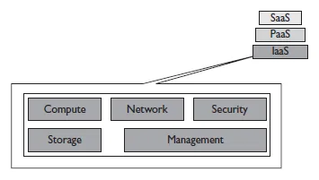
بستر به عنوان سرویس (PaaS) به مشتریان امکان استقرار برنامه های کاربردی را بدون صرف هزینه برای منابع و خرید و نگهداری زیرساخت فراهم می کند. در مقابل، مصرف کننده سرویسهای و برنامه هایی را خریداری یا ایجاد میکند که انحصارا از طریق اینترنت در دسترس هستند. علاوه بر زیرساخت، این کاربران دسترسی به ابزارها و زبان های برنامه سازی برای ایجاد برنامه های خود در سطح PaaS را از طریق واسط های توسعه یا API6 های سرویس دهنده ابری خواهند داشت. مصرف کنندگان خدمات PaaS دیگر نیاز نیست که نگران پیکربندی ها یا نگهداری زیرساخت برای توسعه باشند و میتوانند دقیقا روی آنچه که برایشان مهم است تمرکز کنند: یعنی توسعه برنامه های کاربردی. این تمرکز به آنها این فرصت را میدهد تا سریعتر از محیطهای سنتی، تغییرات را متناسب با نیاز بازار انجام دهند. زیرا در محیطهای سنتی بخشی از تمرکز بر روی نگهداری زیرساخت بود و بخشی دیگر روی توسعه کد. در شکل 1‑2 شمایی گرافیکی از سرویس های ارایه شده توسط سرویس دهندگان PaaS نشان داده شده است.
نرم افزار به عنوان سرویس (SaaS) مدلی از سرویس ابری است که به مصرف کنندگان خدمات ابری این امکان را میدهد تا با استفاده از یک مرورگر وب و از طریق اینترنت، و بر حسب نیاز خود به نرم افزارها و برنامه های کاربردی دسترسی داشته باشند. مشابه دیگر مدل های سرویس ابری، نرم افزار به صورت سرویس در داخل یک سرویس دهنده ابری میزبانی میشود تا مصرف کننده نیازی به خرید سخت افزار مورد نیاز برای استقرار و راه اندازی نرم افزار نداشته باشد. وقتی که یک سازمان از SaaS استفاده میکند، دیگر نیازی به مدیریت نصب و یا مدیریت زیرساختی که از اجرای برنامه پشتیبانی کند نخواهند داشت.
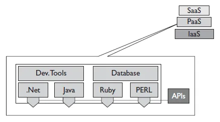
مدل SaaS یک روش کارآمد برای سازمانها است تا کاربردهای مهم کسب و کار خود نظیر سیستم مدیریت ارتباط با مشتری8 (CRM) را در ابر مستقر کنند. در شکل زیر شمایی گرافیکی از برخی سرویس های ارایه شده توسط سرویس دهندگان SaaS نشان داده شده است.
| نکته |
|---|
| شناخت تفاوت بین IaaS، PaaS و SaaS بسیار ضروری است. این سه، مدلهای اصلی میباشند که مبنایی برای دیگر دیگر مدلهای سرویس ابری هستند. نکته مهم در اینجا شناخت کاربران هر مدل سرویس است. گروه کاربران اصلی در IaaS مهندسین و تامین کنندگان سرویس های IT هستند، گروه کاربران اصلی در PaaS توسعه دهندگان، و در SaaS کاربران نهایی هستند. |
پایگاه داده به عنوان سرویس (DBaaS) نوعی از نرم افزار است که برای ارایه عملیات مرتبط با پایگاه داده مورد استفاده قرار میگیرد. این سرویس به ارائه دهندگان خدمات ابری این امکان را میدهد که قابلیتهای پایگاه داده را برای چندین مصرف کننده مختلف فراهم کنند. زیرساخت های DBaaS از موارد زیر پشتیبانی میکند:
تامین نمونه های پایگاه داده برای مصرف کنندگان بصورت سلف-سرویس
نظارت بر مشخصه های کیفیت سرویس برای اطمینان از انطباق با توافق نامه سطح سرویس
اندازه گیری دقیق مصرف پایگاه داده و قابلیت محاسبه هزینه منابع برای هر مصرف کننده بصورت جداگانه
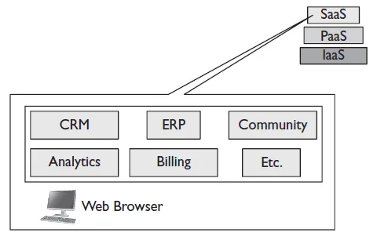
یک زیرساخت DBaaS ممکن است از قابلیت های دیگری نظیر کشسانی سرویس و چند مستاجری امن، دسترسی از طریق تجهیزات مختلف، مدیریت منابع خودکار، و برنامه ریزی ظرفیت نیز پشتیبانی کند. این مفاهیم بعدا در ادامه این بخش بحث خواهد شد.
ارتباطات به عنوان سرویس (CaaS) یک مدل سرویس ابری است که یک سازمان را قادر میسازد تا به خدمات ارتباطی در ابر و از طریق یک ارائه دهنده ابری دسترسی داشته باشد. نظیر خدمات VoIP، پیغام رسانی فوری و ویدئوکنفرانس. مدل CaaS به یک سازمان امکان استقرار سرویسهایی که نیاز دارد را بدون نیاز به تامین هزینه سخت افزار یا مدیریت ارتباطات زیرساخت فراهم میکند و این موضوع صرفهجویی زیادی در هزینه ها برای سازمان خواهد داشت.
فرآیند سازمانی به عنوان سرویس (BPaaS) نشاندهنده نفوذ مدل رایانش ابری فراتر از سرویس های فنی و رایج IT و در داخل فرآیندهای کسب و کار است. مدل BpaaS ترکیبی از فرآیند کسب و کار و نظارت آن توسط یکی از مدل های اصلی سرویس یعنی IaaS، PaaS و SaaS است. نظارت بر یک فرآیند سازمانی به معنی ارزیابی مجموعه ای از فعالیتهای کسب و کار برای ارایه بازخورد بر اساس میزان پیشرفت در مراحل مشخصی از آن فرآیند است. هدف از نظارت بر فرآیند کسب و کار این است که ارایه سرویس های کسب و کار با تحلیل بر روی مراحلی که بصورت کارآمد انجام میشوند و یا مواردی که منتهی به شکست میشوند، بهینه شود و عملیات مناسب برای بهبود فرآیند بر اساس تحلیل انجام شده صورت پذیرد. سیستمهایی که نظارت بر این مراحل اجرا را انجام میدهند با عنوان سیستمهای مدیریت فرآیند کسب و کار12 شناخته میشوند.
در زمان استفاده از BPaaS، فعالیت های سنتی این سیستمهای مدیریت فرآیند کسب و کار به داخل ابر منتقل میشوند و پس از انجام هر مرحله از فرآیند، بر روی اجرای آن نظارت میکنند. مزیت BPaaS در مقایسه با BPMS سنتی مشابه مزایای دیگر مدلهای ابری میباشد؛ به این ترتیب که برای مشتریان، انعطاف پذیری مدل پرداخت بر اساس استفاده و کاهش هزینه های ورود را با حذف نیاز به خرید و ساخت زیرساخت پشتیبان آن را فراهم میکند.
هرچیزی به عنوان سرویس (XaaS) به معنای ارایه خدمات فناوری اطلاعات به صورت سرویس از طریق رایانش ابری ترکیبی است. این مدل میتواند در ترکیب با یکی از نمونه های دیگر SaaS، IaaS، PaaS، CaaS، DBaaS، و یا BPaaS ارایه شود. در مدل XaaS حرف X متغییر است و میتواند بیانگر مجموعه متنوعی از سرویس های ابری مختلف باشد. مدل XaaS یک عبارت است تا بتواند توزیع انواع مختلف اجزای فناوری اطلاعات را در مدل ابری به سادگی توصیف کند.
اکنون که همه انواع مدل های سرویس ابری توضیح داده شد، نیاز است که در خصوص اینکه چه کسی مسئول سرویس ها است آشنا شوید. حسابرسی در ابر میتواند بین گروه های مختلف مشتمل بر مصرف کننده خدمات ابری، ارایه دهندگان زیرساخت و ارایه دهندگان خدمات ابری توزیع شود. حسابرسی در رایانش ابری مربوط به ایجاد یک رویکرد جامع برای رسیدن به امنیت در ابر و تمرکز بر فقدان اعتماد از سمت مصرف کننده است. رایانش ابری سبب ایجاد یک سطح جدید از پیچیدگی در مشخص شدن مسئول قطع سرویس شده است و ارایه دهندگان خدمات ابری با وظیفه دشواری در ایجاد انطباق با این موضوع در محدوده های جغرافیایی مختلف مواجه شده اند. قطع شدن سرویس میتواند در نتیجه انواع مختلف موضوعات نظیر آسیب پذیری در نرم افزار، قطعی برق، سخت افزار، شبکه برنامه کاربردی و یا خطای کاربر باشد.
سه مدل اصلی ارایه سرویس در رایانش ابری رویکردهای امنیتی مختلفی برای کسب و کارها دارند. در SaaS ارایه دهنده سرویس ابری در مباحث امنیت، انطباق پذیری و سایر مسئولیتها، مسئول نگهداری و ارایه سطح سرویس مورد توافق به مصرف کننده است. این در حالی است که در PaaS و IaaS، مصرف کننده خودش مسئول مدیریت این انتظارات است، در حالیکه ارایه دهنده سرویس تنها برخی از مسئولیتها را در بخش امنیت و زیرساخت ارایه سرویس بر عهده دارد. قطعی سرویس میتواند هم در نتیجه پیکربندی نامناسب در تجهیزات سمت کاربر نهایی رخ دهد و هم در نتیجه خطاهای سخت افزاری. در جدول 1‑1 یک مرجع سریع در خصوص مشخص شدن مسئول نگهداری سرویس در هر یک از مدل های ارایه سرویس ابری ارایه شده است.
جدول 1‑1- مسئولیت سطح سرویس
| مدل های سرویس | مسئولیت ارایه دهنده سرویس |
مسئولیت مصرف کننده سرویس |
|---|---|---|
| نرم افزار به عنوان سرویس | X | |
| بستر به عنوان سرویس | X | |
| زیرساخت به عنوان سرویس | X |
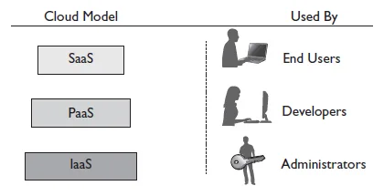
در بحث حسابرسی و مسئولیت پذیری در ابر، بسیار مهم است که ریسک های مربوط به مدل سرویسی که مورد استفاده قرار میگیرد به همراه مکان داده دسته بنده شود. برای مثال، اگر یک کسب و کار از مدل ابر ترکیبی استفاده میکند، از آنجایی که بخشی از داده در ابر و بخشی دیگر در مرکز داده داخلی سازمان قرار دارد، هم مصرف کننده و هم ارائه دهنده سرویس میتوانند مسئول ریسک های مشابه باشند. مهم است که SLA ها و دیگر توافق ها بین مصرف کننده و ارائه دهنده سرویس امضا شود تا بصورت شفاف مشخص شده که چه کسی مسئول جلوگیری از قطع شدن سرویس و مشکلات چگونه دسته بندی، شناسایی و اندازه گیری میشوند. در شکل 1‑4 نشان داده شده است که مصرف کننده عمومی در هر مدل سرویس ابری چه کسی است.
تا اینجا در خصوص انواع مدل های سرویس در دسترس برای پیاده سازی یک راهکار ابری صحبت شد. به منظور درک بهتر ارزش هر یک از این مدل های سرویس در چگونگی دسترسی مشتریان به آنها، میبایست یک مدل ارایه انتخاب شود. پیاده سازی یک مدل استقرار میتواند تاثیرات عمدهای را بر روی سازمان داشته باشد. پیاده سازی ها برای اینکه موفق باشند، نیازمندی برنامه ریزی و در نظر گرفتن ملاحظات دقیق هستند. اگر شما نقش مدیر فناوری اطلاعات را در سازمان داشته باشید، این وظیفه شما خواهد بود که سازمان را در خصوص مزایا و چالش های پیاده سازی یک مدل ابری آگاه کنید و آموزش دهید. لازم است که شما نیازهای کسب و کار را ارزیابی کنید و مشخص کنید که یک مدل ابری، چه مزایایی را برای سازمان شما دارد. صرف نظر از مدل ابری که انتخاب میکنید، چه خصوصی، چه عمومی و چه ترکیبی (که جلوتر توضیح داده میشوند)، لازم است که نگاشت مناسبی با فرآیند های کسب و کاری که میخواهید به آنها دست پیدا کنید صورت پذیرد.
ابر خصوصی یک مدل ارایه ابری است که مالکیت آن در اختیار یک سازمان است و به آنها امکان دسترسی متمرکز به منابع IT را از مکان های مختلف، دپارتمان های مختلف و توسط افراد مختلف را میدهد. یک راهکار ابر خصوصی در پشت دیوار آتش سازمان پیاده سازی شده و توسط دپارتمان IT داخل سازمان نگهداری میشود. یک ابر خصوصی منابع داخلی را مورد استفاده قرار داده و به گونهای طراحی شده است که همه مزایای ابر عمومی را دارد، به اضافه اینکه کنترل، امنیت و هزینهها به خود ارایه دهنده ابری عودت داده شده است. در یک مدل ابر خصوصی، یک سازمان هم مصرف کننده است و هم ارایه دهنده سرویس است.
تصمیم گیری برای پیاده سازی یک ابر خصوصی معمولا از نیاز به حفظ کنترل در محیط خود سازمان، بدلیل مقررات و یا سایر دلایل تجاری نشات گرفته است. برای مثال، یک بانک ممکن است بدلیل مسائل مرتبط با امنیت داده نتواند از یک ابر عمومی استفاده کند، بنابراین آنها میتوانند مدل ابر خصوصی را بکار بگیرند تا از مزایای رایانش ابری استفاده کنند.
یک ابر خصوصی ترکیبی از مجازی سازی، خودکارسازی مرکز داده، اندازه گیری هزینه های مربوط به مصرف منابع و امنیت مبتنی بر هویت میباشد. مجازی سازی امکان مدیریت انعطاف پذیر و مقیاس پذیر منابع را به سهولت فراهم میکند و امکان استفاده حداکثر از سخت افزار را تامین میکند. یک راهکار ابر خصوصی قادر است که از طریق نرم افزار هماهنگ کننده، بصورت خودکار میزبان فیزیکی را تامین کنند که این موضوع بعدا در همین بخش توضیح داده میشود.
یکی از مشکلات ابر خصوصی این است که سازمان نمیتواند هزینه های سرمایه گذاری را برگرداند. علتش این است که سازمان بجای اینکه مسئولیت را به یک ارایه دهنده ابری منتقل کند، خودش مسئولیت اجرا و مدیریت منابع را بر عهده گرفته است.
| نکته |
|---|
| ابر خصوصی به شما امکان استفاده از مزایای محیط ابر را بدون انتقال داده به اینترنت فراهم میکند. |
برخلاف ابر خصوصی که مالکیتش با خود سازمان است، یک ابر عمومی شامل مجموعهای از سرویسهای رایانشی است که از طریق اینترنت و توسط یک ارایه دهنده ابری فراهم میشوند. یک ارایه دهنده سرویسهای ابری، منابعی نظیر برنامههای کاربردی و فضای ذخیره سازی را از طریق اینترنت در اختیار سازمانها قرار میدهد. ابرهای عمومی، معمولا از مدل پرداخت بر اساس استفاده پیروی میکنند که طبیعتا این مزیت را برای شرکتها خواهد داشت تا تنها برای منابعی که استفاده میکنند هزینه پرداخت کنند. بدلیل پوشش داده شدن هزینهها و نگهداری سخت افزار، پهنای باند و برنامههای کاربردی توسط ارایه دهنده ابری، ابرهای عمومی شروعی آسان و ارزان را فراهم میکنند و هزینهها بر اساس توافقنامه سرویس توسط مصرف کننده پرداخت میشود.
| نکته |
|---|
| احتمالا نمونه های SaaS نظیر ذخیره سازی ابری، برنامه های آفیس برخط را که نمونه هایی از ابر عمومی هستند مشاهده کردهاید. آنچه که ممکن است ندیده باشد، مدل های IaaS و PaaS هستند که میزبانی وب ابری و محیط های توسعه از جمله این مدلها میباشند. |
ابرهای عمومی وقتی مورد استفاده قرار میگیرند که یک سازمان به سطح امنیت کمتری از ابرخصوصی نیاز داشته باشد. سازمانهایی که نیاز به امنیت داده دارند نیز میتوانند از ابرهای عمومی برای کارهای دیگر خود نظیر فضای ذخیره سازی برای محتوای غیرحساس، مشارکت برخط بر روی اسناد، و پست الکترونیکی بهره مند شوند.
یک ابر عمومی بدلیل اینکه منابع آن بر حسب تقاضا و از مجموعه وسیعی از منابع در سمت ارایه دهنده ابری تامین میشود، میتواند مقیاس تقریبا نامحدودی را برای مشتریان فراهم کند. سازمانهایی که نیاز به خرید و پیاده سازی سخت افزاری برای افزایش مقیاس محیط خود ندارند، تنها کافیست منابع بیشتر را از ارایه دهنده ابری خریداری کنند. در دسترس بودن ابر عمومی از طریق اینترنت، این امکان را فراهم میکند که سرویسها از هرجایی توسط مشتریان قابل استفاده باشد، که به این ترتیب ابر عمومی میتواند مستقل از مکان مشتری به او سرویس بدهد. از نمونه ابرهای عمومی، خدمات ابری شرکت اچ.پی، ماکروسافت آژور و سرویس های وب آمازون را میتوان نام برد.
ابر ترکیب یک نوع سرویس ابری است که هر دو نوع ابر خصوصی و عمومی را برای انجام کارهای متمایز در یک سازمان مورد استفاده قرار میدهد. ممکن است در یک سازمان هم نیاز به یک سرور محلی برای اجرای یک برنامه کاربردی با نیازهای امنیتی خاص باشد، و هم نیاز به ابر عمومی برای میزبانی برنامه های کاربردی جانبی، فایلها و پایگاه داده وجود داشته باشد. این دو محیط باید به گونهای پیکربندی شوند که ضمن اینکه مقیاس پذیر باشد، قابلیت تعامل با همدیگر را نیز داشته باشند.
در یک مدل ابر ترکیبی، یک سازمان میتواند در حین اینکه برخی از منابع را بصورت داخلی مدیریت میکند، منابع دیگری را نیز بصورت خارجی و از طریق یک فراهم کننده ابر عمومی تامین کند. یک ابر ترکیبی به سازمان این امکان را میدهد که از مزایای مقیاس پذیری و کاهش هزینهها در ابر عمومی استفاده کند، بدون اینکه نیاز باشد داده های مهم خود را به ابر عمومی منتقل کند.
یک نمونه دیگر از مدل ابری ترکیبی زمانی است که سازمان بستر توسعه خود را از ابر عمومی تامین کرده است ولی دادهها در ابر خصوصی میزبانی میشوند. مثال دیگر زمانی است که سازمان از چندین برنامه SaaS استفاده میکند و دادههای مربوط به آن برنامهها را بین دو ابر یا مرکز داده جابجا میکند. البته در حالتی که این جابجایی در دادههای چند برنامه کاربردی SaaS وجود نداشته باشد، ابر ترکیبی معنا ندارد. بنابراین ابر ترکیبی در حالتی تعریف میشود که ترکیبی از یک ابر خصوصی یا عمومی داشته باشیم، یا داده بین مرکز داده داخلی سازمان و ابر عمومی جابجا شود. نمونههایی از ابر ترکیبی در شکل 1‑5 نشان داده شده است.
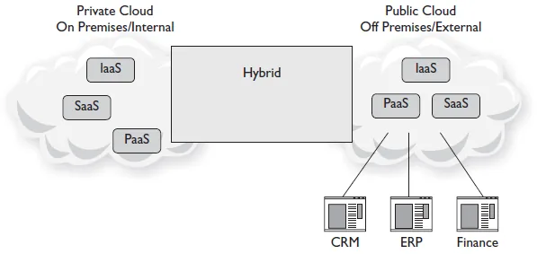
ابر انجمنی زمانی تعریف میشود که زیرساخت بین چند سازمان با نیازهای رایانشی و اهداف مشترک به اشتراک گذاشته شده باشد. ابرهای انجمنی بطور خاص برای گروه هایی با نیازهای ابری مشترک ایجاد میشوند، خصوصا آنهایی که هدف نهاییشان کار با همدیگر برای رسیدن به اهداف تجاری مشخص میباشد.
ابرهای انجمنی معمولا برای سازمانهایی پیاده سازی میشود که روی یک پروژه مشترک کار میکنند و در آن نیاز به یک ابر مرکزی برای مدیریت اجرای آن پروژه میباشد. یک ابر مالی، با نیازمندی های امنیتی مشخص یا تاخیر شبکه بسیار کم جهت اجرای تراکنشهای مالی توسط چند سازمان مختلف، نمونهای از ابر انجمنی میباشد.
| نکته |
|---|
| در یک ابر انجمنی، رویکرد مجزایی برای افزایش امنیت در نظر گرفته میشود. نکته کلیدی این است که ابر انجمنی به یک گروه خاص محدود شده است. |
یک ابر انجمنی میتوانند در داخل سازمان یا بیرون از سازمان(هایی) که از آن استفاده میکنند ایجاد شده باشد و توسط خود سازمانها و یا یک سرویسدهنده ابری مدیریت شود.
| مثالی از ابر انجمنی در صنعت سلامت |
|---|
شرکت های IT که بر روی پشتیبانی از صنعت سلامت فعالیت میکنند، لازم است که راهکارهایی طراحی کنند که با مقررات این حوزه سازگاری داشته باشد. قانون HIPAA 21 از جمله مقرراتی است که در حوزه سلامت در برخی از کشورها باید رعایت شود. ابرهای انجمنی در راهکارهای خود انتخاب هایی دارند که به واحدهای IT امکان ارایه سرویسهای فنی سازگار با نیازهای مشتری و مقررات مربوطه را میدهد. برای ارایه ارزش ابرهای انجمنی برای صنعت سلامت، یک سناریوی واقعی را بررسی میکنیم. Deeter یک توسعه دهنده برنامههای کاربردی است که برنامه های سفارشی را برای مطب چندین پزشک طراحی کرده است. همه این مطب ها به شبکه Midwest HealthNet که یک ابر انجمنی است متصل هستند. این راهکار ابری، داده های مربوط به بیماران را در سمت ارایه دهندگان خدمات سلامت تجمیع میکند. محصول اصلی یک SaaS با عنوان HealthNet Online است که تنها برای اعضای شبکه در دسترس است. Deeter از یک راهکار PaaS برای توسعه برنامه کاربردی در این شبکه برای مشتریان خودش استفاده میکند. از آنجایی که همه این توسعه ها در داخل ابر انجمنی انجام میشود، داده در داخل آن و سازگار با قوانین HIPAA باقی میماند. |
میزبانی درون ملکی روش سنتی مدیریت یک مرکز داده است. در چنین محیطی، سرورهای مجازی در داخل یک سایت در درون مرکز داده داخلی سازمان میزبانی میشوند و سازمان خودش مالک آنهاست و سخت افزارها را نگهداری میکند. مزیت میزبان درون ملکی این است که سازمان کنترل کامل بر روی مدیریت و نگهداری روزانه سرورهای خود دارد. مشکل این روش این است که سازمان باید هزینه مرکز داده داخلی خود را مشتمل بر توان مصرفی، امنیت، نگهداری لایسنس، سخت افزار و دیگر موارد را پرداخت کند.
در راهکار میزبانی بیرون ملکی که اغلب به آن رایانش ابری نیز گفته میشود. منابع در داخل یک ابر میزبانی میشود و بصورت آنلاین در دسترس قرار میگیرند. راهکار بیرون ملکی میتواند هم برای مجازی سازی سرور و هم استقرار برنامه های کاربردی در ابر مورد استفاده قرار بگیرد. یکی از مزایای میزبان بیرون ملکی این است که هزینه معمولا کمتر از حالت درون ملکی است که بدلیل عدم نیاز به قرار گرفتن منابع در مرکز داده داخلی سازمان میباشد. این کار باعث میشود که هزینه ها IT به مدل پرداخت اساس میزان رشد تبدیل شود و عملا هزینه ها پایین نگهداشته شود. امنیت میزبان بیرون ملکی اغلب کمتر در نظر گرفته میشود و بعبارت دیگر ریسک امنیتی بالایی دارد. بدلیل اینکه سازمان کنترل خود را بر روی داده هایی که در ابر قرار گرفته است از دست میدهد.
خودکارسازی کارهای روزمره مدیریتی امروزه بیش از یک نیاز در واحدهای IT میباشد. بسترهای هماهنگ کننده یک راه خودکار برای مدیریت ابر یا محیط رایانشی میباشد. خودکارسازی باعث میشود که یک مرکز داده پویا داشته باشیم که در آن درخواست های کسب و کار با برنامه های کاربردی، داده و زیرساخت تنظیم شده است. در یک مدل کسب و کار معمولا مجموعه ای از سیاست ها و سطوح سرویس تعریف میشود که واحد IT باید آنها را رعایت کند. بسترهای هماهنگ کننده به واحد IT کمک میکنند که این نیازمندی ها را از طریق جریانهای کاری خودکار، و ویژگیهای مربوط مدیریت تغییرات تامین کنند. این کار به یک زیرساخت مقیاس پذیر و پویا این امکان را میدهد که بر اساس نیازهای کسب و کار بصورت پیوسته تغییر کند. برای مثال در یک بستر هماهنگ کننده، توسعه دهنده میتواند درخواست ایجاد یک ماشین مجازی را از طریق پرتال سرویس بدهد و نرم افزار هماهنگ کننده بطور خودکار آن ماشین مجازی را از روی الگوهای از پیش تعریف شده ایجاد کند. نرم افزار هماهنگ کننده میتواند برای مدیریت متمرکز مجموعه منابع و کارهایی نظیر صدور صورتحساب، اندازه گیری و محاسبه هزینه و جزئیات منابع مصرف شده به تفکیک واحد های مختلف یک سازمان نیز مورد استفاده قرار بگیرد.
بسترهای هماهنگ کننده ابزارهای خودکار را در اختیار شرکتها قرار میدهند تا کارهایی که معمولا توسط تیمی از مدیران سیستم انجام می شوند را انجام دهند. این بسترها یک رویکرد خودکار برای ایجاد سخت افزار و نرم افزار فراهم میکنند تا بتوانند برای ارایه سرویس ها و یا برنامه های کاربردی از پیش تعیین شده، با هم کار کنند. بسترهای هماهنگ کننده در محیط های ابری به راحتی امکان مقیاس پذیری و یا تدارک برنا مه های کاربردی و سرویس های جدید را بر حسب تقاضا و از طریق جریانهای کاری فراهم می کنند.
بعنوان چند نمونه از بسترهای هماهنگ کننده میتوان به HP Operations Orchestration، Flexiant Cloud Orchestrator و Microsoft System Center Orchestrator اشاره کرد. همه بسترهای هماهنگ کننده، امکان ایجاد جریان های کاری را برای خودکار سازی فعالیت های مدیریتی روزمره فراهم کنند.
در زمان پیاده سازی یک مدل رایانش ابری، لازم است که سازمان با اصطلاحات رایانش ابری و مشخصه های تدارک منابع مقیاس پذیر و قابل اندازه گیری از راه دور آشنا شود. مدیر IT به عنوان یک مصرف کننده خدمات ابری، نیاز دارد که برای ارزیابی این مشخصهها و اندازه گیری ارزش ارایه شده در بستر ابری، با ارایه دهنده خدمات ابری کار کند.
قابلیت کشسانی25 میتواند بصورت فضای نامحدودی در نظر گرفته شود که بصورت پویا به سازمان امکان دریافت و یا آزادسازی منابع ذخیره سازی و پردازشی را به منظور تامین نیاز آن میدهد. قابلیت کشسانی میتواند به سازمان در جلوگیری از تامین بیش از نیاز سخت افزار و منابع کمک کند. این قابلیت یکی از مزایای رایانش ابری است، زیرا برای واحد IT امکان افزایش مقیاس را بدون نیاز به خرید و راه اندازی سخت افزارهای بیشتر در مرکز داده داخلی خود فراهم میکند. تفاوت اصلی بین مقیاس پذیری و کشسانی این است که در مقیاس پذیری، بارکاری سیستم میتواند بر روی منابع سخت افزاری موجود افزایش داده شود، در حالیکه در قابلیت کشسانی، این قابلیت بصورتی است که بارکاری هم بر روی منابع فعلی، و هم بر روی منابع سخت افزاری بیشتر قابل افزایش خواهد بود.
در یک محیط سلف-سرویس مبتنی بر تقاضا26، کاربران به سرویس های ابری از طریق یک پرتال برخط دسترسی دارند. این قابلیت به آنها امکان تامین منابع ابری را در هر زمان و هر مکانی که نیاز داشته باشند میدهد. مدل سلف-سرویس و بر حسب تقاضا، به مصرف کنندگان خدمات ابری امکان دریافت منابع رایانشی مورد نیازشان را بصورت خودکار و بدون نیاز به تعامل انسان، از ارائه دهنده خدمات ابری فراهم میکند.
یکی از مزایای ابرهای عمومی، فلسفه پرداخت بر اساس میزان رشد در آنها است. مدل هزینه پرداخت بر اساس میزان رشد، سازمان را قادر میسازد که تنها برای سرویسهایی که استفاده میکند، بصورت ساعتی یا بر اساس میزان منابع مصرف شده، هزینه پرداخت کند. بنابراین در این مدل نیاز به هزینه سرمایه گذاری بزرگی را از قبل برای تامین منابع زیرساخت نخواهد داشت. مهم است که یک شرکت بتواند هزینه های خود را قبل از استقرار برنامههای کاربردیشان در ابر، طراحی و برنامه ریزی کند. اکثر ارائه دهندگان ابری، یک سیستم حسابگر دارند که به سازمان ها در محاسبه هزینه هایی که با مهاجرت به ابر مواجه خواهند شد، کمک میکند. این کار به شرکتها درک بهتری از مدل پرداخت بر اساس میزان رشد را در زمان استفاده از زیرساختهای ابر عمومی میدهد.
مفهوم Chargeback در فناوری اطلاعات یک راهبرد برای محاسبه هزینه سرویسهای IT بر حسب واحدهای مختلف یک سازمان است. این سیستم به کسبوکارها امکان تصمیمگیری بهتر در خصوص هزینه های بخش IT را میدهد تا بتوانند هزینههای یک سرویس خاص را بهتر تعیین کنند. بدون یک سیستم Chargeback، همه هزینههای فناوری اطلاعات سازمان بصورت متمرکز و به اسم واحد IT در نظر گرفته میشود، و تعیین سودمندی هر کدام از سرویسهایی که توسط این واحد پشتیبانی میشود، یا غیرممکن است و یا بصورت محدود انجام میگیرد. سیستم Chargeback سازمان را قادر میسازد که هزینه واقعی یک واحد یا حتی یک کاربر را از میزان منابع مورد استفاده محاسبه کند. البته اکثر ابرهای خصوصی، از اصلاح showback بجای chargeback برای توصیف میزبان منابع مصرف شده در هر بخش استفاده میکنند.
با قابلیت دسترسی از همه جا27، یک سرویسدهنده ابری میتواند خدمات خود را از طریق شبکه و با مکانیزمهای استاندارد، از طریق تینکلاینت یا سیستم های قویتر ارایه کند. این لزوما به معنای دسترسی از طریق اینترنت نیست. با این حال دسترسی از همه جا به معنای امکان استفاده از سرویس ابری از طریق یک مرورگر، از هرجایی می باشد. یک مصرف کننده خدمات ابری، چه در خانه باشد، یا محل کار یا یک فروشگاه، میتواند سطح سرویس مشابهی را دریافت کند.
اندازه گیری28 به معنای توانایی یک بستر ابری در محاسبه میزان استفاده از منابع آن برای ارایه به مصرف کننده میباشد. قابلیت اندازه گیری، ارایه دهنده خدمات ابری را قادر میسازد تا بتواند هزینه واقعی منابع مورد استفاده را محاسبه کند. اندازه گیری ارتباط تنگاتنگی با مدل مصرف بر حسب تقاضا دارد.
لازم به ذکر است که اندازه گیری تنها برای صدور صورتحساب نیست. بلکه برای نظارت عمومی بر منابع و گزارشدهی به مصرف کننده و سرویس دهنده هم استفاده میشود. به همین دلیل قابلیت اندازه گیری نه تنها در ابرهای عمومی بلکه حتی در ابرهای خصوصی نیز یک مزیت محسوب میشود.
چندمستاجری29 یک معماری است که در آن یک نمونه از برنامهکاربردی به چندین مشتری یا مستاجر سرویس میدهد. هر یک از مستاجرها میتوانند دید متمایز خود را به برنامه کاربردی داشته باشند و آن را متناسب با نیاز خود سفارشی سازی کنند، بدون اینکه مستاجرهای دیگری که از همان برنامهکاربردی استفاده میکنند، از این تغییرات مطلع شوند.
کاربردهای چندمستاجر باید بگونهای باشند که مستاجرها نتوانند هرگونه پیکربندی را به دلخواه خود تغییر دهند، با این حال آنها قادر خواهند بود که بخشهای مجاز نظیر واسط کاربری را متناسب با سلیقه خود سفارشی کنند.
پیاده سازی یک برنامه کاربردی چندمستاجره کار بسیار پیچیدهای در مقایسه با یک برنامه تک مستاجره است. برنامه های چندمستاجره، باید بتوانند از به اشتراک گذاری منابع مختلف (نظیر پایگاه داده، میان افزار، پرتال) بین کاربران پشتیبانی کنند و در این بین، امنیت محیط را نیز تامین کنند.
رایانش ابری به این دلیل که مدلهای جدید سرویس را از طریق مجازی سازی و دسترسی از راه دور فراهم کرده است، عملا مفهوم چندمستاجری را بیشتر گسترش داده است. یک سرویس دهنده SaaS میتواند یک نمونه از برنامه کاربردی را روی یک پایگاه داده ابری اجرا کند و دسترسی به آن را از طریق وب برای چندین مشتری فراهم کند. دادههای هر مستاجر بصورت مجزا و پنهان از دید مستاجرهای دیگر خواهد بود.
مفهوم Cloud Bursting به معنای این است که برنامههای کاربردی که بر روی منابع داخلی سازمان یا ابر خصوصی قرار دارد، بر حسب تقاضا و در زمان کمبود منابع داخلی، بتوانند به ابر عمومی منتقل شوند. این ویژگی معمولا برای برنامه های نیازمند به کارآیی بالا و غیر حساس که داده حساسی نیز ندارند مورد استفاده قرار میگیرد. این ویژگی امکان استقرار یک برنامه کاربردی را در مرکز داده داخلی فراهم میکند بصورتیکه برای پاسخ به زمان اوج مصرف بتواند بارکاری بیشتر را به ابر عمومی ارسال کند.
اگر که سازمانی قصد داشته باشد از ویژگی Cloud Bursting استفاده کند، نیاز خواهد بود که ملاحظات امنیتی را در نظر بگیرد و منطبق با مقررات باشد. مثالی از زمانی که استفاده از این ویژگی مناسب است، صنعت خرده فروشی است، زمانیکه یک شرکت با حجم زیادی از تقاضا مثلا در ایام تعطیل مواجه میشود. اصولا تنها مشکل روش Cloud Bursting این است که داده های حساس در داخل ابر عمومی قرار میگیرد و بصورت بالقوه دادههای مشتریان با خطر مواجه میشود. شکل 1‑6 و شکل 1‑7 مثالی از یک برنامه کاربردی را که با بارکاری سنگین مواجه میشود و در نتیجه بارکاری اضافه را به ابر عمومی میفرستد نشان میدهند.
| توجه |
|---|
| ویژگی Cloud Bursting یک روش کوتاه مدت برای افزایش منابع از طریق ابر و بر حسب تقاضا است، اما دارای مخاطرات امنیتی از جهت انتقال دادههای شما به ابر عمومی است. |
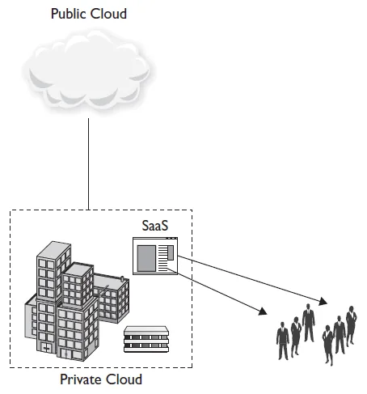
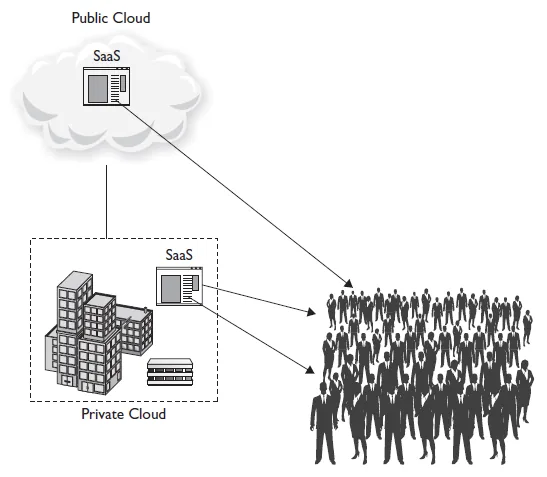
ذخیرهسازی مبتنی بر شیء30 مفهومی است که برای کمک به توسعه راهکارهایی برای پاسخ به نیاز ناشی از رشد داده شکل گرفته است. این مفهوم در مقابل ذخیرهسازی مبتنی بر بلاک31 قرار میگیرد، به این ترتیب که در آن مجموعههای بزرگی از فایلها با همدیگر در یک گروه قرار گرفته و توان پردازشی مورد نیاز برای آنها از سرورها فاصله گرفته و به خود سیستمهای ذخیرهسازی نزدیک میشود. این توان پردازشی برای کمک به پیادهسازی ویژگیهایی با میزان ریزدانگی بیشتر در بکارگیری سیاستهای امنیتی، مدیریت فضا و ایجاد انتزاع در داده مورد استفاده قرار میگیرد.
از آنجایی که در ذخیرهسازی مبتنی بر شیء آدرسدهی بر اساس بلاک انجام نمیشود، لازم است که در واسط دستگاه ذخیره سازی مبتنی بر شیء (OSD 32) راهی برای پیدا کردن آدرس داده در نظر گرفته شود. اشیاء تکههای داده متمایزی هستند که در سیستم ذخیره سازی ابری قرار میگیرند و از بخشهایی تشکیل شده اند: داده، که معمولا یک فایل است که باید ذخیره شود، و متادیتا، که مجموعهای از مقادیر توصیف کننده مشخصات شیء است. واسط OSD از شناسه شیء به عنوان یک شناسه منحصر به فرد برای ترکیب داده و متادیتای مربوط به هر شیء استفاده میکند.
به صورت متناظر با همه فایلهایی که هر شیء در بر دارد، مجموعهای از متادیتا وجود دارد که اجزای داده را بر روی هر شیء توصیف میکند و بیانگر ارتباط آن با دیگر اشیاء میباشد. این متادیتا یک مجموعه قابل توسعه از مشخصاتی است که یا مستقیما توسط OSD برای برخی از ویژگیهای مشترک پیاده سازی شده است، یا در یک سیستم ذخیره سازی سطح بالاتر که OSD برای ذخیره سازی پایدار از آن استفاده میکند ایجاد شده است.
یک شیء باینری بزرگ یا BLOB 33 مجموعه ای از دادههای باینری است که بصورت یک موجودیت واحد گسسته در سیستم مدیریت پایگاه داده ذخیره شده است. با جمع آوری این دادههای باینری در یک مجموعه بزرگتر، مدیران پایگاه داده قادر خواهند بود که مجموعههای بزرگ داده را بهتر و با سربار کمتری بین پایگاههای داده کپی کنند.
سیاست ها شبیه به متادیتا هستند، به این صورت که مشخصههایی در ارتباط با یک شیء هستند. تفاوتشان در این است که برچسب های سیاست، شامل اطلاعاتی است که در ارتباط با یک مکانیزم امنیتی خاص است.
یکی از موارد استفاده اصلی سیستم ذخیره سازی مبتنی بر شیء، امکان تکرار داده34 است. تکرارداده به معنای کپیهایی از یک مجموعه داده بزرگ است که هر کدام از آنها معمولا در یک دیسک مجازی یا ماشین مجازی قرار میگیرند. این کپیها هم برای افزایش دسترسپذیری داده و هم کاهش ریسک نگهداری مجموعه بزرگ داده در یک مکان ایجاد میشود. بدلایل مختلف، تکرارها ویژگی مناسبی برای ذخیره سازی مبتنی بر شیء هستند:
مجموعه داده های بزرگی وجود دارد که نیازمند مکانیزم کپی کارآمد هستند، بدون اینکه هزینههای سربار بررسی و تصحیح خطا یا فیلتر کردن در آنها وجود داشته باشد.
این کپیها میزان کارآیی مورد انتظار کاربر در SLA را در صورت وجود تاخیر در I/O که اغلب در ذخیره سازی مبتنی بر شیء وجود دارد، تحت تاثیر قرار نمیدهد.
تعاریف رایانش ابری پیوسته در حال تغییر است. بنابراین شناخت شباهت ها و تفاوت های بین مدلهای ابری با دیگر مدلها از اهمیت زیادی برخوردار است. همچنین درک این موضوع که سازمانها چگونه از رایانش ابری منتفع میشوند نیز بسیار مهم است. رایانش ابری یک صنعت در حال رشد است و متخصصین IT لازم است که همراه با آن رشد کنند و تخصصهای لازم را فرا بگیرند.
زیرساخت به عنوان سرویس (IaaS): یک مدل سرویس ابری است که توسط آن مصرف کننده ابری مسئولیت زیرساخت خود را به یک سرویس دهنده ابری بیرونی برون سپاری می کند، شامل سرورهای ذخیره سازی، زیرساخت و اتصالات و ...
بستر به عنوان سرویس (PaaS): یک مدل سرویس ابری است که زیرساخت را برای برنامه های کاربردی مهیا می نماید و نگهداری آنها را به سرویس دهنده ابری می سپارد.
نرم افزار به عنوان سرویس (SaaS): مدلی از سرویس ابری است که به مصرف کنندگان خدمات ابری این امکان را میدهد تا از طریق اینترنت، و بر حسب نیاز خود به نرم افزارها و برنامه های کاربردی دسترسی داشته باشند.
پایگاه داده به عنوان سرویس (DBaaS): مدلی از سرویس ابری است که قابلیتهای پایگاه داده را برای چندین مصرف کننده مختلف از طریق اینترنت فراهم می کند.
ارتباطات به عنوان سرویس (CaaS): یک مدل سرویس ابری است که یک سازمان را قادر میسازد تا به خدمات ارتباطی در ابر از طریق یک ارائه دهنده ابری دسترسی داشته باشد. نظیر VoIP، شبکه های خصوصی مجازی(VPNs)، پیغام رسانی فوری(PBX)
فرآیندهای تجاری به عنوان سرویس (BPaaS): نظارت بر یک فرآیند سازمانی به معنی ارزیابی مجموعه ای از فعالیتهای کسب و کار برای ارایه بازخورد بر اساس میزان پیشرفت در مراحل مشخصی از آن فرآیند است.
هرچیزی به عنوان سرویس (XaaS): سرویس ابری که ارایه دهنده خدمات فناوری اطلاعات به صورت سرویس از طریق رایانش ابری ترکیبی و با ترکیب یکی از نمونه های SaaS، IaaS، PaaS، CaaS، DBaaS است.
ابر خصوصی: یک مدل ارایه ابری است که مالکیت و نگهداری آن در اختیار یک سازمان است. این ابر در پشت دیوار آتش سازمان پیادهسازی شده و سازمان را قادر می سازد تا به صورت متمرکز بر روی منابع داخلی دسترسی داشته باشد.
ابر عمومی: شامل مجموعهای از سرویسهای رایانشی و منابع است که از طریق اینترنت توسط یک ارایه دهنده ابری برای مصرف کننده فراهم میشوند.
ابر ترکیبی: ترکیبی از ابر خصوصی و ابر عمومی است که به یک سازمان اجازه داده می شود تا توابع مجزایی را درون سازمان اجرا کند.
ابر انجمنی: بطور خاص برای گروه هایی با نیازهای ابری مشترک ایجاد میشوند، منابع ابر و زیر ساخت در بین چندین سازمان برای رسیدن به اهداف تجاری مشخص به اشتراک گذاشته می شود.
کشسانی: قابلیت کشسانی به سازمان اجازه میدهد بصورت پویا به دریافت و یا آزادسازی منابع ذخیره سازی و پردازشی به منظور تامین نیاز بپردازد.
سلف-سرویس و بر حسب تقاضا: کاربران به سرویس های ابری از طریق یک پرتال برخط دسترسی دارند. این قابلیت به آنها امکان تامین منابع ابری را در هر زمان و هر مکانی که نیاز داشته باشند میدهد.
پرداخت بر اساس میزان رشد: یک مفهوم در محاسبات ابری است که شما برای منایع ابری در یک سازمان به میزان استفاده خود از آن منابع پرداخت می کنید.
Chargeback: یک راهبرد برای محاسبه هزینه سرویسهای IT بر حسب واحدهای مختلف یک سازمان و به صورت غیر متمرکز در سازمان است.
دسترسی از همه جا: یک سرویسدهنده ابری میتواند خدمات خود را از طریق یک مرورگر از هرجایی، در خانه و یا محل کار و یا یک فروشگاه، سطح سرویس مشابهی را دریافت کند.
اندازه گیری: به معنای توانایی یک بستر ابری در محاسبه میزان استفاده از منابع فناوری اطلاعات برای محاسبه هزینه واقعی منابع ارایه دهنده به مصرف کننده میباشد.
چند مستاجری: یک معماری است که در آن یک نمونه از برنامهکاربردی به چندین مشتری یا مستاجر سرویس میدهد.
Cloud Bursting: اجازه می دهد به یک برنامه کاربردی که بر روی ابر خصوصی قرار دارد، بر حسب تقاضا، بتواند به ابر عمومی منتقل شوند.
شناسه شیء: شناسه منحصر به فرد که برای نام هر شیء استفاده می شود.
متادیتا: اجزای داده را بر روی هر شیء توصیف میکند و بیانگر ارتباط آن با دیگر اشیاء میباشد شامل چگونگی فرمت داده ها.
داده BLOB: مجموعه ای از دادههای باینری است که بصورت یک موجودیت واحد گسسته در سیستم ذخیره شده است.
سیاست ها: مجموعه قوانینی که کاربران و مدیران در ارتباط با یک مکانیزم امنیتی خاص است.
تکرار داده: کپیهایی از یک مجموعه داده بزرگ بین افزونگی سخت افزار است.
یک مدل سرویس ابری، مجموعه ای از سرویسهای مبتنی بر فناوری اطلاعات میباشد که توسط سرویسدهنده خدمات ابری ارایه میشود.
.مدل زیر ساخت به عنوان سرویس(IaaS)، یک مدل سرویس ابری است که ارائه دهنده سرورهای ذخیره سازی، زیرساخت و اتصالات برای مصرف کننده باشد.
بستر به عنوان سرویس (PaaS) به توسعه دهندگان امکان توسعه و تست برنامه های کاربردی را بدون نگرانی در مورد زیر ساخت مشخص و پیکره بندی آن را فراهم می کند.
نرم افزار به عنوان سرویس(SaaS) مدلی از سرویس ابری است که به مصرف کنندگان خدمات ابری این امکان را میدهد تا با استفاده از یک مرورگر وب و از طریق اینترنت، و بر حسب نیاز خود به نرم افزارها و برنامه های کاربردی دسترسی داشته باشند.
ارتباطات به عنوان سرویس (CaaS) یک مدل سرویس ابری است که یک سازمان را قادر میسازد تا به خدمات ارتباطی در ابر از طریق یک ارائه دهنده ابری دسترسی داشته باشد. نظیر خدمات VoIP و PBX.
هرچیزی به عنوان سرویس (XaaS) یک واژه کلی است که به صورت ترکیبی از سرویس های مختلف رایانش ابری ارایه می شود.
ابر خصوصی یک مدل ارایه ابری است که مالکیتش در اختیار یک سازمان است و به همراه سازمان سرویس میدهد. این ابر در پشت دیوار آتش سازمان پیادهسازی شده و توسط واحدهای IT داخلی نگهداری میشود.
ابر عمومی شامل مجموعهای از سرویسهای رایانشی و منابع است که از طریق اینترنت توسط یک ارایه دهنده ابری برای مصرف کننده فراهم میشوند.
ابر ترکیبی ، ترکیبی از ابر خصوصی و ابر عمومی است که به یک سازمان اجازه داده می شود تا منابع خود را بین سرور محلی و ابر عمومی جابجا نماید.
ابر انجمنی بطور خاص برای گروه هایی با نیازهای ابری مشترک ایجاد میشوند، منابع ابر و زیر ساخت در بین آنها برای رسیدن به اهداف تجاری مشخص به اشتراک گذاشته می شود.
نرم افزار هماهنگ کننده یک شیوه خودکارسازی است که منابع رایانش را برای توسعه خودکار ماشین های مجازی و سایر زیر ساخت ها مدیریت می نماید.
قابلیت کشسانی به سازمان اجازه میدهد که بصورت پویا منابع محاسباتی مورد نیاز در شبکه خود را افزایش یا کاهش دهد.
سرویس بر حسب تقاضا، به مصرف کنندگان خدمات ابری امکان دریافت سرویس های ابری را بر اساس تقاضا و هر کجا نیاز دارند، فراهم می نماید.
پرداخت بر اساس میزان رشد که در این مدل هزینه پرداخت تنها برای سرویسهایی که استفاده میکند، صورت می گیرد. بنابراین در این مدل نیاز به هزینه سرمایه گذاری بزرگ از قبل نخواهد داشت.
اندازه گیری ارایه دهنده خدمات ابری را قادر میسازد تا بتواند هزینه واقعی منابع مورد استفاده را در دپارتمان مربوطه محاسبه کند.
Cloud Bursting اجازه می دهد به یک برنامه کاربردی که بر روی ابر خصوصی قرار دارد، بر حسب تقاضا، برای گرفتن منابع داخلی بیشتر بتواند به ابر عمومی منتقل شوند.
متادیتا با استفاده از مشخصههای داخل یک فایل، داده را توصیف میکند.
داده BLOB مجموعه ای از دادههای باینری است که بصورت یک موجودیت واحد گسسته در سیستم پایگاه داده ذخیره شده است.
تکرار داده کپیهایی از یک مجموعه داده بزرگ است برای افزایش دسترسپذیری داده و هم کاهش ریسک نگهداری مجموعه بزرگ داده در یک مکان ایجاد میشود.
پرسشهای زیر به شما کمک میکند میزان یادگیری خود را از مطالب این فصل بسنجید. گزینه مورد نظر را انتخاب کنید تا پاسخ و توضیح آن نمایش داده شود.
پاسخ صحیح: ج) Amazon Web Services
ج. (صحیح) Amazon Web Services مثالی از IaaS است زیاکه منایع سخت افزاری بر روی اینترنت را فراهم می نماید.
الف و ب و د. (غلط) الف و ب مثالی از SaaS است و AppScale مثالی از PaaS است.
پاسخ صحیح: الف) XaaS
الف. (صحیح) هرچیزی به عنوان سرویس ( XaaS ) یک مفهوم کلی است.
ب و ج و د. (غلط) ارتباطات به عنوان سرویس ( CaaS )، نظارت به عنوان یک سرویس( MaaS ) و مهاجرت به ابر به عنوان یک سرویس( C-MaaS ) مثال هایی از XaaS هستند.
پاسخ صحیح: ب) CaaS
ب. (صحیح) VoIP مثالی از CaaS است.
الف و ج و د. (غلط) VoIP مثالی از هیچکدام از سرویس های ابری ذکر شده نیست.
پاسخ صحیح: د) IaaS
د. (صحیح) در مدل سرویس ابری IaaS ، فراهم کننده منابع سخت افزاری کامپیوتر ها را ارایه می نماید.
الف و ب و ج . (غلط) SaaS به مصرف کنندگان این امکان را میدهد تا با استفاده از یک مرورگر وب و بر حسب نیاز به نرم افزارها و برنامه های کاربردی دسترسی داشته باشند CaaS. خدمات ارتباطات از طریق شبکه را فراهم می نماید مانند VoIP . PaaS راهی برای اجاره سخت افزار، سیستم های عامل، ذخیره سازی روی شبکه را مهیا می نماید.
پاسخ صحیح: ج) PaaS
ج. (صحیح) PaaS بستری را برای توسعه دهندگان فراهم می نماید که بتوانند برنامه های کاربردی و سرویس های خود را از طریق دسترسی به مرورگر وب تست نمایند.
الف و ب و د. (غلط) در IaaS ، فراهم کننده، منابع سخت افزاری کامپیوتر ها را ارایه می دهد. سازمان ها برای حمایت از تجارت خود تجهیزات خود را برون سپاری می کنند. SaaS به مصرف کنندگان این امکان را میدهد تا با استفاده از یک مرورگر وب و بر حسب نیاز به نرم افزارها و برنامه های کاربردی دسترسی داشته باشند ماشین های مجازی دسترسی از طریق مرورگر وب ندارند.
پاسخ صحیح: الف) ابر خصوصی
الف. (صحیح) ابر خصوصی راهکاری است که در پشت دیوار آتش سازمان پیاده سازی شده و توسط دپارتمان IT داخل سازمان نگهداری میشود.
ب و ج و د. (غلط) ابر عمومی بر پایه استانداردهای مدل محاسباتی ابری است که منابع را ازطریق اینترنت برای مصرف کننده فراهم می نماید. VLAN گسترش از طریق سوییچ های شبکه است. VPN توسعه شبکه خصوصی بر روی یک شبکه عمومی مانند اینترنت است.
پاسخ صحیح: ج) ابر انجمنی
ج. (صحیح) ابر انجمنی بطور خاص برای گروه هایی با نیازهای ابری مشترک ایجاد میشوند، منابع ابر و زیر ساخت در بین آنها برای رسیدن به اهداف تجاری مشخص به اشتراک گذاشته می شود.
الف و ب و د. (غلط) ابر عمومی بر پایه استانداردهای مدل محاسباتی ابری است که منابع را ازطریق اینترنت برای مصرف کننده فراهم می نماید. ابر ترکیبی یک نوع سرویس ابری است که هر دو نوع ابر خصوصی و عمومی را برای انجام کارهای متمایز در یک سازمان مورد استفاده قرار میدهد. ابر خصوصی راهکاری است که در پشت دیوار آتش سازمان پیاده سازی شده و توسط دپارتمان IT داخل سازمان نگهداری میشود.
پاسخ صحیح: ب) به یک سازمان اختصاص می یابد.
ب. (صحیح) ابر خصوصی راهکاری است که در پشت دیوار آتش سازمان پیاده سازی شده و توسط دپارتمان IT داخل سازمان نگهداری میشود، متعلق به یک سازمان می باشد.
الف و ج و د. (غلط) هر سه مورد مشخصه های ابر عمومی است که منابع را ازطریق اینترنت برای مصرف کننده فراهم می نماید.که برای دسترسی به منابع و در مقیاس بالا نیاز به هزینه ی ماهانه دارد.
پاسخ صحیح: الف) مدیریت امنیت داده
الف. (صحیح) ابر ترکیبی توانایی حفظ داده های حیاتی را در پشت فایروال و بیرون از ابر عمومی دارد.
ب و ج و د. (غلط) هر سه مورد از معایب ابر ترکیبی هستند.
پاسخ صحیح: ب) قابلیت مقیاس پذیری بر اساس تقاضا
ب. (صحیح) یکی از مزایای پردازش ابری مقیاس پذیری و افزایش منابع با رشد سازمان است.
الف و ج و د. (غلط) هر سه مورد از معایب پردازش ابری هستند. سازمان کنترل خود را بر محیطش از دست می دهد، در ترکیب تجهیزات بر روی چندین مرکز داده با پیچیدگی های بیشتری روبرو هستیم و با عدم قطعیت در مورد اینکه آیا دیگر سازمان ها به داده های ما دسترسی دارند یا خیر؟ مواجه هستیم.
پاسخ صحیح: الف) بازگشت هزینه مصرف کنندگان سرویس های ابر
الف. (صحیح) هدف سیستم chargeback برای اندازه گیری هزینه سرویس های فناوری اطلاعات، سخت افزار یا نرم افزار و بازگشت هزینه مصرف کنندگان از میزان استفاده سرویس های ابر است.
ب و ج و د. (غلط) هیچ کدام از سه مورد بر روی سیستم chargeback تمرکز نمی کنند.
پاسخ صحیح: ج) Cloud bursting
ج. (صحیح) Cloud bursting به معنای این است که برنامههای کاربردی که بر روی منابع داخلی سازمان یا ابر خصوصی قرار دارد، بر حسب تقاضا و در زمان کمبود منابع داخلی، بتوانند به ابر عمومی منتقل شوند.
الف و ب و د. (غلط) SaaS به مصرف کنندگان این امکان را میدهد تا با استفاده از یک مرورگر وب و بر حسب نیاز به نرم افزارها و برنامه های کاربردی دسترسی داشته باشند. ابر ترکیبی یک مدل پردازش ابری است که بخشی از منابع توسط دپارتمان داخلی فناوری اطلاعات و بخشی توسط سازمان های بیرونی مدیریت می شوند. قابلیت کشسانی مقیاس پذیری خودکار را فراهم می نماید. که توانایی جابجایی منابع در میان زیرساخت را داراست.
پاسخ صحیح: الف) BLOB
الف. (صحیح) یک BLOB مجموعه ای از داده های باینری است که به عنوان یک موجودیت مستقل ذخیره می شود. عموما برای ذخیره تصاویر، ویدئو ها و صداها بکار میرود.
ب و ج و د. (غلط) تکرار داده کپی کاملی از داده ها می باشد. متادیتا اطلاعاتی در مورد مجموعه ای از داده ها است. شناسه ID مشخصه ی یک موجودیت در پایگاه داده است.
Service Level Agreement (SLA)↩︎
Infrastructure as a Service (IaaS)↩︎
Pay as you use↩︎
Pay as you grow↩︎
Platform as a Service (PaaS)↩︎
Application Programming Interface (API)↩︎
Software as a Service (SaaS)↩︎
Customer Relationship Management (CRM)↩︎
Database as a Service (DBaaS)↩︎
Communication as a Service (CaaS)↩︎
Business Process as a Service (BPaaS)↩︎
Business Process Management Systems (BPMS)↩︎
Anything as a Service (XaaS)↩︎
Accountability↩︎
Responsibiliy↩︎
Cloud Delivery Models and Services↩︎
Private Cloud↩︎
Public Cloud↩︎
Hybrid Cloud↩︎
Community Cloud↩︎
Health Portability and Accountability↩︎
On-Premise↩︎
Off- Premise↩︎
Oechestration Platforms↩︎
Elasticity↩︎
On-demand self-service / Just-in-time service↩︎
Ubiquitous access↩︎
Metering↩︎
Multitenancy↩︎
Object-based storage↩︎
Block-based storage↩︎
Object Storage Device↩︎
Binary Large Object↩︎
replica↩︎
تجهیزات ذخیره سازی سنگ بنای اصلی شبکه ذخیره سازی هستند. کارآیی سیستم دیسک یک فاکتور مهم بر روی سلامت کلی محیط ابر است و لازم است که انواع مختلف دیسک های موجود به همراه مزایا و معایب هریک شناخته شود. وقتی که سازمانی نوع دیسک را برای محیط ابری خود انتخاب میکند، لازم است از داده هایی که در آن ذخیره میکند نیز محافظت کند. در کنار شرح انواع مختلف دیسکها و چگونگی اتصال آنها به سیستم، در این فصل نشان داده شده است که با بکارگیری انواع مختلف RAID چگونه دادهها میتوانند محافظت شوند و در یک سطح بهینه عمل کنند.
فناوری تجهیزات مبتنی بر دیسک، در طی چند سال گذشته با نرخ بالایی پیشرفت کرده است، و باعث شده است که فضای ذخیره سازی در حد ترابایت با هزینه نسبتاً پایینی برای مصرف کنندگان فراهم شود. ارزیابی های مورد نیاز برای خرید دیسک، نیازمند برنامه ریزی دقیق و بررسی هدف استفاده از آن میباشد. اگر سازمانی به دنبال دیسکی برای پشتیبانی از محیطهای پایگاه داده باشد، احتمالا علاقه مند به استفاده از درایوهایی با I/O بالا خواهند بود، در مقابل برای پشتیبانی از به اشتراک گذاری فایل بر روی یک شبکه نیاز به دیسکهایی با ظرفیت بیشتر وجود خواهد داشت. در بخش های بعدی، هر کدام از انواع دیسک را مورد ارزیابی قرار خواهیم داد و این تفاوت ها را بصورت شفاف تر بررسی خواهیم کرد.
ذخیره سازی دیسک یک اصطلاح عمومی برای توصیف سازوکارهای مختلف ذخیره سازی است که در آن داده بصورت دیجیتالی بر روی تجهیزات مختلف با روشهای الکترونیکی، مغناطیسی، نوری و یا مکانیکی روی یک دیسک یا رسانه در حال چرخش ثبت میشود. یک دستگاه گرداننده دیسک، دستگاهی است که این سازوکار را بر روی یک رسانه ثابت یا غیرثابت36 بکار میگیرد. منظور از رسانههای غیرثابت، دیسکهای فشرده، فلاپی دیسک یا درایوهای یواسبی می باشد، و منظور از رسانههای ثابت، دیسکهای سخت37 میباشد.
یک گرداننده دیسک سخت (HDD) از دیسکهای درحال چرخش سریع به نام پلاتر38 که روی آنها با یک ماده مغناطیسی به نام اکسیدآهن39 پوشیده شده است، برای ذخیره و بازیابی اطلاعات دیجیتالی استفاده میکند. یک HDD قادر است حتی در زمانی که برق قطع شده باشد، داده را بر روی درایوها نگهداری کند. دادههای روی HDD بر اساس روش دسترسی تصادفی40 خوانده میشوند. این روش به این معنا است که هر بلاک داده میتواند به هر ترتیب دلخواه بازیابی شود و نیاز به دسترسی ترتیبی41 نمیباشد. در دسترسی ترتیبی معمولا دادهها روی یک نوار ذخیره شدهاند و باید پشت سرهم خوانده شوند.
یک HDD میتواند شامل یک یا چند پلاتر باشد که بر روی آنها هدهای خواندن و نوشتن قرار دارد. این هدها بر روی بازوهای متحرکی قرار دارند که به منظور خواندن یا نوشتن دادهها بر روی سطح اکسدآهن حرکت میکنند. HDD ها از سال 1960 به عنوان تجهیزات ذخیره سازی اصلی در رایانهها مورد استفاده قرار میگرفتند. امروزه اندازه دیسکهایی که بصورت رایج در رایانههای شخصی استفاده مورد استفاده قرار میگیرد 3.5 اینچ است و اندازه دیسکهای رایج مورد استفاده در رایانههای قابل حمل 2.5 اینچ است. رقیب اصلی دیسکهای سخت، درایو حالت جامد (SSD42) و کارتهای حافظه فلش43 است. HDD ها رسانه قالب برای ذخیره سازی ثانویه باقی خواهند ماند، ولی SSD ها بخاطر سرعت و مقاومت بیشتر، در مقایسه با گرداننده های دیسک چرخشی، در حال جایگزین شدن در دستگاه های قابل حمل میباشند.
| توجه |
|---|
| گرداننده دیسک های سخت امروزه زمانی بیشتر مورد استفاده قرار میگیرند که میزان فضای ذخیره سازی اهمیت بیشتری نسبت به سرعت داشته باشد. |
واسطهای مختلفی برای HDD ها در یک رایانه وجود دارد، شامل ATA، SATA، Fibre Channel، SCSI، SAS و IDE. در ادامه با جزییات بیشتر تفاوت این فناوری ها بحث می شود. در هر کدام از این فناوریها HDD به آداپتر گذرگاه میزبان از طریق یک کابل متصل میشود. هر HDD کابل برق مخصوص خودش را دارد که به منبع تغذیه اصلی رایانه متصل است.
واسط ATA44: یک واسط استاندارد برای اتصال تجهیزات ذخیره سازی در رایانهها هستند. ATA اغلب با عنوان ATA موازی (یا PATA) هم شناخته میشود.
واسط IDE45: تجمیع کنترولر و خود گرداننده دیسک است که به دستگاه امکان اتصال مستقیم به مادربورد یا کنترل را میدهد. IDE به عنوان ATA نیز شناخته میشود.
واسط SATA46: برای اتصال آداپتر گذرگاه میزبان به دستگاههای ذخیره سازی انبوه استفاده میشود. این واسط برای جایگزین شدن با PATA طراحی شده است و چندین مزیت نسبت به موارد قبلی دارد. از جمله اینکه اندازه کابل کاهش یافته است، هزینه کمتری دارد، امکان جایگزینی بصورت زنده 47در آن وجود دارد، نرخ گذردهی سریع تر و کارآیی بیشتری در انتقال داده دارد.
واسط SCSI48: مجموعه ای از واسط های الکترونیکی استاندارد هستند که از طریق موسسه استانداردهای ملی آمریکا (ANSI) برای اتصال و انتقال داده بین رایانهها و تجهیزات ذخیره سازی پیشنهاد شده است. SCSI نسبت به موارد قبلی سرعت و انعطاف پذیری بیشتری دارد. در این تکنولوژی از یک واسط گذرگاه استفاده میشود و هر دستگاهی که در زنجیره قرار بگیرد نیاز به یک شناسه منحصر به فرد دارد.
واسط SAS49: یک تکنولوژی انتقال داده است که برای جایگزین شدن با SCSI طراحی شده است. SAS با درایوهای SATA نیز سازگاری دارد.
Fibre Channel: یک فناوری شبکه سرعت بالا است که در شبکههای ذخیره سازی استفاده میشود. با توجه به سرعت انتقال بالا تا 16 گیگابیت در ثانیه، این فناوری برای اتصال سرورها به تجهیزات ذخیره سازی اشتراکی نظیر SAN50 مناسب است.
در جدول 2‑1 انواع اتصالات مختلف به همراه برخی مزایا و معایب آنها شرح داده شده است.
جدول 2‑1- انواع واسط های گرداننده دیسک سخت (HDD)
| اتصال | مزایا | معایب | |
|---|---|---|---|
| IDE | هزینه کمتر ظرفیت بیشتر |
در پیکربندی رایج master/slave تنها یک دستگاه در هر لحظه قادر به خواندن/نوشتن است. | |
| SATA | هزینه کمتر ظرفیت بیشتر نرخ انتقال سریعتر از ATA پیکربندی آسان |
نرخ انتقال کمتر از SCSI عدم پشتیبان در سیستم عامل های قدیمی |
|
| SCSI | سرعت بیشتر مقیاس پذیری بالاتر قابلیت اطمینان مناسب برای داده های با حجم زیاد |
هزینه بیشتر تنوع واسط های بیشتر RPM بیشتر و در نتیجه نویز و حرارت بیشتر پیکربندی سخت تر |
|
| SAS | سازگاری با SATA سرعت انتقال بالاتر ارتباطات سریال در مقایسه با موازی دسترس پذیری بیشتر |
هزینه بیشتر استفاده از مجموعه دستور SCSI |
|
| توجه | |||
| شناخت انواع واسط های ذخیره سازی بسیار اهمیت دارد. لازم است که بدانید چه زمان باید از یک اتصال استفاده کرد و چه مزایا و معایبی به همراه دارد. | |||
شناخت انواع دیسک سخت و واسط های آنها برای محاسبه مناسب بودن آنها در یک کاربر خاص کافی نیست. آشنایی با سرعت دسترسی به داده های ذخیره شده در هر کدام از تجهیزات نیز در کارآیی برنامه کاربری حیاتی است.
درایو SSD یک سیستم ذخیره سازی با کارآیی بالا است که فاقد اجزای متحرک است. SSD شامل حافظه با دسترسی تصادفی (DRAM) و یا بوردهای حافظه فلش، بورد گذرگاه حافظه، واحد پردازش مرکزی (CPU) و برخی اوقات یک باتری یا منبع تغذیه است. اکثر SSD ها از بوردهای حافظه فلش NAND استفاده میکنند که یک حافظه غیرفرار است، به این معنی که بدون وجود برق نیز دادهها در آنها باقی میمانند. بدلیل وجود پردازنده داخلی برای مدیریت ذخیره سازی داده، SSD ها بالاترین نرخ ممکن ورودی و خروجی I/O را دارند. این دستگاه ها حساسیت کمتری نسبت به شوک الکتریکی یا ضربه دارند، صدای کمتر، زمان دسترسی سریعتر و تاخیر کمتری نسبت به HDDها دارند. SSDها و دیسکهای سنتی واسط I/O یکسانی دارند که به همین دلیل جایگزین کردن دیسکهای سخت با SDD به آسانی و بدون نیاز به بکارگیری سخت افزار مجزا امکان پذیر است.
جدول 2‑2- سرعت و تاخیر در دیسک های سخت
|
|
|---|---|
|
|
|
|
|
|
|
|
|
|
|
|
در حالیکه استفاده از SSD در همه سناریوها امکان پذیر است، استفاده از آنها بطور خاص در سیستم هایی که زمان پاسخ I/O حیاتی است، نظیر سرورهای پایگاه داده، سرورهای اشتراک فایل و نیز مواردی که نقطه گلوگاه در I/O دیسک وجود دارد، بسیار ارزشمند است. در رایانه های قابل حمل نیز استفاده از SSD بسیار مناسب است. زیرا در مقابل شوک های الکتریکی مقاوم هستند، برق کمتری مصرف میکنند و زمان راه اندازی سریعتری نسبت به دیسکهای سخت دارند. از آنجایی که SSD ها فاقد بخشهای متحرک هستند، زمان به خواب رفتن سیستم و نیز زمان پاسخ سیستم بهبود داده شده است. SSD ها در حال حاضر بسیار گرانتر از دیسک های سنتی هستند اما ریسک بروز خطا و از دست رفتن داده در آنها کمتر است. جدول 2-3 برخی تفاوت های بین SSD ها دیسک های سخت را نشان داده است.
جدول 2‑3- مقایسه SSD و HDD
|
|
|
|---|---|---|
|
|
|
|
|
|
|
|
|
|
|
|
|
|
|
|
|
|
|
|
|
|
|
|
|
|
|
|
|
|
| توجه |
|---|
| SSD ها زمان پاسخ سریعتری نسبت به HDD ها دارند و در سرورهای با کارآیی بالا که در آنها سرعت اهمیت بیشتری نسبت به حجم فضای ذخیره سازی دارد استفاده میشوند. |
درایو USB یک دستگاه ذخیره سازی خارجی قابل جدا کردن و افزودن53 است که میتواند به درگاه USB رایانه متصل شود، و توسط رایانه به عنوان یک درایو قابل جداشدن شناخته میشود و یک نام درایو برای دسترسی به آن تخصیص داده میشود. برخلاف HDD یا SDD، یک درایو USB نیاز به کابل اتصال خاصی برای تامین برق ندارد، زیرا از طریق همان درگاه USB توان مورد نیازش تامین میشود. از آنجایی که درایو USB قابل حمل است و دادههای ذخیره شده در آن در حین جابجایی بین رایانه ها باقی میماند، وسیله بسیار مناسبی برای انتقال سریع فایلها بین رایانه ها یا سرورها میباشند. دستگاههای ذخیره سازی خارجی زیادی وجود دارند که از USB استفاده میکنند، نظیر درایوهای دیسک سخت، درایوهای فلش و درایوهای DVD.
یک درایو Tape وسیله ذخیره سازی است که داده ها بر روی یک نوار مغناطیسی نوشته شده و از روی آن خوانده میشود. این تکنولوژی سالهاست که به عنوان وسیله ای برای ذخیره سازی مورد استفاده قرار میگرفته است. نقش نوار در طول این مدت تغییرات زیادی داشته است و هنوز هم در حال تغییر است. نوار در حال حاضر در بازار به عنوان یک وسیله ذخیره سازی دراز مدت و برای آرشیو کردن اطلاعات محسوب میشود. همچنین به عنوان گزینه ای برای ذخیره سازی در یک مکان بیرونی (مثلا برای تهیه کپی پشتیان) در نظر گرفته میشود.
|
|---|
|
درایوهای نواری، امکان دسترسی ترتیبی به داده را فراهم میکنند، در حالی که در دیسک های سخت، این دسترسی بصورت تصادفی انجام میگرفت. یک درایو نواری باید بصورت فیزیکی بین حلقهها قرار بگیرد تا امکان خواندن هر بخش خاصی از داده فراهم شود. در نتیجه زمان دستیابی در آن کند است، و برای اینکه نوار در موقعیت صحیح برای دسترسی به داده مورد نظر قرار بگیرد باید صبر کرد. درایوهای نواری در ظرفیت های متنوعی وجود دارند و امکان فشرده سازی داده را نیز برای اینکه حجم کمتری نسبت به دیسک اشغال کنند فراهم میکنند.
در بخش قبل انواع مختلف دیسک و مزایای هر کدام مورد بحث قرار گرفت. حال میدانید که ذخیره سازی داده بر روی نوع دیسک متناسب با آن میتواند کارآیی را افزایش و هزینه را کاهش دهد. انعطافپذیری در نحوه و مکان ذخیرهسازی دادههای یک برنامه کاربردی یکی از نکات کلیدی موفقیت در رایانش ابری است.
ذخیره سازی رده بندی شده باعث میشود که سازمان امکان تنظیم مکان ذخیره سازی داده متناسب با نیازمندی های کارآیی، هزینه، دسترس پذیری و بازیابی در کاربرد مورد نظر را داشته باشد. برای مثال، دادههایی که برای بازگشت55 در زمان وقوع خطا ذخیره میشود، میتواند در درایو محلی قرار بگیرد تا سریع قابل بازیابی باشد، در حالی که داده هایی که برای اهداف رگولاتوری ذخیره میشود، میتواند در نوار آرشیو شود تا هزینه کمتری داشته باشد.
ذخیره سازی رده بندی شده را میتوان از یک معماری ساده دو رده ای در نظر گرفت که شامل دیسک SCSI و نوار می شود، تا نمونه های پیچیده تر سه و چهار رده ای. رده بندی ذخیرهسازی به سازمانها کمک میکند که برای مدیریت چرخه عمر اطلاعات خود برنامه ریزی کنند، در هزینهها صرفه جویی داشته باشند و کارآیی را افزایش داهند. نیازمندی های رده بندی میتواند بر حسب وظایف مختلف نیز تعیین شود. برای مثال نیاز به تکرار داده و سرعت بالا در بازگشت اطلاعات.
با رده بندی ذخیره سازی، داده ها میتوانند از دیسک های سریع و گران به دیسکهایی کندتر و ارزانتر منتقل شوند. مدیریت سلسله مراتب ذخیره سازی (HSM56) که در بخش بعدی بحث خواهد شد، جابجایی خودکار داده را بین چهار رده مختلف امکان پذیر میکند. برای مثال دادههایی که بیشتر مورد استفاده قرار میگیرند و روی دیسک های با دسترسی بالا و گران قرار میگیرند، بصورت روزانه وقتی که دیگر مورد نیاز نیستند، به طور خودکار به درایوهای نواری منتقل میشوند. یکی از مزایای HSM این است که مجموع مقدار دادهای که ذخیره میشود، بیشتر از ظرفیت سیستم دیسک موجود است.
رده بندی داده بر اساس سطح دسترسی، کارآیی و قابلیت اطمینان مورد نیاز برای آن داده مشخص میشود. سازمانها میتوانند با پیاده سازی زیرساخت ذخیره سازی رده بندی شده، صرفه جویی زیادی بر روی زمان و هزینه انجام دهند. هر رده دارای مزایا و موارد کاربرد خاص خود است و فاکتورهای مختلفی برای آن وجود دارد. سازمانها و واحدهای IT نیاز دارند که انواع داده و چگونگی دستهبندی آنها را مشخص کنند. مثلا اینکه آیا داده برای عملیات روزمره مورد نیاز است؟ آیا نیاز به آرشیو داده برای ماهها یا سالهای بعد وجود دارد؟ و سئوالهایی از این دست. وقتی که داده دستهبندی شد، سازمان میتواند آن را به رده متناسبش منتقل کند.
داده رده یک به عنوان دادههای مهم، یا امن یا دادههایی که اخیرا مورد استفاده قرار گرفته اند تعریف میشوند و باید روی دیسکهای گران و با دسترس پذیری بالا (بصورت RAID) قرار بگیرند. سیستم ذخیره سازی رده یک دارای کارآیی، ظرفیت، قابلیت اطمینان و مدیریت بهتری میباشد.
داده رده 2، داده ای است که اکثر برنامههای کاربردی کسب و کار روی آن اجرا می شود. نظیر پست الکترونیکی و سیستم مدیریت منابع سازمانی (ERP). رده 2 در حقیقت موازنهای بین هزینه و کارآیی است. داده رده 2 لازم نیست که زمان پاسخ زیر ثانیه داشته باشد، اما لازم است که در حد قابل قبولی سریع باشد.
داده رده 3 شامل دادههای مالی است که لازم است برای مقاصدی نظیر مالیات نگهداشته شوند، اما نیاز نیست که بصورت روزانه مورد دسترسی قرار بگیرند. بنابراین ضرورتی ندارد که در سیستمهای ذخیره سازی رده 1 و 2 که گرانتر هستند قرار داده شوند.
داده رده 4 دادهای است که برای نیازمندیهای انطباق پذیری57 لازم است که برای مدت زیادی نگهداری شوند. نظیر پستهای الکترونیکی. داده رده 4 میتواند شامل دادههای زیادی باشد که نیاز نیست بصورت فوری در دسترس قرار بگیرند.
در یک سیستم ذخیره سازی چندرده ای، سازوکار خودکاری برای جابجایی داده بین سیستم های مختلف وجود دارد و در آن میتوان سیاستهایی را بکار گرفت که مشخص کند هر دادههای در چه رده ای قرار دارد و چه موقع باید بین ردههای مختلف جابجا شود. برای مثال، یک سیاست این است که دادههای مالی که عمر آنها از یک سال فراتر میرود، به سیستم ذخیره سازی رده 4 منتقل شود.
ذخیره سازی رده بندی شده در واحدهای IT بهترین راهکار برای مدیریت دادههای سازمان با صرفه جویی در زمان و هزینه میباشند. این کار کمک میکند که این واحدها بتوانند سطح توافق سرویس را با پایین ترین هزینه و بالاترین کارآیی ممکن برآورده کنند.
تا الان در این بخش درباره انواع مختلف دیسک و چگونگی اتصال آنها به یک سیستم رایانهای یادگرفتهاید. موضوع بعدی که لازم است فراگرفته شود، چگونگی قرارگیری دادهها بر روی دیسکها همراه با ایجاد حداکثر افزونگی ممکن و حفظ کارآیی سیستم است. فناوری RAID یک فناوری ذخیرهسازی است که در آن چندین درایو دیسک سخت در قالب یک واحد منطقی واحد با همدیگر ترکیب میشوند بگونهای که داده میتواند بین آنها توزیع شود و متناسب با سطوح مختلف RAID، هم کارآیی بهبود داده شود و هم امنیت افزایش یابد. اینکه چگونه داده بین دیسکها توزیع شود به نیازمندیهای افزونگی و کارآیی برنامه کاربردی، سرویس یا پایگاه داده ای که روی آن قرار میگیرد بستگی دارد. لازم به ذکر است که ایده اولیه RAID ترکیب چندین دیسک ارزان در قالب یک واحد ذخیرهسازی بزرگتر برای سرورها بود.
دو انتخاب مختلف در زمان اجرای RAID وجود دارد: 1- نرم افزاری و 2- سخت افزاری با کمک کنترلر RAID. در حالت نرم افزاری، با استفاده از یک نرم افزار میتوان RAID را در سرور پیادهسازی کرد و چندین دیسک را در یک گروه و بصورت یک دیسک مجازی واحد قرار داد. اکثر سیستمعامل های جدید درون خود نرم افزارهایی دارند که امکان پیکربندی RAID های نرم افزاری را فراهم میکند. کنترلرهای RAID سخت افزاری کارتهای فیزیکی هستند که بر روی سرور نصب میشود تا سربار RAID را از روی سرور بردارند و نیاز به استفاده از منابع CPU سرور برای آن نباشد. این کارتها امکان پیکربندی سطح RAID و مدیریت آن را فراهم میکنند. RAID های سخت افزاری رایجتر هستند زیرا یکپارچه سازی محکمتری داشته و مدیریت خطا در آنها نیز بهتر است.
حال که RAID را شناختهاید، لازم است با انواع سطوح RAID و زمان انتخاب هرکدام از آنها آشنا شوید. انتخاب سطح RAID مناسب، بر اساس کاربرد مورد نظر، تاثیر زیادی بر روی کارآیی دارد. در این بخش اکثر سطوح RAID رایج در حال حاضر شرح داده میشود.
در سطح 1، اصطلاحا گفته میشود که یک مجموعه آیینه شده58 ایجاد شده است. اصطلاح "آیینه" به این دلیل استفاده میشود که داده دقیقا بر روی دو مجموعه دیسک بصورت مشابه قرار میگیرد. بنابراین انتظار میرود که در ایجاد سطح 1 حداقل دو دیسک برای ایجاد یک درایو نیاز باشد. درخواستهای دسترسی به داده برای خواندن میتواند توسط هر کدام از این دو مجموعه دیسک که آیینه هم هستند پاسخ داده شود و درخواست های نوشتن، هر دو دیسک را به روز رسانی میکند. هر دیسک در پیکربندی RAID 1 شامل یک کپی کامل و مجزا از داده در آن درایو است و میتواند بصورت مستقل مورد استفاده قرار بگیرد. سطح 1 محافظت از داده را بدون استفاده از مکانیزم تعادل59 و با محاسبه داده و قرار دادن آن در درایو جداگانه انجام میشود.
سطح 1 در مواردی که نیاز به کارآیی و قابلیت اطمینان در خواندن بیشتر از ظرفیت ذخیره سازی اهمیت داشته باشد مناسب است. نهایت اندازه دیسک در سطح 1 محدود به اندازه کوچکترین دیسک است. در حالی که این سطح از داده در حالت از کار افتادن یک دیسک محافظت میکند، اما محافظتی از داده در مقابل خراب شدن داده یا حذف فایل انجام نمیدهد، زیرا تغییرات فورا در آیینه یا کپی آن اعمال میشود. در حالتی که کنترلر دیسک از کار بیفتد و یا در داده خطایی پیش بیاید، در سازمان میتواند برنامهای وجود داشته باشد که یک راهبرد پشتیبان گیری مناسب به عنوان مکمل مکانیزم محافظت از داده موجود در RAID 1 وجود داشته باشد. در شکل 2‑1 مثالی از چگونگی پیکربندی دیسکها در سطح 1 نشان داده شده است.
در پیکربندی سطح صفر کارآیی افزایش داده میشود اما افزونگی در داده ایجاد نمیشود. این پیکربندی حداقل دو دیسک نیاز دارد. در آن نوشتن بصورت کمربند بین دو دیسک توزیع میشود تا کارآیی در زمان دسترسی به داده افزایش پیدا کند. زیرا داده به بلاکهایی تقسیم میشود و توزیع این بلاکها سبب میشود که در زمان دسترسی به داده، چند گرداننده فیزیکی بصورت همزمان درگیر شوند. با این حال اگر هر کدام از درایوها از کار بیفتد، کل آرایه صدمه میبیند. سطح صفر هزینه پیادهسازی کمی دارد و برای دادههای غیر حساس که بصورت منظم از آنها کپی پشتیبان تهیه میشود و سرعت بالایی در نوشتن مورد نیاز است، مناسب است. شکل 2‑2 مثالی از چگونگی پیکربندی دیسک ها در سطح صفر را نشان میدهد.
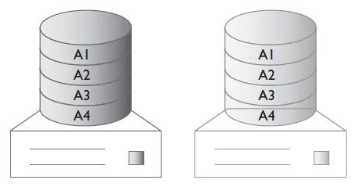
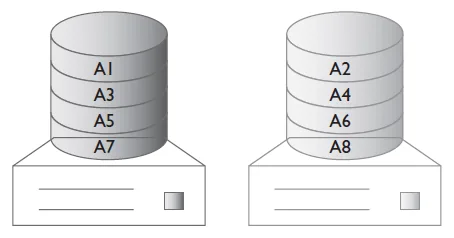
سطح 10 یک حالت سلسله مراتبی است که شامل کمربند سطح صفر در بالا و دو یا چند آیینه سطح یک در پایین است. در این سطح هم از مزیت کارآیی سطح صفر و هم از مزیت محافظت داده سطح یک استفاده میشود. اگر یک درایو در سطح 10 از کار بیفتد، آیینه پایین در حالت تنزل قرار میگیرد، در حالی که کمربند بالا به صورت عادی کار خود ادامه میدهد.
مشکل سطح 10 این است که میزان حافظه ذخیره سازی در دسترس شما نصف میشود زیرا همه چیز آیینه میشود. همچنین اجرای پیکربندی آن خیلی هزینه بر است. سطح 10 میتواند برای کاربردهایی که هم نیاز به کارآیی و هم نیاز به قابلیت اطمینان دارند و میزان فضای ذخیره سازی برای سازمان اهمیت کمتری دارد، مورد استفاده قرار بگیرد. برخی موارد کاربرد آن شامل سرورهای سازمانی، سرورهای پایگاه داده و برنامه کاربردی با کارآیی بالا میباشد. شکل 2‑3 مثالی از چگونگی پیکربندی دیسک ها در RAID 10 را نشان میدهد.
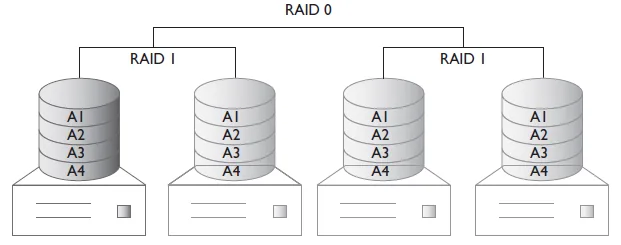
سطح 01 شامل آیینه سازی در بالا و دو یا چند کمربند داده در پایین است. این پیکربندی مشابه سطح 10 میباشد زیرا مزایای هر دو روش RAID 0 و RAID 1 را با هم دارد. از کار افتادن یک درایو در سطح 01 باعث میشود که یکی از کمربندها کلا از کار بیفتد، زیرا سطح صفر تحمل پذیری در برابر خطا ندارد. با این حال، آیینه سطح بالا به عملکرد عادی خود ادامه میدهد و وقفهای در دسترسی به داده رخ نخواهد داد. در صورت وقوع این خطا، دیسک حاوی خطا باید جایگزین شود و کمربند مجددا از ابتدا ساخته خواهد شد تا آیینه ایجاد شود. بنابراین زمان بازیابی طولانی تری نسبت به سطح 10 را شاهد خواهیم بود.
پیکربندی سطح 01 مشابه با سطح 10 برای کاربردهای نیازمندی به کارآیی و قابلیت اطمینان بالا که در آنها فضای ذخیره سازی اهمیت کمتری دارد مناسب خواهد بود. شکل 2‑4 مثالی از پیکربندی دیسکها در سطح 01 را نشان میدهد.
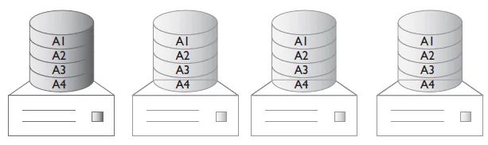
سطح 5 یکی از رایج ترین پیاده سازی های RAID است که توازن خوبی بین محافظت از داده، کارآیی و صرفه جویی در هزینه را تامین میکند. سطح 5 از کمربند در سطح بلاک برای بهبود کارآیی استفاده میکند و اطلاعات تعادل برای محافظت از داده بر روی دیسک ها توزیع میشود. اطلاعات تعادل در سطح 5 بر روی همه دیسک ها توزیع میشود و سیستم در صورت از کار افتادن یک دیسک نیز میتواند به عملکرد خود ادامه دهد. بنابراین وقتی یک دیسک از کار بیفتد، همچنان امکان خواندن و نوشتن داده وجود خواهد داشت. با جایگزین کردن دیسک خراب، سیستم در حالت بازیابی قرار میگیرد و با استفاده از مکانیزم تعادل، دادههای گم شده مربوط به دیسک قدیمی مجددا بر روی دیسک جدید تولید خواهد شد.
سطح 5 در نهایت به اندازه یک دیسک، که برای ذخیره سازی اطلاعات تعادل از آن استفاده میشود، هزینه اضافه در بر خواهد داشت. در این سطح حداقل سه دیسک لازم است و کارآیی و افزونگی قابل قبولی را با هزینه پایین فراهم میکند. سطح 5 ترکیب مناسبی از کارآیی، تحمل پذیری در برابر خطا، ظرفیت بالا و کارآیی در ذخیره سازی می باشد. این سطح برای پردازشهای تراکنشی نظیر پایگاهداده همچنین برای ذخیره سازی فایل های بزرگ که در آن داده باید بصورت پشت سر هم خوانده شود بسیار مناسب است. در شکل 2‑5 مثالی از نحوه پیکربندی دیسک ها در RAID 5 نشان داده شده است.
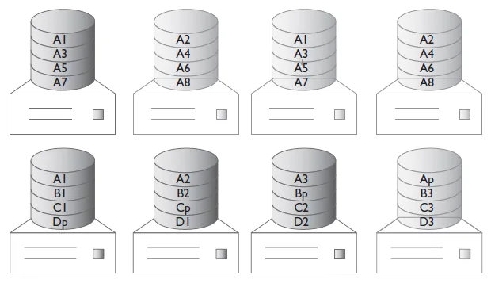
سطح 6 به عنوان توسعه ای برای سطح 5 محسوب میشود زیرا در آن همان کمربند داده و توزیع بلاک تعادل بر روی همه دیسکها استفاده میشود. تفاوت در این است که در سطح 6، یک بلاک تعادل دوم هم استفاده میشود. این کار باعث میشود که آرایه دیسکها تحمل پذیری خطا تا دو دیسک همزمان را نیز داشته باشد. سطح 6 کاهش کارآیی در عملیات خواندن ندارد اما بدلیل سربار محاسبه اطلاعات تعادل، کمی در عملیات نوشتن کاهش کارآیی وجود دارد.
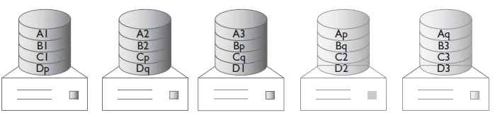
سطح 6 برای پشتیبانی از کاربردهایی که در آنها تحمل پذیری خطای بیشتری نسبت به سطح 5 نیاز است مناسب خواهد بود. این تحمل پذیری خطای بیشتر، باعث میشود که سطح 6 کاندیدای مناسبی برای استقرار در محیطهایی باشد که پشتیبانی IT سریع در دسترس نیست یا تامین قطعات اضافی در محل زمان زیادی لازم دارد. شکل 2‑6 مثالی از چگونگی پیکربندی دیسکها در سطح 6 را نشان میدهد.
برای درک بهتر مزایا و نیازمندیهای هر سطح RAID در جدول 2‑4 انواع پیکربندیهای رایج مقایسه شده است.
|
|---|
|
جدول 2‑4- مزایا و نیازمندی های هر سطح RAID
| سطح | شرح | حداقل دیسک | تحمل پذیری خطا | کارآیی ذخیره سازی |
|---|---|---|---|---|
| RAID 1 | آیینه سازی بلاک ها | 2 | 1 درایو | 50% |
| RAID 0 | ایجاد کمربند داده ها | 2 | ندارد | 100% |
| RAID 10 | آیینه سازی و کمربندی داده | 4 | 1 درایو به ازای هر گروه. حداکثر 2 درایو | 50% |
| RAID 01 | ایجاد کمربند داده و آیینه سازی | 4 | 1 درایو به ازای هر گروه. حداکثر 2 درایو | 50% |
| RAID 5 | ایجاد کمربند داده. توزیع اطلاعات تعدل | 3 | 1 درایو | یکی کمتر از مجموع درایوها |
| RAID 6 | ایجاد کمربندی داده به همراه توزیع دو نسخه از اطلاعات تعادل | 4 | 2 درایو | دو تا کمتر از مجموع درایوها |
پس از انتخاب نوع دیسک و پیکربندی آن، سازمان نیاز دارد که دادههایش را بر روی آن دیسکها ذخیره کند. سیستم فایل مسئول ذخیره سازی، بازیابی و به روزرسانی مجموعه فایلها بر روی یک دیسک است. سیستم فایل، نرم افزاری است که دستورات خواندن و نوشتن داده را بر روی دیسک از سیستم عامل دریافت میکند و مسئول نحوه نامگذاری و ذخیرهسازی فایلها بر روی دیسک است.
سیستم فایل مسئول مدیریت دسترسی به فایل و متادیتای60 هر فایل است و بر رابطه بین فایلها و دادهها نظارت میکند. همچنین مدیریت فضای در دسترس بر روی دیسک را نیز بر عهده دارد. سیستم فایل مسئول تامین اطمینان و سازماندهی بهینه دادههایی است که بر روی دیسک قرار گرفته است. دادهها معمولا در قالب فایل و پوشه سازماندهی میشود و بخشهای مختلف دیسک که توسط یک فایل خاص اشغال شده است و همچنین بخشهایی که هنوز آزاد است، در سیستم فایل نگهداری میشود.
در این بخش انواع مختلف سیستم فایل بحث میشود و هر کدام مزایا و موارد کاربرد متناسب با خود را دارد.
سیستم فایل یونیکس (UFS) سیستم فایل اصلی برای یونیکس و سیستم عامل های مبتنی بر یونیکس می باشد. UFS از یک ساختار سلسله مراتبی استفاده میکند که بالاترین سطح ریشه نامیده میشود ( / ) و بقیه پوشه ها از آن شروع میشوند. زیر پوشه ریشه، فایلها در داخل زیرپوشههایی سازماندهی شده و میتوانند هر نامی که کاربر تمایل دارد داشته باشند. همه فایلها در سیستم یونیکس بر اساس یک رابطه والد-فرزند به همدیگر مرتبط هستند.
شکل 2‑7 مثالی از ساختار سیستم فایل یونیکس را نشان میدهد. ریشه دارای سه زیرپوشه به نامهای bin، tmp و users می باشد. پوشه users نیز دارای دو زیرپوشه به نامهای دلخواه Nate و Scott میباشد.
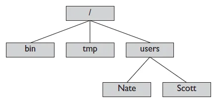
سیستم فایل توسعه یافته (EXT) اولین سیستم فایلی است که بصورت خاص برای لینوکس ایجاد شد. متادیتا و ساختار فایل در آن بر اساس سیستم فایل یونیکس است. EXT سیستم فایل پیش فرض در اکثر توزیعهای لینوکسی است. در حال حاضر تا نسخه 4 آن عرضه شده است که با عنوان EXT4 شناخته میشود. این نسخه در سال 2008 عرضه شد و از اندازههای بزرگتری برای فایلها و دیسک پشتیبانی میکند. EXT4 از نسخههای قبلی EXT3 و EXT2 نیز پشتیبانی میکند و امکان اتصال61 درایوهای EXT3 و EXT2 به یک درایو EXT4 وجود دارد.
جدول تخصیص فایل (FAT) سیستم فایلی قدیمی است که کارآیی خوبی دارد اما قابلیت اطمینان و مقیاسپذیری سیستمفایلهای جدیدتر را ندارد. سیستم فایل FAT هنوز در اکثر سیستمهای عامل پشتیبانی میشود، اما اخیرا با NTFS که سیستم فایل رایج در سیستمهای عامل ماکروسافت است در حال جایگزینی است.
سیستم فایل FAT در رسانههای قابل جابجایی مختلف نظیر فلاپی دیسکها، کارتهای حافظه SSD، کارهای حافظه فلش و دیگر تجهیزات قابل حمل استفاده میشود. سیستم فایل FAT فاید ویژگیهای پیشرفته NTFS نظیر رمزنگاری، VSS و فشرده سازی است.
سیستم فایل NTFS یک سیستم فایل اختصاصی است که توسط ماکروسافت برای پشتیبانی از سیستمهای عامل ویندوز توسعه داده شده است. این سیستم فایل از نسخه NT 3.1 به عنوان جایگزینی برای FAT ارایه شد و پس از آن در همه سیستم عاملهای ماکروسافت مورد استفاده قرار گرفت. NTFS ویژگیهای بیشتر نسبت به FAT دارد که برای مثال میتوان به کارآیی و قابلیت اطمینان بیشتر، فضاهای دیسک با اندازه بزرگتر و امنیت بالاتر اشاره کرد.
با شروع از نسخه 1.2، قابلیت فشرده سازی نیز به NTFS اضافه شد که برای فایلهایی که به ندرت در آنها نوشته میشود مناسب است. با این حال فشردهسازی میتواند منجر به کاهش کارآیی در زمان نیاز دسترسی به فایلهای فشرده شود؛ بنابراین، برای فایلهای اجرایی (exe) و نیز کتابخانههای مربوطه (dll) و یا فضاهای به اشتراک گذاشته شده در شبکه پیشنهاد نمیشود.
از نسخه 3.0 پشتیبانی از سرویس کپی سایه VSS62 نیز فراهم شد، که یک نسخه از تاریخچه فایل ها و پوشه ها بر روی فضای NTFS را نگهداری میکند. کپیهای سایه امکان بازگردانی یک فایل به وضعیتهای قبلی خود را بدون نیاز به نرمافزار پشتیبانگیری جداگانه فراهم میکند. سرویس VSS یک کپی از فایلهای قدیمی را در حین نوشته شدن فایل جدید ایجاد میکند، بنابراین کاربر به نسخههای قبلی همان فایل دسترسی خواهد داشت. برای استفاده از این سرویس باید یک دیسک جداگانه در نظر گرفته شود تا فایلها بر روی آن ذخیره شوند.
رمزنگاری سیستم فایل (EFS63) یک روش رمزنگاری است که برای هر فایل یا پوشهای که روی NTFS قرار دارد قابل استفاده است و کاربر آن را حس نمیکند. EFS با استفاده از یک کلید رمزنگاری (64FEK) یک فایل را فشرده میکند، که این کلید در ارتباط با کلید عمومی کاربری است که فایل را رمز کرده است. برای رمزگشایی و بازکردن فایل، EFS از کلید خصوصی کاربر استفاده میکند تا کلید عمومی که در سرآیند فایل قرار دارد را رمزگشایی کند. اگر کاربر دسترسی به کلید خود را از دست بدهد، همچنان یک عامل بازیابی میتواند به فایلها دسترسی داشته باشد. NTFS امکان فشرده سازی و رمز نگاری یک فایل را بصورت همزمان پشتیبانی نمیکند.
سهمیه بندی دیسک65 ویژگی دیگری است که به مدیر سیستم امکان محدود کردن فضای دیسک قابل استفاده را به ازای هر کاربر میدهد. مدیر سیستم میتواند یک سطح هشدار را نیز تنظیم کند که پیغام مناسب در صورت نیاز به کاربر نمایش داده شود.
سیستم فایل مجازی (VMFS) توسط شرکت VMWare ارایه شده است. این سیستم فایل در سرورهای ESX و vSphere به منظور ذخیرهسازی تصاویر ماشینهای مجازی و تصاویر لحظهای66 مورد استفاده قرار میگیرد. در این سیستم فایل امکان دسترسی همزمان چند سرور را برای خواندن و نوشتن وجود دارد، در حالی که فایلهای هر ماشین مجازی قفل نگه داشته میشوند. فضاهای VMFS میتوانند بصورت منطقی با اتصال چندین فضای VMFS به همدیگر افزایش داده شوند.
سیستم فایل Z (ZFS) که توسط شرکت سانمیکروسیستمز طراحی شده است، ترکیبی از یک سیستم فایل و LVM67 است. سیستم فایل ZFS از داده در مقابل خرابی محافظت کرده و ظرفیت ذخیره سازی بالایی را پشتیبانی میکند. همچنین امکان مدیریت Volume ها، تصاویر لحظهای، و بررسی پیوسته صحت فایلها68 را به همراه اصلاح خودکار فراهم میکند. تمرکز اصلی در ZFS ایجاد قابلیت صحت داده بود. به این صورت که بتواند از خراب شدن داده محافظت کند. در حال حاضر ZFS تنها سیستم فایل 128 بیتی است. در آن از یک روش ذخیره سازی استفاده میشود که امکان استفاده از فضا را تنها در زمانی که مورد نیاز است فراهم میکند.
در جدول 2‑5 انواع سیستم فایل و مزایای هر یک مقایسه شده است و حداکثر اندازه فایل و اندازه درایو در هر یک نیز مشخص شده است.
جدول 2‑5- مشخصه های سیستم فایل ها
| سیستم فایل | حداکثر اندازه فایل | حداکثر اندازه درایو | رمزنگاری | قابلیت تغییر اندازه درایو |
|---|---|---|---|---|
| UFS | 32 پتابایت | 1 یوتابایت | نه | آفلاین، اما نمیتواند کوچک شود |
| FAT32 | 4 گیگابایت | 2 ترابایت | نه | آفلاین |
| NTFS | 16 ترابایت | 256 ترابایت | بله | آفلاین |
| VMFS | 2 ترابایت | 64 ترابایت | نه | آفلاین، اما نمیتواند کوچک شود |
| ZFS | 16 اگزابایت | 16 اگزابایت | بله | آفلاین، اما نمیتواند کوچک شود |
|
|---|
|
شناخت این موضوع که فناوریهای مختلف ذخیرهسازی، چگونه ابر را تحت تاثیر قرار میدهند بسیار مهم است. در بخش انواع مختلف درایوهای دیسک فیزیکی و چگونگی اتصال آنها به سیستم و نیز به همدیگر مورد بررسی قرار گرفت. همچنین مفهوم ردهبندی ذخیرهسازی و فناوری های مختلف RAID پوشش داده شد. انتخاب سطح RAID مناسب در فعالیتهای روزمره مدیران IT بسیار مهم است. در انتها نیز مرروری بر انواع سیستم های فایل و نقش انتخاب صحیح این سیستمها در بدست آوردن مقیاسپذیری و قابلیت اطمینان صورت گرفت.
پاسخ صحیح: ب) SSD
SSD از حافظه فلش استفاده میکند و هیچ جزء متحرکی ندارد. HDD و نوار اجزای مکانیکی دارند و SCSI یک واسط اتصال است، نه دستگاه ذخیرهسازی.
پاسخ صحیح: الف) RAID 0
RAID 0 فقط نواربندی (Striping) انجام میدهد؛ کارآیی بالایی دارد اما با خرابی یک دیسک همه دادهها از دست میرود.
پاسخ صحیح: د) RAID 6
RAID 6 دو بلوک توازن مستقل دارد و خرابی دو دیسک را تحمل میکند؛ RAID 5 فقط خرابی یک دیسک را تحمل میکند.
پاسخ صحیح: ب) ردههای بالاتر و ارزانتر مانند دیسکهای کمسرعت یا نوار
دادههای کماستفاده در ردههای کمهزینهتر قرار میگیرند تا ظرفیت گران رده ۱ برای دادههای حیاتی باقی بماند.
پاسخ صحیح: ج) VMFS
VMFS سیستم فایل خوشهای VMware است که به چند میزبان اجازه میدهد همزمان به یک فضای ذخیرهسازی مشترک دسترسی داشته باشند.
Rotational Media↩︎
Removable↩︎
Hard disk↩︎
Plotter↩︎
Ferrous oxide↩︎
Random-access↩︎
Sequential-access↩︎
Solid state drive↩︎
Flash memory↩︎
Advanced technology attachment↩︎
Integrated drive electronics↩︎
Serial ATA↩︎
Native hot swapping↩︎
Small computer system interface↩︎
Serial attached SCSI↩︎
Storage area network↩︎
Fragmentation↩︎
Wear↩︎
plug and play↩︎
Tiering↩︎
Restoration↩︎
Hierarchical storage management (HSM)↩︎
Compliance↩︎
Mirrored↩︎
Parity↩︎
Metadata: the data about the data↩︎
Mount↩︎
Volume shadow copy service↩︎
Encrypting sytem file↩︎
File encryption key↩︎
Disk quotas↩︎
Snapshot↩︎
Logical volume manager↩︎
Continous integrity checking↩︎
ذخیرهسازی اساس یک زیرساخت موفق است. روشهای سنتی ذخیرهسازی داده با ظهور سیستمهای ذخیرهسازی ابری در حال تعییر هستند. سرورها و سیستمهای ذخیرهسازی که زمانی بصورت جداگانه فروخته میشدند اکنون در محیط ابری با هم ترکیب شدهاند، و اغلب به آنها Storage as a Service نیز گفته میشود. حال سازمانها میتوانند سیستمهای ذخیره سازی را با اتصال مستقیم به سرورهای خود خریداری کنند و نیازی به خرید شبکه ذخیرهسازی جداگانه نخواهد بود.
سه معماری اصلی برای اتصال فضای ذخیرهسازی به سرورها وجود دارد. تفاوت آنها در این است که دیسکها کجا قرار دارند، از چه مسیری به سرور میرسند و سرور داده را به شکل «بلوک» میبیند یا به شکل «فایل».
در ذخیرهسازی متصل مستقیم (Direct Attached Storage)، دیسکها مستقیماً و بدون واسطه شبکه به یک سرور متصلاند؛ چه داخل خود سرور باشند و چه در یک محفظه بیرونی که با SAS یا SATA وصل شده است. DAS ساده، ارزان و کمتأخیر است، اما فضای آن فقط در اختیار همان سرور قرار دارد و نمیتوان آن را بهسادگی بین چند میزبان به اشتراک گذاشت. به همین دلیل در محیطهای مجازیسازی شده که ماشینهای مجازی باید بین میزبانها جابهجا شوند، DAS بهتنهایی کافی نیست.
ذخیرهسازی متصل به شبکه (Network Attached Storage) یک دستگاه اختصاصی است که فضای خود را در سطح فایل و از طریق شبکه اترنت معمولی در اختیار کاربران و سرورها قرار میدهد. سیستم فایل روی خود دستگاه NAS مدیریت میشود و کلاینتها با پروتکلهایی مانند NFS یا SMB/CIFS به پوشههای اشتراکی دسترسی دارند. NAS برای اشتراک فایل، پوشههای کاربران و آرشیو مناسب است و راهاندازی آن ساده است.
شبکه ناحیه ذخیرهسازی (Storage Area Network) یک شبکه اختصاصی و پرسرعت است که آرایههای ذخیرهسازی را به سرورها متصل میکند و فضای ذخیرهسازی را در سطح بلوک ارائه میدهد. از دید سیستمعامل، یک دیسک SAN مانند یک دیسک محلی است و سیستم فایل روی خود سرور ساخته میشود. SAN کارآیی بالا، تأخیر کم و امکان اشتراک یک فضا بین چند میزبان (مثلاً برای خوشههای مجازیسازی) را فراهم میکند، اما پیچیدهتر و گرانتر از NAS است.
نکته آزمون: تفاوت کلیدی NAS و SAN در سطح دسترسی است: NAS دسترسی فایلی و SAN دسترسی بلوکی فراهم میکند. DAS نیز بلوکی است اما از طریق شبکه به اشتراک گذاشته نمیشود.
| ویژگی | DAS | NAS | SAN |
|---|---|---|---|
| سطح دسترسی | بلوکی | فایلی | بلوکی |
| رسانه اتصال | SAS / SATA | اترنت (TCP/IP) | فیبر نوری یا اترنت |
| اشتراک بین میزبانها | ندارد | دارد | دارد |
| پیچیدگی و هزینه | کم | متوسط | زیاد |
کانال فیبر (Fibre Channel) پروتکل اصلی SANهای سنتی است و روی یک شبکه اختصاصی با سوئیچهای FC کار میکند. هر پورت با یک شناسه جهانی ۶۴ بیتی به نام WWN یا WWPN شناخته میشود. سرورها برای اتصال به این شبکه به کارت HBA نیاز دارند. سرعتهای رایج FC از ۸ تا ۳۲ گیگابیت بر ثانیه و بالاتر است و این پروتکل بهدلیل تأخیر کم و قابلیت اطمینان بالا برای پایگاههای داده حساس محبوب است.
FCoE فریمهای کانال فیبر را درون فریمهای اترنت قرار میدهد تا ترافیک ذخیرهسازی و ترافیک شبکه داده روی یک زیرساخت اترنت مشترک منتقل شوند. این کار تعداد کارتها و کابلها را کم میکند. FCoE به اترنت بدون اتلاف (Data Center Bridging) نیاز دارد و روی IP مسیریابی نمیشود؛ یعنی در لایه ۲ باقی میماند.
پروتکل iSCSI فرمانهای SCSI را درون بستههای TCP/IP قرار میدهد و امکان ساخت SAN را روی شبکه اترنت معمولی فراهم میکند. در iSCSI، سرور نقش آغازگر (Initiator) و آرایه ذخیرهسازی نقش هدف (Target) را دارد. iSCSI ارزانتر از FC است و قابل مسیریابی است، اما برای کارآیی مناسب بهتر است ترافیک آن روی شبکه یا VLAN جداگانه با فریمهای بزرگ (Jumbo Frame) منتقل شود. احراز هویت در iSCSI معمولاً با CHAP انجام میشود.
پروتکلهای NFS (رایج در لینوکس و یونیکس) و SMB/CIFS (رایج در ویندوز) پروتکلهای دسترسی فایلی هستند و در NAS استفاده میشوند. بسیاری از بسترهای مجازیسازی امکان قرار دادن دیسک ماشینهای مجازی روی یک اشتراک NFS را نیز دارند.
همانطور که در فصل اول در بخش ذخیرهسازی اشیاء گفته شد، فضای ذخیرهسازی شیء معمولاً با رابطهای برنامهنویسی مبتنی بر HTTP/REST در دسترس قرار میگیرد. این روش برای دادههای حجیم و بدون ساختار مانند تصاویر، ویدئو و نسخههای پشتیبان در ابرهای عمومی رایجترین روش است.
نکته آزمون: به یاد داشته باشید که iSCSI و FCoE هر دو از اترنت استفاده میکنند، اما فقط iSCSI روی IP کار میکند و قابل مسیریابی است.
تدارک (Provisioning) به معنای تخصیص فضای ذخیرهسازی به سرورها و ماشینهای مجازی است. در ابر، تدارک باید سریع، خودکار و قابل اندازهگیری باشد.
در تدارک ضخیم (Thick Provisioning)، کل فضای درخواستی در لحظه ایجاد دیسک از آرایه کسر میشود؛ حتی اگر هنوز دادهای روی آن نوشته نشده باشد. این روش کارآیی قابل پیشبینی دارد اما فضای زیادی را بلااستفاده نگه میدارد. در تدارک نازک (Thin Provisioning)، فضا به تدریج و همزمان با نوشتن داده تخصیص مییابد. تدارک نازک بهرهوری را بالا میبرد و امکان «فروش بیش از ظرفیت» (Overcommitment) را فراهم میکند، اما باید مصرف واقعی بهدقت پایش شود تا آرایه ناگهان پر نشود.
فضای یک آرایه SAN به بخشهایی به نام LUN (شماره واحد منطقی) تقسیم و به سرورها ارائه میشود. برای اینکه هر سرور فقط LUNهای مربوط به خود را ببیند، دو سازوکار استفاده میشود:
ترکیب این دو، هم امنیت و هم جلوگیری از خرابی ناخواسته داده را تضمین میکند؛ زیرا اگر دو سرور غیرخوشهای همزمان روی یک LUN بنویسند، سیستم فایل آسیب میبیند.
در چندمسیری، سرور از چند مسیر فیزیکی مستقل (چند HBA، چند سوئیچ و چند کنترلر) به آرایه ذخیرهسازی متصل است. نرمافزار چندمسیری در صورت قطع یک مسیر، ترافیک را به مسیر دیگر منتقل میکند و در حالت عادی میتواند بار را بین مسیرها توزیع کند. چندمسیری یکی از پایههای دسترسپذیری بالا در SAN است.
حذف تکرار (Deduplication) بلوکهای تکراری را فقط یک بار ذخیره میکند و به جای نسخههای بعدی اشارهگر نگه میدارد؛ این روش در محیطهای پر از ماشین مجازی مشابه یا نسخههای پشتیبان بسیار مؤثر است. فشردهسازی حجم هر بلوک را با الگوریتمهای فشردهسازی کاهش میدهد. هر دو روش در ازای مصرف پردازنده، ظرفیت مؤثر را افزایش میدهند.
سهمیه (Quota) سقف فضای قابل استفاده هر کاربر، پروژه یا مستأجر را تعیین میکند و از مصرف کنترلنشده جلوگیری میکند. سیاستهای نگهداری و چرخه عمر نیز تعیین میکنند دادهها چه مدت نگهداری شوند و چه زمانی به رده ارزانتر منتقل یا حذف شوند؛ این مفهوم با ردهبندی ذخیرهسازی در فصل دوم ارتباط مستقیم دارد.
در این فصل سه معماری DAS، NAS و SAN و تفاوت دسترسی بلوکی و فایلی بررسی شد. سپس پروتکلهای کانال فیبر، FCoE، iSCSI، NFS و SMB و دسترسی شیءگرا معرفی شدند. در پایان، مفاهیم تدارک فضای ذخیرهسازی شامل تدارک ضخیم و نازک، LUN، ناحیهبندی، پوشاندن LUN، چندمسیری، حذف تکرار، فشردهسازی و سهمیه توضیح داده شد.
پاسخ صحیح: ب) NAS
NAS دستگاهی است که سیستم فایل را خودش مدیریت میکند و پوشهها را با NFS یا SMB به اشتراک میگذارد. SAN و DAS دسترسی بلوکی دارند و FCoE یک پروتکل انتقال بلوکی است.
پاسخ صحیح: ج) iSCSI
iSCSI فرمانهای SCSI را درون بستههای TCP/IP قرار میدهد. FCoE روی اترنت لایه ۲ کار میکند و مسیریابی نمیشود.
پاسخ صحیح: الف) ناحیهبندی (Zoning)
ناحیهبندی روی سوئیچ انجام میشود، در حالی که پوشاندن LUN روی آرایه ذخیرهسازی پیکربندی میشود.
پاسخ صحیح: ب) تدارک نازک
در تدارک نازک فضا همزمان با نوشتن داده تخصیص مییابد. تدارک ضخیم کل فضا را از ابتدا رزرو میکند.
پاسخ صحیح: ج) تحمل خرابی مسیر و توزیع بار بین مسیرها
چندمسیری با چند مسیر مستقل، در صورت قطع یک مسیر دسترسی را حفظ میکند و میتواند بار را نیز توزیع کند.
هیچ سرویس ابری بدون شبکه قابل استفاده نیست. کاربر از طریق شبکه به سرویس میرسد، ماشینهای مجازی از طریق شبکه با هم و با فضای ذخیرهسازی ارتباط دارند و حتی مدیریت ابر نیز از راه دور انجام میشود. در این فصل انواع شبکه، روشهای بهینهسازی کارآیی شبکه، مفاهیم مسیریابی و سوئیچینگ و پورتها و پروتکلهای رایج بررسی میشوند.
اینترانت شبکه خصوصی یک سازمان است که فقط کارکنان و سیستمهای مجاز به آن دسترسی دارند. سرویسهایی مانند پرتال داخلی، سامانههای اداری و ابر خصوصی معمولاً روی اینترانت ارائه میشوند و از اینترنت با دیوار آتش جدا هستند.
اینترنت شبکهای عمومی و جهانی است که از اتصال میلیونها شبکه مستقل تشکیل شده است. ابرهای عمومی خدمات خود را عمدتاً از طریق اینترنت ارائه میکنند، بنابراین کیفیت، امنیت و هزینه ارتباط اینترنتی مستقیماً بر تجربه کاربر اثر میگذارد.
اکسترانت بخشی از شبکه خصوصی سازمان است که بهصورت کنترلشده در اختیار شرکای بیرونی مانند تأمینکنندگان یا مشتریان عمده قرار میگیرد. دسترسی به اکسترانت معمولاً از طریق VPN یا پرتالهای امن با احراز هویت قوی انجام میشود.
نکته آزمون: اینترانت فقط برای کاربران داخلی، اکسترانت برای شرکای مشخص بیرونی و اینترنت برای عموم است.
پهنای باند حداکثر حجم دادهای است که در واحد زمان از یک اتصال عبور میکند و تأخیر (Latency) مدت زمانی است که یک بسته از مبدأ به مقصد میرسد. برای برنامههای تعاملی مانند پایگاه داده یا ویدئوکنفرانس، تأخیر و نوسان آن (Jitter) اغلب از پهنای باند مهمترند. فاصله جغرافیایی تا مرکز داده ابری یکی از عوامل اصلی تأخیر است؛ به همین دلیل ارائهدهندگان ابر مناطق (Region) متعددی در نقاط مختلف جهان دارند.
در مراکز داده سنتی از معماری سهلایه (دسترسی، توزیع و هسته) استفاده میشد. در مراکز داده ابری امروزی معماری Spine-Leaf رایج است که در آن هر سوئیچ Leaf به همه سوئیچهای Spine متصل است. این معماری تعداد پرشها را بین هر دو سرور ثابت نگه میدارد و برای ترافیک شرق-غرب (بین سرورها) که در محیطهای مجازی بسیار زیاد است مناسبتر است.
متعادلکننده بار (Load Balancer) درخواستهای ورودی را بین چند سرور توزیع میکند تا هیچ سروری بیش از حد بارگذاری نشود و در صورت خرابی یک سرور، سرویس ادامه پیدا کند. الگوریتمهای رایج شامل نوبتی (Round Robin)، کمترین اتصال و وزندار هستند. متعادلکنندهها با بررسی سلامت (Health Check) سرورهای ازکارافتاده را از چرخه خارج میکنند.
ذخیره موقت (کش) محتوای پرتکرار نزدیک به کاربر، حجم ترافیک و تأخیر را کاهش میدهد. شبکه تحویل محتوا (CDN) محتوای ایستا را در سرورهای لبه در نقاط مختلف جهان کش میکند. فشردهسازی دادهها پیش از ارسال نیز مصرف پهنای باند را کم میکند، بهویژه در ارتباطات WAN بین سایتها.
هر میزبان در شبکه یک آدرس IP دارد. با زیرشبکهسازی (Subnetting) یک فضای آدرس بزرگ به بخشهای کوچکتر تقسیم میشود تا ترافیک پخشی محدود شود و سیاستهای امنیتی برای هر بخش جداگانه اعمال شود. نماد CIDR مانند 10.0.1.0/24 نشان میدهد ۲۴ بیت اول آدرس، بخش شبکه است. در ابرهای عمومی، مشتری در قالب یک شبکه مجازی خصوصی (VPC یا VNet) زیرشبکههای خود را تعریف میکند. IPv6 نیز با فضای آدرس بسیار بزرگ، بهتدریج در حال گسترش است.
ترجمه آدرس شبکه (NAT) آدرسهای خصوصی داخلی را به آدرس عمومی تبدیل میکند تا میزبانهای داخلی بتوانند با اینترنت ارتباط داشته باشند. در ترجمه آدرس پورت (PAT) چندین میزبان داخلی از یک آدرس عمومی مشترک استفاده میکنند و با شماره پورت از هم تفکیک میشوند. NAT علاوه بر صرفهجویی در آدرسهای عمومی، ساختار داخلی شبکه را نیز از دید بیرونی پنهان میکند.
VLAN یک شبکه فیزیکی را به چند حوزه پخشی منطقی جدا تقسیم میکند؛ مثلاً ترافیک مدیریت، ذخیرهسازی و ماشینهای مجازی را از هم جدا میکند. شماره VLAN با برچسبگذاری 802.1Q در فریمها مشخص میشود و حداکثر ۴۰۹۴ VLAN قابل تعریف است. این محدودیت برای ابرهای چندمستأجری بزرگ کافی نیست؛ بنابراین VXLAN معرفی شد که فریمهای لایه ۲ را درون بستههای UDP قرار میدهد و با شناسه ۲۴ بیتی حدود ۱۶ میلیون شبکه منطقی را پشتیبانی میکند.
مسیریابها با استفاده از جدول مسیریابی تصمیم میگیرند هر بسته را به کدام مسیر بفرستند. مسیرها میتوانند ایستا (بهصورت دستی) یا پویا (با پروتکلهایی مانند OSPF و BGP) تعریف شوند. در ابر، جداول مسیریابی مجازی مشخص میکنند ترافیک یک زیرشبکه به اینترنت، به VPN یا به شبکه مجازی دیگر برود.
نکته آزمون: VLAN جداسازی لایه ۲ را فراهم میکند و زیرشبکه جداسازی لایه ۳؛ برای عبور ترافیک بین VLANها به مسیریاب یا سوئیچ لایه ۳ نیاز است.
هر سرویس شبکه روی یک پورت مشخص گوش میدهد. شناخت پورتهای رایج برای پیکربندی دیوار آتش، گروههای امنیتی و عیبیابی ضروری است.
| پروتکل | کاربرد | پورت پیشفرض |
|---|---|---|
| HTTP | وب بدون رمزنگاری | TCP 80 |
| HTTPS | وب امن با TLS | TCP 443 |
| FTP | انتقال فایل | TCP 20 و 21 |
| SFTP | انتقال فایل امن روی SSH | TCP 22 |
| FTPS | FTP روی TLS | TCP 989 و 990 |
| SSH | مدیریت امن از راه دور | TCP 22 |
| RDP | میز کار از راه دور ویندوز | TCP 3389 |
| DNS | تبدیل نام به آدرس | UDP/TCP 53 |
| DHCP | تخصیص خودکار آدرس IP | UDP 67 و 68 |
| SMTP | ارسال رایانامه | TCP 25 |
| NTP | همگامسازی زمان | UDP 123 |
| SNMP | پایش تجهیزات شبکه | UDP 161 و 162 |
DNS نامهای قابل خواندن مانند www.example.com را به آدرس IP تبدیل میکند و در ابر برای کشف سرویسها، توزیع جغرافیایی بار و جابهجایی در زمان خرابی نیز استفاده میشود. DHCP آدرس IP، دروازه پیشفرض و سرور DNS را بهصورت خودکار به ماشینهای مجازی تازه ایجادشده اختصاص میدهد؛ این کار برای ایجاد سریع و خودکار منابع در ابر ضروری است.
در این فصل شبکههای اینترانت، اینترنت و اکسترانت مقایسه شدند. سپس عوامل کارآیی شبکه شامل پهنای باند، تأخیر، توپولوژی، توزیع بار، کش و CDN بررسی شد. در بخش مسیریابی و سوئیچینگ مفاهیم زیرشبکه، NAT و PAT، VLAN و VXLAN و جدول مسیریابی توضیح داده شد و در پایان پورتها و پروتکلهای پرکاربرد معرفی شدند.
پاسخ صحیح: ب) اکسترانت
اکسترانت بخشی از شبکه خصوصی است که بهصورت کنترلشده در اختیار شرکای بیرونی قرار میگیرد.
پاسخ صحیح: ج) PAT
در PAT چند میزبان از یک آدرس عمومی استفاده میکنند و با شماره پورت از هم تفکیک میشوند.
پاسخ صحیح: الف) VXLAN
شناسه ۱۲ بیتی VLAN حداکثر ۴۰۹۴ شبکه را پشتیبانی میکند، اما شناسه ۲۴ بیتی VXLAN حدود ۱۶ میلیون شبکه را ممکن میسازد.
پاسخ صحیح: ب) TCP 22
SSH روی پورت ۲۲ کار میکند. پورت ۲۳ مربوط به Telnet ناامن، ۳۳۸۹ مربوط به RDP و ۱۶۱ مربوط به SNMP است.
پاسخ صحیح: ب) استفاده از شبکه تحویل محتوا (CDN)
CDN محتوای ایستا را در سرورهای لبه نزدیک به کاربران کش میکند و تأخیر ناشی از فاصله جغرافیایی را کاهش میدهد.
مجازیسازی فناوری پایه رایانش ابری است. بدون مجازیسازی، امکان تجمیع منابع، تخصیص سریع و چندمستأجری که در فصل اول توضیح داده شد عملاً وجود نداشت. در این فصل اجزای اصلی یک محیط مجازی، یعنی هایپروایزر، میزبان فیزیکی و ماشین مجازی، و همچنین کانتینرها بهعنوان شکل سبکتر مجازیسازی بررسی میشوند.
هایپروایزر (Hypervisor) لایه نرمافزاری است که منابع سختافزاری یک رایانه فیزیکی، یعنی پردازنده، حافظه، دیسک و شبکه، را بین چند ماشین مجازی تقسیم میکند و آنها را از یکدیگر جدا نگه میدارد.
هایپروایزر نوع ۱ یا بدون سیستمعامل میزبان (Bare-metal) مستقیماً روی سختافزار نصب میشود و خودش نقش سیستمعامل را دارد. VMware ESXi، Microsoft Hyper-V، KVM و Xen نمونههای رایج هستند. این نوع بهدلیل سربار کم، کارآیی بالا و سطح حمله کوچکتر، انتخاب اصلی مراکز داده و ارائهدهندگان ابر است.
هایپروایزر نوع ۲ یا میزبانیشده (Hosted) بهصورت یک برنامه روی یک سیستمعامل معمولی اجرا میشود؛ مانند Oracle VirtualBox و VMware Workstation. این نوع برای آزمایش، آموزش و توسعه روی رایانه شخصی مناسب است، اما بهدلیل وجود لایه سیستمعامل میزبان، کارآیی و امنیت کمتری نسبت به نوع ۱ دارد.
نکته آزمون: هایپروایزر نوع ۱ مستقیماً روی سختافزار اجرا میشود و برای محیطهای تولیدی و ابری استفاده میشود؛ نوع ۲ روی یک سیستمعامل میزبان اجرا میشود.
هایپروایزرها از نظر مجوز نیز به دو دسته تجاری (مانند ESXi) و متنباز (مانند KVM و Xen) تقسیم میشوند. محصولات تجاری معمولاً ابزارهای مدیریتی یکپارچه و پشتیبانی رسمی دارند؛ محصولات متنباز هزینه مجوز ندارند و پایه بسیاری از ابرهای عمومی و پلتفرمهایی مانند OpenStack هستند. انتخاب بین این دو به بودجه، مهارت تیم و نیاز به پشتیبانی بستگی دارد.
میزبان (Host) رایانه فیزیکی است که هایپروایزر روی آن نصب میشود. ظرفیت و پیکربندی میزبان تعیین میکند چه تعداد و چه نوع ماشین مجازی میتواند اجرا کند.
پردازندههای امروزی دستورالعملهای ویژه مجازیسازی دارند: Intel VT-x و AMD-V. علاوه بر این، فناوریهای ترجمه آدرس سطح دوم (Intel EPT و AMD RVI) کارآیی مدیریت حافظه ماشینهای مجازی را بهشدت بهبود میدهند. این قابلیتها معمولاً باید در تنظیمات BIOS یا UEFI فعال شوند؛ بسیاری از هایپروایزرهای نوع ۱ بدون آنها نصب نمیشوند.
در طراحی میزبان باید به این موارد توجه کرد:
در بیشتخصیص (Overcommitment) مجموع منابعی که به ماشینهای مجازی اختصاص داده میشود از منابع فیزیکی میزبان بیشتر است؛ با این فرض که همه ماشینها همزمان از تمام سهم خود استفاده نمیکنند. نسبت vCPU به هسته فیزیکی مثلاً ۴ به ۱ در بسیاری از محیطها قابل قبول است، اما بیشتخصیص حافظه باید با احتیاط بیشتری انجام شود؛ زیرا کمبود حافظه به استفاده از فضای مبادله (Swap) و افت شدید کارآیی منجر میشود.
ماشین مجازی (VM) یک رایانه کامل نرمافزاری است که سیستمعامل مهمان (Guest) و برنامهها روی آن اجرا میشوند. هر ماشین مجازی مجموعهای از منابع مجازی دارد.
vCPU سهمی از زمان پردازنده فیزیکی است که هایپروایزر به ماشین مجازی میدهد. دادن vCPU بیش از نیاز به یک ماشین مجازی میتواند بهدلیل هماهنگی زمانبندی، کارآیی را کاهش دهد. برای حافظه، هایپروایزرها از روشهایی مانند حافظه پویا، بادکنک حافظه (Ballooning) که حافظه بلااستفاده مهمان را پس میگیرد، و اشتراک صفحات یکسان استفاده میکنند.
دیسک ماشین مجازی معمولاً یک فایل روی فضای ذخیرهسازی میزبان است؛ مانند VMDK در VMware، VHDX در Hyper-V و QCOW2 در KVM. این دیسکها میتوانند بهصورت ضخیم یا نازک تدارک شوند (فصل سوم). در برخی موارد، ماشین مجازی مستقیماً به یک LUN فیزیکی دسترسی دارد که به آن نگاشت مستقیم دیسک (Raw Device Mapping) گفته میشود.
هر ماشین مجازی یک یا چند کارت شبکه مجازی (vNIC) دارد که به یک سوئیچ مجازی درون هایپروایزر متصل است. سوئیچ مجازی ترافیک بین ماشینهای مجازی همان میزبان را مستقیماً جابهجا میکند و از طریق کارتهای فیزیکی (Uplink) به شبکه بیرونی متصل میشود. سوئیچهای مجازی از VLAN، محدودسازی ترافیک و سیاستهای امنیتی پشتیبانی میکنند. برای کارآیی بسیار بالا، فناوری SR-IOV امکان میدهد یک کارت فیزیکی مستقیماً به چند ماشین مجازی اختصاص یابد.
نرمافزارهایی مانند VMware Tools یا Hyper-V Integration Services درون سیستمعامل مهمان نصب میشوند و درایورهای بهینه، همگامسازی زمان، خاموش کردن امن و پشتیبانی از بادکنک حافظه را فراهم میکنند. نبود این ابزارها یکی از علل رایج کارآیی ضعیف ماشینهای مجازی است.
کانتینر (Container) نوعی مجازیسازی در سطح سیستمعامل است. برخلاف ماشین مجازی که سیستمعامل کامل خود را دارد، کانتینرها هسته سیستمعامل میزبان را به اشتراک میگذارند و فقط برنامه و وابستگیهای آن را بستهبندی میکنند. در نتیجه کانتینرها بسیار سبکاند، در چند ثانیه راهاندازی میشوند و روی یک میزبان تعداد بسیار بیشتری از آنها اجرا میشود.
| ویژگی | ماشین مجازی | کانتینر |
|---|---|---|
| سطح جداسازی | سختافزار مجازی و هسته جدا | هسته مشترک سیستمعامل |
| اندازه | چند گیگابایت | چند ده مگابایت |
| زمان راهاندازی | چند ده ثانیه تا چند دقیقه | چند ثانیه |
| کاربرد مناسب | سیستمعاملهای مختلف، جداسازی قوی | ریزسرویسها و استقرار سریع |
ابزارهایی مانند Docker برای ساخت و اجرای کانتینرها و Kubernetes برای هماهنگسازی (Orchestration) تعداد زیادی کانتینر روی خوشهای از میزبانها استفاده میشوند. در عمل کانتینرها اغلب درون ماشینهای مجازی اجرا میشوند تا مزایای هر دو فناوری با هم به دست آید.
در این فصل هایپروایزرهای نوع ۱ و ۲ و تجاری و متنباز مقایسه شدند. سپس الزامات میزبان مجازیسازی شامل پشتیبانی سختافزاری، پیکربندی پردازنده، حافظه، شبکه و سفتافزار و مفهوم بیشتخصیص بررسی شد. منابع ماشین مجازی شامل vCPU، حافظه، دیسک مجازی، کارت و سوئیچ مجازی و ابزارهای مهمان توضیح داده شد و در پایان کانتینرها با ماشینهای مجازی مقایسه شدند.
پاسخ صحیح: ج) Oracle VirtualBox
VirtualBox بهصورت برنامه روی یک سیستمعامل میزبان اجرا میشود. سه گزینه دیگر هایپروایزر نوع ۱ هستند.
پاسخ صحیح: ب) فعال کردن VT-x یا AMD-V در BIOS/UEFI
هایپروایزرهای نوع ۱ به قابلیتهای سختافزاری مجازیسازی نیاز دارند که معمولاً باید در BIOS یا UEFI فعال شوند.
پاسخ صحیح: الف) بادکنک حافظه
بادکنک حافظه از طریق درایوری در سیستمعامل مهمان حافظه آزاد را به هایپروایزر بازمیگرداند.
پاسخ صحیح: ب) کانتینر هسته سیستمعامل میزبان را به اشتراک میگذارد
کانتینرها سیستمعامل کامل ندارند و از هسته میزبان استفاده میکنند؛ به همین دلیل سبکتر اما با جداسازی ضعیفتری نسبت به ماشین مجازی هستند.
پاسخ صحیح: الف) بیشتخصیص
نسبت ۴ به ۱ vCPU به هسته فیزیکی نمونهای از بیشتخصیص پردازنده است که با پایش مناسب در بسیاری از محیطها قابل قبول است.
در فصل قبل اجزای مجازیسازی معرفی شدند. در این فصل بررسی میشود که مجازیسازی چگونه ویژگیهای اصلی ابر، یعنی اشتراک منابع، کشسانی و جداسازی، را ممکن میکند و بارهای کاری چگونه بین محیطهای فیزیکی، مجازی و ابری جابهجا میشوند.
مجازیسازی چند بار کاری را روی یک سرور فیزیکی اجرا میکند. در مراکز داده سنتی، بسیاری از سرورها فقط ۱۰ تا ۱۵ درصد ظرفیت خود را استفاده میکردند؛ با مجازیسازی این بهرهوری چند برابر میشود. تجمیع سرورها (Consolidation) هزینه سختافزار، برق، سرمایش و فضای مرکز داده را کاهش میدهد.
از آنجا که ماشین مجازی یک موجودیت نرمافزاری است، میتوان در چند دقیقه ماشین جدیدی ساخت یا منابع یک ماشین موجود را افزایش داد. این ویژگی پایه کشسانی است که در فصل اول توضیح داده شد. افزایش منابع یک ماشین را مقیاسپذیری عمودی (Scale Up) و افزودن ماشینهای بیشتر را مقیاسپذیری افقی (Scale Out) میگویند. در ابر، مقیاسپذیری افقی خودکار بر اساس معیارهایی مانند مصرف پردازنده یا تعداد درخواستها رایج است.
هر ماشین مجازی سیستمعامل و فضای حافظه جداگانه دارد؛ بنابراین خرابی یا آلودگی یک ماشین بهطور مستقیم به ماشینهای دیگر سرایت نمیکند. با سوئیچهای مجازی، VLAN و گروههای امنیتی، ترافیک شبکه مستأجران مختلف نیز از هم جدا میشود. این جداسازی برای چندمستأجری امن ضروری است.
ماشین مجازی به سختافزار خاصی وابسته نیست و میتواند بین میزبانهای مختلف جابهجا شود. این ویژگی نگهداری سختافزار بدون توقف سرویس، بازیابی از فاجعه و مهاجرت به ابر را ساده میکند.
قالب (Template) یک ماشین مجازی آماده و استاندارد است که سیستمعامل، وصلهها و تنظیمات پایه را دارد و برای ساخت ماشینهای جدید کپی میشود. در ابرهای عمومی معادل آن تصویر (Image) است؛ مانند AMI در AWS. استفاده از قالب، ایجاد ماشین را سریع و پیکربندی را یکنواخت میکند. پیش از تبدیل یک ماشین به قالب باید شناسههای یکتای آن پاک شوند (مثلاً با Sysprep در ویندوز) تا ماشینهای ساختهشده تداخل نداشته باشند.
شبیهسازی (Clone) یک کپی کامل از یک ماشین مجازی موجود است. تصویر لحظهای (Snapshot) وضعیت دیسک و در صورت نیاز حافظه یک ماشین را در یک لحظه ثبت میکند تا در صورت بروز مشکل، مثلاً پس از یک بهروزرسانی ناموفق، بتوان به آن بازگشت.
نکته آزمون: تصویر لحظهای جایگزین نسخه پشتیبان نیست. تصاویر لحظهای روی همان فضای ذخیرهسازی ماشین قرار دارند و نگهداری طولانی آنها کارآیی را کاهش میدهد و فضای زیادی مصرف میکند.
مخزن منابع (Resource Pool) مجموعهای از ظرفیت پردازنده و حافظه یک یا چند میزبان است که به یک گروه یا مستأجر اختصاص مییابد. با تعریف رزرو (حداقل تضمینشده)، سقف (حداکثر مجاز) و سهم (اولویت در زمان رقابت)، منابع به شکل منصفانه بین بارهای کاری تقسیم میشوند.
در مهاجرت برونخط (Offline) ماشین خاموش میشود، منتقل میشود و دوباره روشن میشود؛ سادهتر است اما سرویس قطع میشود. در مهاجرت برخط یا زنده (Live Migration) محتوای حافظه ماشین در حال اجرا به میزبان مقصد کپی میشود و در یک لحظه بسیار کوتاه اجرای ماشین به آنجا منتقل میشود؛ کاربران معمولاً قطعی را احساس نمیکنند. مهاجرت زنده به فضای ذخیرهسازی مشترک (یا مهاجرت همزمان فضای ذخیرهسازی)، سازگاری پردازندهها و شبکه سریع بین میزبانها نیاز دارد.
در مهاجرت فضای ذخیرهسازی، دیسکهای ماشین مجازی بدون خاموش کردن آن از یک فضای ذخیرهسازی به فضای دیگر منتقل میشوند؛ مثلاً برای خالی کردن یک آرایه قدیمی یا انتقال بار کاری به رده سریعتر.
پیش از هر مهاجرت باید وضعیت فعلی بهدقت شناسایی شود: منابع مصرفی هر سرور، وابستگیهای بین برنامهها، الزامات کارآیی، مجوزهای نرمافزاری، الزامات قانونی درباره محل نگهداری داده و توافقنامه سطح سرویس. نادیده گرفتن یک وابستگی، مثلاً یک پایگاه داده قدیمی که برنامهای مهم به آن متصل است، از دلایل رایج شکست مهاجرت است.
برای هر برنامه یکی از راهبردهای زیر انتخاب میشود:
| راهبرد | توضیح |
|---|---|
| جابهجایی مستقیم (Rehost / Lift and Shift) | انتقال ماشین بدون تغییر به ابر |
| بازپیکربندی (Replatform) | تغییرات محدود، مثلاً استفاده از پایگاه داده مدیریتشده |
| بازطراحی (Refactor) | بازنویسی برنامه برای استفاده کامل از قابلیتهای ابری |
| جایگزینی (Repurchase) | کنار گذاشتن برنامه و استفاده از یک سرویس SaaS |
| بازنشستگی (Retire) | حذف برنامههایی که دیگر لازم نیستند |
| نگهداری (Retain) | باقی ماندن برنامه در محیط فعلی |
مهاجرت باید در پنجره نگهداری با کمترین اثر بر کاربران انجام شود و از طریق فرایند مدیریت تغییرات (فصل نهم) تأیید شود. پس از مهاجرت، کارکرد و کارآیی برنامه آزمون میشود و با خط مبنای پیش از مهاجرت مقایسه میگردد. همیشه باید یک طرح بازگشت (Rollback) آماده باشد تا در صورت شکست، سرویس به وضعیت قبلی برگردد.
در این فصل نقش مجازیسازی در اشتراک منابع، کشسانی، جداسازی و استقلال از سختافزار بررسی شد. سپس قالب، تصویر، شبیهسازی، تصویر لحظهای و مخزن منابع معرفی شدند. انواع مهاجرت P2V، V2V و V2P، مهاجرت زنده و مهاجرت فضای ذخیرهسازی توضیح داده شد و در پایان ملاحظات و راهبردهای مهاجرت به ابر بیان شد.
پاسخ صحیح: ب) P2V
تبدیل سرور فیزیکی به ماشین مجازی مهاجرت فیزیکی به مجازی (P2V) است.
پاسخ صحیح: ج) مهاجرت زنده
در مهاجرت زنده حافظه ماشین در حال اجرا به مقصد کپی میشود و اجرا در یک لحظه کوتاه منتقل میشود.
پاسخ صحیح: الف) گرفتن تصویر لحظهای
تصویر لحظهای وضعیت ماشین را ثبت میکند تا در صورت شکست وصله بتوان به آن بازگشت؛ پس از اطمینان باید حذف شود.
پاسخ صحیح: ب) مقیاسپذیری افقی
افزودن نمونههای بیشتر یک سرویس، مقیاسپذیری افقی (Scale Out) است.
پاسخ صحیح: ج) Repurchase
جایگزینی برنامه با یک محصول آماده، بهویژه سرویس SaaS، راهبرد Repurchase نامیده میشود.
یک محیط ابری بدون پایش مانند رانندگی در شب بدون چراغ است. مدیران باید بدانند منابع چگونه مصرف میشوند، چه زمانی کارآیی افت میکند و چه رویدادهایی رخ داده است. در این فصل ابزارها و پروتکلهای پایش، مفاهیم خط مبنا و آستانه، ثبت رویدادها و روشهای دسترسی مدیریتی از راه دور بررسی میشوند.
پروتکل مدیریت ساده شبکه (SNMP) رایجترین پروتکل برای پایش تجهیزات شبکه، سرورها و دستگاههای ذخیرهسازی است. در SNMP یک مدیر (Manager) اطلاعات را از عاملها (Agent) روی دستگاهها میخواند. ساختار اطلاعات قابل خواندن در پایگاه اطلاعات مدیریت (MIB) تعریف میشود. دستگاهها میتوانند بدون درخواست مدیر، رویدادهای مهم را با پیام Trap گزارش کنند.
نسخههای ۱ و ۲c پروتکل SNMP فقط از یک «رشته انجمن» (Community String) بهعنوان رمز ساده و بدون رمزنگاری استفاده میکنند. SNMPv3 احراز هویت و رمزنگاری را اضافه کرده است و باید در محیطهای جدید ترجیح داده شود.
WMI (Windows Management Instrumentation) رابط مدیریتی ویندوز است که امکان خواندن اطلاعات و اجرای فرمانها روی سیستمهای ویندوزی را از راه دور فراهم میکند. IPMI و نسخههای جدیدتر آن مانند Redfish امکان پایش و کنترل سختافزار سرور، مانند دما، فن، منبع تغذیه و روشن و خاموش کردن، را از طریق کنترلر مدیریت سرور (BMC) فراهم میکنند؛ حتی زمانی که سیستمعامل از کار افتاده است.
ارائهدهندگان ابر عمومی سرویسهای پایش داخلی دارند که معیارهایی مانند مصرف پردازنده، ترافیک شبکه و خطاهای ذخیرهسازی را جمعآوری میکنند. باید توجه داشت که برخی معیارها، مانند مصرف حافظه درون سیستمعامل مهمان، فقط با نصب عامل پایش در ماشین مجازی قابل مشاهدهاند؛ زیرا هایپروایزر به درون سیستمعامل دسترسی ندارد.
نکته آزمون: اگر به رمزنگاری و احراز هویت در پایش شبکه نیاز است، SNMPv3 پاسخ درست است. پیام Trap به ابتکار خود دستگاه ارسال میشود، نه در پاسخ به درخواست مدیر.
خط مبنا (Baseline) تصویری از رفتار عادی یک سیستم در یک بازه زمانی است؛ مثلاً میانگین و اوج مصرف پردازنده، حافظه، دیسک و شبکه در ساعات مختلف روز و روزهای مختلف هفته. بدون خط مبنا نمیتوان گفت مصرف ۸۰ درصدی پردازنده یک مشکل است یا رفتار عادی یک کار شبانه. خط مبنا باید پس از هر تغییر مهم، مانند ارتقای برنامه یا افزایش کاربران، دوباره اندازهگیری شود.
آستانه (Threshold) مقداری است که عبور معیار از آن، نشانه وضعیت غیرعادی است. آستانهها معمولاً بر اساس خط مبنا تعیین میشوند و میتوانند چندسطحی باشند؛ مثلاً هشدار در ۷۵ درصد و وضعیت بحرانی در ۹۰ درصد. هشدارها از طریق رایانامه، پیامک، ابزارهای پیامرسان یا سامانههای مدیریت رخداد ارسال میشوند.
آستانههای بیش از حد حساس باعث خستگی از هشدار میشوند؛ تیم آنقدر هشدار بیاهمیت دریافت میکند که هشدارهای واقعی نادیده گرفته میشوند. هشدارها باید قابل اقدام باشند و برای جلوگیری از هشدارهای لحظهای کاذب، معمولاً شرط تداوم (مثلاً بیش از ۵ دقیقه) نیز در نظر گرفته میشود.
علاوه بر معیارهای منابع، باید در دسترس بودن خود سرویس نیز از دید کاربر سنجیده شود. پایش مصنوعی (Synthetic Monitoring) با ارسال دورهای درخواست به سرویس از نقاط مختلف، زمان پاسخ و در دسترس بودن را اندازهگیری میکند و با توافقنامه سطح سرویس مقایسه میکند.
Syslog پروتکل استاندارد ارسال پیامهای رویداد در سیستمهای یونیکس و لینوکس و تجهیزات شبکه است و بهطور پیشفرض روی پورت UDP 514 کار میکند. هر پیام Syslog یک سطح شدت از ۰ (اضطراری) تا ۷ (اشکالزدایی) دارد. در ویندوز، رویدادها در Event Log ثبت میشوند.
جمعآوری گزارشها از صدها ماشین مجازی که ممکن است در هر لحظه ایجاد یا حذف شوند، فقط با یک سامانه متمرکز گزارش ممکن است. متمرکزسازی همچنین مانع از آن میشود که مهاجم پس از نفوذ، گزارشهای محلی را پاک کند. سامانههای مدیریت اطلاعات و رویدادهای امنیتی (SIEM) گزارشها را از منابع مختلف جمعآوری، نرمال و همبسته (Correlate) میکنند تا الگوهای حمله یا خرابی آشکار شوند.
برای تحلیل درست رویدادها، همه سیستمها باید ساعت یکسان داشته باشند. NTP زمان سیستمها را با منابع زمانی معتبر همگام میکند. ناهمگامی زمان، هم تحلیل رخدادها را دشوار میکند و هم ممکن است احراز هویتهایی مانند Kerberos را با شکست مواجه کند.
در مدیریت درونباند (In-band) دسترسی مدیریتی از همان شبکهای انجام میشود که دادههای سرویس از آن عبور میکند. در مدیریت برونباند (Out-of-band) یک شبکه یا مسیر جداگانه، مانند شبکه مدیریت اختصاصی یا کنترلر BMC، استفاده میشود؛ بنابراین حتی اگر شبکه اصلی یا سیستمعامل از کار افتاده باشد، دسترسی مدیریتی حفظ میشود.
دسترسی مدیریتی جذابترین هدف برای مهاجمان است. اصول اصلی امنسازی عبارتاند از: بستن پورتهای SSH و RDP به روی اینترنت، استفاده از VPN یا میزبان پرشی (Jump Host / Bastion)، احراز هویت چندعاملی، استفاده از کلید به جای رمز عبور در SSH و ثبت همه نشستهای مدیریتی.
در این فصل پروتکلهای پایش SNMP، WMI و IPMI و پایش در ابرهای عمومی معرفی شدند. سپس مفاهیم خط مبنا، آستانه، هشدار، خستگی از هشدار و پایش مصنوعی توضیح داده شد. در بخش ثبت رویدادها Syslog، متمرکزسازی گزارشها، SIEM و NTP بررسی شد و در پایان ابزارهای دسترسی از راه دور و مدیریت درونباند و برونباند مرور شدند.
پاسخ صحیح: ج) SNMPv3
نسخههای ۱ و ۲c فقط رشته انجمن بدون رمزنگاری دارند؛ SNMPv3 احراز هویت و رمزنگاری را اضافه کرده است.
پاسخ صحیح: ب) بازنگری آستانهها بر اساس خط مبنا و افزودن شرط تداوم
آستانههایی که بر اساس خط مبنا تنظیم شدهاند و شرط تداوم دارند، هشدارهای کاذب را کم میکنند و خستگی از هشدار را کاهش میدهند.
پاسخ صحیح: ب) IPMI از طریق BMC
IPMI از طریق کنترلر BMC مستقل از سیستمعامل کار میکند و مدیریت برونباند سختافزار را ممکن میسازد.
پاسخ صحیح: ب) زیرا ماشینها ممکن است حذف شوند و مهاجم ممکن است گزارشهای محلی را پاک کند
در ابر، ماشینها کوتاهعمرند و گزارشهای محلی با حذف آنها از بین میروند؛ متمرکزسازی همچنین از دستکاری گزارشها پس از نفوذ جلوگیری میکند.
پاسخ صحیح: الف) عامل پایش در ماشین مجازی نصب نشده است
هایپروایزر به جزئیات مصرف حافظه درون سیستمعامل مهمان دسترسی ندارد؛ برای این معیار باید عامل پایش در ماشین نصب شود.
در ابر، کارآیی و هزینه دو روی یک سکهاند: منابع کم باعث کندی و نارضایتی کاربران میشود و منابع زیاد پول هدر میدهد. تنظیم کارآیی یعنی شناسایی گلوگاهها با معیارهای درست و تخصیص منابع به اندازه نیاز واقعی. این فصل بر پایه مفاهیم پایش (فصل هفتم) و اجزای مجازیسازی (فصل پنجم) بنا شده است.
مصرف پردازنده بهتنهایی کافی نیست. در محیط مجازی، معیار مهمتر زمان آمادگی (CPU Ready یا Steal Time) است: مدت زمانی که vCPU آماده اجراست اما باید منتظر بماند تا هایپروایزر هسته فیزیکی آزاد به آن بدهد. زمان آمادگی بالا نشانه بیشتخصیص بیش از حد پردازنده در میزبان یا vCPU بیش از نیاز در ماشین است.
نشانههای کمبود حافظه شامل استفاده از فضای مبادله (Swapping/Paging)، فعالیت بادکنک حافظه و فشردهسازی حافظه در هایپروایزر است. وقتی میزبان مجبور به مبادله حافظه ماشینها روی دیسک شود، کارآیی همه ماشینهای آن میزبان بهشدت افت میکند.
سه معیار اصلی کارآیی ذخیرهسازی عبارتاند از:
طول صف دیسک (Queue Depth/Length) نیز نشان میدهد چه تعداد درخواست منتظر رسیدگیاند؛ صف طولانی و پایدار نشانه گلوگاه دیسک است.
مصرف پهنای باند، بستههای حذفشده، خطاهای رابط و تأخیر رفتوبرگشت (RTT) معیارهای اصلی شبکهاند. افزایش بستههای حذفشده اغلب پیش از اشباع کامل پهنای باند ظاهر میشود.
نکته آزمون: IOPS برای عملیات کوچک و تصادفی و توان عملیاتی برای انتقالهای حجیم و ترتیبی اهمیت دارد. اگر سؤالی درباره «زمان انتظار vCPU برای هسته فیزیکی» بود، پاسخ CPU Ready است.
هایپروایزرها سه ابزار اصلی برای کنترل تقسیم منابع بین ماشینهای مجازی دارند:
| سازوکار | مفهوم | کاربرد |
|---|---|---|
| رزرو (Reservation) | حداقل منبعی که همیشه تضمین میشود | بارهای کاری حیاتی |
| سقف (Limit) | حداکثر منبعی که ماشین میتواند مصرف کند | جلوگیری از «همسایه پرسروصدا» |
| سهم (Share) | اولویت نسبی در زمان رقابت | تقسیم منصفانه در زمان کمبود |
همسایه پرسروصدا (Noisy Neighbor) ماشینی است که با مصرف بیش از حد منابع مشترک، کارآیی ماشینهای دیگر روی همان میزبان را کاهش میدهد. سقف و سهم ابزار اصلی مقابله با آن هستند.
قوانین پیوستگی (Affinity) ماشینهایی را که ارتباط زیادی با هم دارند روی یک میزبان نگه میدارند تا ترافیک شبکه بین آنها کاهش یابد. قوانین ضدپیوستگی (Anti-affinity) ماشینهایی را که نسخههای افزونه یک سرویس هستند، مانند دو کنترلر دامنه یا دو گره خوشه پایگاه داده، روی میزبانهای جدا قرار میدهند تا خرابی یک میزبان هر دو را از کار نیندازد.
در سرورهای چندسوکتی، هر پردازنده حافظه محلی خود را دارد و دسترسی به حافظه سوکت دیگر کندتر است؛ به این معماری NUMA میگویند. ماشینهای مجازی بزرگ باید طوری اندازهگذاری شوند که vCPU و حافظه آنها در یک گره NUMA جا شود؛ در غیر این صورت کارآیی بهطور محسوس کاهش مییابد.
نکته آزمون: اگر پس از فعال کردن فریم بزرگ، ارتباط برخی میزبانها قطع شد، احتمالاً یکی از تجهیزات مسیر (سوئیچ یا کارت) با MTU بزرگ پیکربندی نشده است.
اندازهگذاری درست (Right-sizing) یعنی تطبیق منابع هر ماشین با مصرف واقعی آن بر اساس دادههای پایش در یک بازه کافی. بسیاری از ماشینها هنگام ایجاد بزرگتر از نیاز تعریف میشوند؛ کاهش اندازه آنها در ابر عمومی مستقیماً هزینه را کم میکند و در ابر خصوصی ظرفیت را برای بارهای دیگر آزاد میکند.
در مقیاسپذیری خودکار (Auto Scaling) تعداد نمونههای یک سرویس بر اساس معیارهایی مانند مصرف پردازنده، طول صف پیام یا تعداد درخواستها، یا بر اساس زمانبندی (مثلاً ساعات کاری) بهطور خودکار کم و زیاد میشود. برای جلوگیری از نوسان مداوم، دوره آرامسازی (Cooldown) و حداقل و حداکثر تعداد نمونه تعریف میشود. برنامهها برای استفاده از مقیاسپذیری خودکار باید بدون حالت (Stateless) طراحی شوند تا هر نمونه بتواند هر درخواست را پاسخ دهد.
پیش از تغییرات بزرگ یا رویدادهای پرترافیک، آزمون بار (Load Test) و آزمون فشار (Stress Test) نشان میدهند سیستم تا چه حد بار را تحمل میکند و نقطه شکست کجاست. نتایج این آزمونها پایه برنامهریزی ظرفیت هستند.
در این فصل معیارهای کارآیی پردازنده، حافظه، دیسک و شبکه، از جمله CPU Ready، IOPS، توان عملیاتی و تأخیر معرفی شدند. سازوکارهای رزرو، سقف و سهم، قوانین پیوستگی و ضدپیوستگی و NUMA بررسی شد. روشهای بهبود کارآیی ذخیرهسازی و شبکه مانند ردهبندی، کش، تجمیع پیوند، فریم بزرگ و QoS توضیح داده شد و در پایان اندازهگذاری درست، مقیاسپذیری خودکار و آزمون بار مرور شد.
پاسخ صحیح: ج) ذخیرهسازی
تأخیر بالا و صف طولانی دیسک نشانه گلوگاه ذخیرهسازی است.
پاسخ صحیح: ب) ضدپیوستگی
ضدپیوستگی تضمین میکند دو نسخه افزونه روی یک میزبان قرار نگیرند تا خرابی یک میزبان هر دو را از کار نیندازد.
پاسخ صحیح: ب) سقف
سقف حداکثر منبع قابل مصرف یک ماشین را تعیین میکند و برای مقابله با همسایه پرسروصدا به کار میرود.
پاسخ صحیح: الف) یکی از سوئیچهای مسیر MTU بزرگ را پشتیبانی یا پیکربندی نکرده است
فریم بزرگ باید در تمام تجهیزات مسیر پیکربندی شود؛ در غیر این صورت بستههای بزرگ حذف میشوند.
پاسخ صحیح: ب) CPU Ready
CPU Ready (یا Steal Time) زمان انتظار vCPU برای اجرا روی هسته فیزیکی را نشان میدهد.
فناوری بهتنهایی یک ابر پایدار نمیسازد؛ فرایندهای درست مدیریت لازماند تا تغییرات کنترل شوند، پیکربندیها یکسان بمانند و ظرفیت پیش از تمام شدن افزایش یابد. بسیاری از قطعیهای بزرگ ابری نه از خرابی سختافزار، بلکه از یک تغییر کنترلنشده یا اشتباه پیکربندی ناشی شدهاند. چهارچوبهایی مانند ITIL که در فصل امنیت به آن اشاره میشود، الگوی بسیاری از این فرایندها هستند.
سیاست (Policy) بیانیه سطح بالایی است که مشخص میکند «چه کاری» باید انجام شود؛ مثلاً «همه سرورها باید ماهانه وصله شوند». رویه (Procedure) دستورالعمل گامبهگام است که مشخص میکند «چگونه» انجام شود. استانداردها نیز الزامات فنی مشخص، مانند نسخه مجاز سیستمعامل یا الگوی نامگذاری منابع، را تعیین میکنند.
توافقنامه سطح سرویس (SLA) تعهد ارائهدهنده به مشتری درباره سطح خدمات، مانند دسترسپذیری ۹۹٫۹ درصد، زمان پاسخ به رخداد و جریمه عدم تحقق آن است. توافقنامه سطح عملیاتی (OLA) تعهدات بین تیمهای داخلی را مشخص میکند تا SLA بیرونی محقق شود. شاخصهای اندازهگیری مانند RTO و RPO (فصل سیزدهم) نیز بخشی از این توافقها هستند.
| دسترسپذیری | حداکثر قطعی در سال (تقریبی) |
|---|---|
| ۹۹٪ | ۳٫۶۵ روز |
| ۹۹٫۹٪ | ۸٫۷۶ ساعت |
| ۹۹٫۹۹٪ | ۵۲٫۶ دقیقه |
| ۹۹٫۹۹۹٪ | ۵٫۲۶ دقیقه |
مستندات بهروز شامل نمودارهای شبکه، فهرست سیستمها و وابستگیها، دستورالعملهای عملیاتی (Runbook) و سوابق تغییرات، زمان عیبیابی و بازیابی را بهشدت کاهش میدهد. مستندی که با واقعیت فاصله دارد گاهی از نبود مستند خطرناکتر است؛ بنابراین بهروزرسانی مستندات باید بخشی از هر تغییر باشد.
هدف مدیریت تغییرات (Change Management) این است که تغییرات در محیط عملیاتی به شیوهای کنترلشده، ارزیابیشده و قابل بازگشت انجام شوند.
نکته آزمون: حتی تغییرات اضطراری نیز باید ثبت و پس از اجرا بازبینی شوند. وجود طرح بازگشت پیشنیاز تأیید هر تغییر است.
مدیریت پیکربندی پیکربندی تأییدشده هر سیستم را تعریف، ثبت و حفظ میکند. اطلاعات اجزای زیرساخت و روابط آنها در پایگاه داده مدیریت پیکربندی (CMDB) نگهداری میشود. خط مبنای پیکربندی یا تصویر طلایی (Golden Image) وضعیت استاندارد یک سیستم است. انحراف تدریجی سیستمها از این خط مبنا را رانش پیکربندی (Configuration Drift) میگویند که منشأ بسیاری از خطاهای غیرقابل توضیح و حفرههای امنیتی است. ابزارهای مدیریت پیکربندی مانند Ansible، Puppet و Chef رانش را تشخیص میدهند و سیستم را به وضعیت مطلوب بازمیگردانند.
مدیریت ظرفیت اطمینان میدهد منابع کافی برای نیاز فعلی و آینده وجود دارد. این کار بر پایه دادههای پایش و خط مبنا (فصل هفتم)، تحلیل روند مصرف و برنامههای کسبوکار، مانند راهاندازی یک محصول جدید، انجام میشود. در ابر عمومی، مدیریت ظرفیت بیشتر به مدیریت سهمیهها و محدودیتهای حساب (Quota) و مدیریت هزینه تبدیل میشود؛ زیرا ظرفیت فیزیکی بر عهده ارائهدهنده است.
مدیریت دارایی فهرست کامل سختافزارها، مجوزهای نرمافزاری و منابع ابری را با مالک، هزینه و وضعیت هر کدام نگهداری میکند. در ابر، برچسبگذاری (Tagging) منابع با اطلاعاتی مانند مالک، پروژه و محیط، پایه گزارش هزینه (Chargeback، فصل اول) و شناسایی منابع بیصاحب است.
وصلهها آسیبپذیریهای امنیتی و اشکالات نرمافزار را رفع میکنند. یک فرایند منظم وصله شامل این مراحل است: شناسایی وصلههای منتشرشده، ارزیابی اهمیت و ریسک، آزمون در محیط آزمایشی، اجرای مرحلهای (ابتدا گروه کوچکی از سیستمها) و تأیید موفقیت. در خوشهها، وصله به شکل غلتان (Rolling) انجام میشود؛ یعنی گرهها یکییکی از سرویس خارج، وصله و بازگردانده میشوند تا سرویس قطع نشود. وصله باید شامل هایپروایزر، سفتافزار، سیستمعامل مهمان و برنامهها باشد.
هر سیستم یا برنامه یک چرخه عمر دارد: طراحی، توسعه، استقرار، بهرهبرداری، نگهداری و سرانجام بازنشستگی. نسخههایی که به پایان پشتیبانی (End of Life) رسیدهاند دیگر وصله امنیتی دریافت نمیکنند و باید پیش از آن تاریخ ارتقا یا جایگزین شوند. بازنشستگی نیز باید کنترلشده باشد: دادهها مهاجرت یا آرشیو، و فضای ذخیرهسازی بهصورت امن پاکسازی شود.
خودکارسازی خطای انسانی را کاهش و سرعت و یکنواختی را افزایش میدهد. در فصل اول با بسترهای هماهنگکننده آشنا شدید. امروزه روش رایج، زیرساخت بهعنوان کد (IaC) است: زیرساخت شامل شبکه، ماشینها و دسترسیها در فایلهای متنی تعریف میشود (با ابزارهایی مانند Terraform یا قالبهای ارائهدهنده ابر) و این فایلها مانند کد برنامه در سیستم کنترل نسخه نگهداری، بازبینی و آزمون میشوند. IaC مدیریت تغییرات را نیز ساده میکند؛ زیرا هر تغییر یک تفاوت قابل بازبینی در کد است و بازگشت به نسخه قبلی ممکن است.
در این فصل تفاوت سیاست، رویه و استاندارد، SLA و OLA و اهمیت مستندسازی بیان شد. فرایند مدیریت تغییرات و انواع تغییر، مدیریت پیکربندی و رانش آن، مدیریت ظرفیت و دارایی، مدیریت وصله و چرخه عمر بررسی شد و در پایان خودکارسازی و زیرساخت بهعنوان کد معرفی شد.
پاسخ صحیح: ب) ثبت درخواست تغییر (RFC)
هر تغییر با ثبت درخواست تغییر شامل توضیح، ریسک و طرح بازگشت آغاز میشود و سپس ارزیابی و تأیید میشود.
پاسخ صحیح: الف) رانش پیکربندی
انحراف تدریجی سیستمها از پیکربندی استاندارد، رانش پیکربندی نامیده میشود.
پاسخ صحیح: ب) ۵۲٫۶ دقیقه
۰٫۰۱ درصد از ۵۲۵٬۶۰۰ دقیقه سال حدود ۵۲٫۶ دقیقه است.
پاسخ صحیح: ب) بهعنوان تغییر اضطراری با تأیید تسریعشده و ثبت پس از اجرا
تغییر اضطراری با فرایند تسریعشده تأیید میشود و پس از اجرا مستند و بازبینی میگردد.
پاسخ صحیح: ب) زیرساخت بهعنوان کد
در زیرساخت بهعنوان کد، زیرساخت مانند کد برنامه تعریف، نسخهبندی و بازبینی میشود.
هر چقدر هم یک محیط ابری خوب طراحی شده باشد، مشکلات رخ میدهند. تفاوت تیمهای حرفهای در این است که پیش از استقرار آزمون میکنند و هنگام بروز مشکل، به جای حدس زدن از یک روش منظم استفاده میکنند. در این فصل انواع آزمون، روششناسی عیبیابی، مشکلات رایج و ابزارهای اصلی عیبیابی بررسی میشوند.
سازمانها معمولاً محیطهای جداگانه توسعه، آزمون/پیشتولید (Staging) و تولید دارند. ابر ساخت محیط آزمونی را که از نظر پیکربندی کاملاً مشابه محیط تولید باشد آسان کرده است؛ بهویژه وقتی زیرساخت با کد تعریف شده باشد. محیط آزمون پس از اتمام کار حذف میشود تا هزینه اضافه ایجاد نکند. نباید از دادههای واقعی و حساس تولید بدون مبهمسازی (فصل یازدهم) در محیط آزمون استفاده کرد.
پس از هر استقرار یا تغییر، نتایج باید با معیارهای پذیرش و خط مبنا مقایسه شوند: آیا سرویس در دسترس است، زمان پاسخ در محدوده قابل قبول است و گزارشها خطای جدیدی نشان نمیدهند؟
CompTIA یک روششناسی گامبهگام برای عیبیابی پیشنهاد میکند که در همه حوزهها، از جمله ابر، کاربرد دارد:
نکته آزمون: ترتیب گامها مهم است. در سؤالات سناریومحور، پیش از هر اقدام اصلاحی باید مشکل شناسایی و نظریه آزمون شود و مستندسازی همیشه گام آخر است.
بخش بزرگی از مشکلات پس از یک تغییر ایجاد میشوند. بررسی سوابق مدیریت تغییرات و گزارشهای پیکربندی معمولاً سریعترین راه یافتن علت است.
تمام شدن سهمیه حساب ابری، پر شدن دیسک، کمبود آدرس IP در زیرشبکه و رسیدن به سقف مقیاسپذیری خودکار از علل رایج شکست در ایجاد منابع جدید هستند. پیامهای خطای API ارائهدهنده ابر معمولاً علت را مشخص میکنند.
قالب یا تصویر قدیمی، مجوز ناکافی حساب سرویس خودکارسازی، تغییر نسخه رابط برنامهنویسی و وابستگیهای بیرونی در دسترس نبودن، از دلایل رایج شکست اسکریپتها و خطوط استقرار هستند. ثبت دقیق گزارش هر گام خودکارسازی، عیبیابی را بسیار سادهتر میکند.
حسابهای قفلشده، گواهینامههای منقضیشده، ناهمگامی ساعت (که احراز هویت را مختل میکند) و مجوزهای ناکافی نقشها از مشکلات پرتکرار هستند. گواهی منقضیشده یکی از شایعترین علل قطعی ناگهانی سرویسهای وب است و باید تاریخ انقضا پایش شود.
| ابزار | کاربرد |
|---|---|
ping |
بررسی دسترسپذیری میزبان با ICMP |
tracert / traceroute |
نمایش مسیر و پرشها تا مقصد |
nslookup / dig |
پرسوجو از DNS |
ipconfig / ip addr |
نمایش پیکربندی IP میزبان |
netstat / ss |
نمایش اتصالها و پورتهای در حال گوش دادن |
arp |
نمایش نگاشت IP به آدرس MAC |
route / ip route |
نمایش و ویرایش جدول مسیریابی |
curl / nc |
آزمون اتصال به یک پورت یا سرویس مشخص |
tcpdump / Wireshark |
ضبط و تحلیل بستهها |
باید توجه داشت که بسیاری از ابرها و دیوارهای آتش، ICMP را مسدود میکنند؛ بنابراین پاسخ ندادن به ping لزوماً به معنای در دسترس نبودن سرویس نیست. در این حالت آزمون مستقیم پورت سرویس با curl یا nc گویاتر است. ارائهدهندگان ابر همچنین ابزارهایی مانند گزارش جریان ترافیک (Flow Logs) دارند که نشان میدهد ترافیک توسط کدام قانون پذیرفته یا رد شده است.
در این فصل انواع آزمون، محیطهای توسعه، آزمون و تولید و اعتبارسنجی پس از استقرار بررسی شد. روششناسی ششگامی عیبیابی CompTIA توضیح داده شد. مشکلات رایج اتصال، ظرفیت، خودکارسازی و امنیت مرور شد و در پایان ابزارهای اصلی عیبیابی شبکه معرفی شدند.
پاسخ صحیح: ب) آزمون نظریه برای تعیین علت
پس از ارائه نظریه باید آن را آزمون کرد؛ اجرای اقدام اصلاحی بعد از تأیید علت انجام میشود.
پاسخ صحیح: ج) nslookup یا dig
دسترسی با IP و عدم دسترسی با نام نشانه مشکل DNS است که با nslookup یا dig بررسی میشود.
پاسخ صحیح: ب) ICMP توسط گروه امنیتی یا دیوار آتش مسدود شده است
بسیاری از محیطهای ابری ICMP را مسدود میکنند؛ پاسخ ندادن به ping لزوماً به معنای قطع سرویس نیست.
پاسخ صحیح: الف) انقضای گواهی TLS
گواهیهای منقضیشده بدون هیچ تغییر پیکربندی باعث خطای اتصال امن میشوند.
پاسخ صحیح: الف) تمام شدن سهمیه حساب ابری
سهمیههای حساب سقف تعداد یا ظرفیت منابع قابل ایجاد را تعیین میکنند و رسیدن به آن مانع ایجاد منابع جدید میشود.
امنیت شبکه به معنای محافظت از قابلیت استفاده، قابلیت اطمینان، صحت و ایمنی یک زیرساخت شبکه و دادهای که در آن در حال انتقال است، می باشد. همانند بسیاری از حوزه های دیگر، امنیت در رایانش ابری شباهت بسیاری با مدلهای رایانش سنتی دارد. در چنین محیطهایی اگر ارزیابی امنیتی انجام نشود، اگرچه ممکن است که سیستم قادر به فعالیت باشد، ولی شکافهای زیادی وجود خواهد داشت که میتواند باعث به خطر افتادن سیستم شود. لذا به عنوان بخشی از مراحل ایجاد یک مدل ابری، لازم است که به نیازمندیهای امنیتی آن توجه شود.
ارزیابی شبکه به معنای بررسی هدفمند زیرساخت شبکه یک سازمان بر اساس توانمندیهای امنیتی و عملیاتی جاری آن میباشد. ارزیابی بصورت کلی و مطابق با تجربیات موفق در صنعت و توانایی محیط در برآورده کردن نیازهای سازمان انجام میشود. وقتی همه اطلاعات ارزیابی مستند شد، بعنوان مبنایی برای بازرسیهای احتمالی آینده در نظر گرفته میشود.
بازرسی باید بصورت کامل و بر اساس یک برنامه منظم انجام شود تا اطمینان ایجاد کند که پیکربندی منابع شبکه بگونهای تغییر نکرده است که منجر به افزایش ریسک در محیط سازمان شده باشد. با بکارگیری تکنولوژیهایی که مدیران سیستم ماشینهای مجازی را بدون توقف در اجرا و به راحتی بین ماشینهای فیزیکی جابجا میکنند، محیطهای IT به شدت دچار نوسان میشوند. اثر جانبی این نوسان این است که حالت امن یک ماشین مجازی که در حال حاضر بر روی یک میزبان فیزیکی برقرار است، ممکن است بر روی میزبان دیگری که به روی آن مهاجرت داده میشود برقرار نباشد.
همانطور که در فصل 9 بحث شد، یک سیستم مدیریت تغییرات میتواند به شناسایی تغییرات در یک محیط کمک کند، اما ارزیابی های اولیه و بازرسیهای متناوب بعد از آن بسیار ضروری هستند. چنین ارزیابیهایی باعث میشود که مدیران شبکه بتوانند لاگهای مربوط به کارآیی را با وضعیت یک سیستم تغییر یافته مقایسه کنند و خطاهایی که باعث مشکل شده است را شناسایی کنند.
ظهور عصر اطلاعات باعث شده است که چهارچوبهای مختلفی بعنوان تجربیات موفق از اجرای زیرساختهای محاسباتی، ذخیرهسازی و شبکه ارایه شود. این چهارچوبها هم باعث بهبود کیفیت سازمانهای IT شده است، نظیر 1ITIL و MOF2 و هم برای اطمینان از سازگاری با قوانین و مقررات صنایع خاص استفاده میشوند، نظیر مقررات صنعت پرداخت (PCI) و مقررات مربوط به داده در صنعت سلامت و بیمه (HIPPA). علاوه بر انتشار تجربیات موفق، ابزارهایی هم وجود دارد که در صورت انحراف از چهارچوب مقررات مشخص شده، میتوانند هشدار دهند. اگرچه این قوانین میتوانند راهنمایی برای طراحی راهکارهای امن باشند، اما هزینههایی نیز دارند. انطباق پذیری با قوانین و موقررات برای سازمانهای IT گران تمام میشود زیرا نه تنها باید راهکارهایی را اجرا کنند که با آن قوانین سازگار باشد، بلکه باید این انطباق پذیری را به بازرسها نیز نشان دهند. این کار هم از نظر ابزاری و هم از نظر نیروی انسانی هزینه بر است تا اثباث مورد نیاز انجام شود.
به منظور محافظت منابع شبکه از تهدیدهای بیرونی، در طراحی امن چندین شبکه در نظر گرفته میشود که از دسترسی ناخواسته به منابع محافظت شده جلوگیری شود. اکثر طراحیهای امن، کل ترافیک بین شبکه داخلی و اینترنت را قطع میکند. البته در زمانی که نیاز باشد هر کدام از این سرویس های محافظت شده واقع در شبکه داخلی به اینترنت دسترسی داشته باشند، این طراحی لازم است که تغییر کند. برای مثال سرویس پست الکترونیکی، سرویس فایل و سرویس وب نمونههایی از این موضوع میباشند. در چنین مواردی یک شبکه میانی به نام DMZ3 طراحی می شود که بین شبکه داخلی و شبکه اینترنت قرار میگیرد و امکان دسترسی به منابعی که باید در هر دو شبکه باشند را فراهم میکند. یک DMZ بر اساس مفهوم چندلایه کردن باعث بهبود امنیت میشود، زیرا نفوذگری که دسترسی به DMZ را بدست آورده است، هنوز دسترسی به منابع محافظت شده در شبکه داخلی را ندارد، زیرا آنها در یک شبکه دیگر قرار دارند.
رایج ترین معماری برای ایجاد DMZ استفاده از یک دیوارآتش سخت افزاری بین شبکه بیرونی و DMZ است که وظیفه آن هم کنترل دسترسی و هم محافظت در مقابل حملات میباشد. سازوکاری که در دیوارآتش برای کنترل دسترسی به منابع یک شبکه خاص در نظر گرفته میشود، ACL4 یا لیست دسترسی نامیده میشود. لیستهای دسترسی بصورت صریح ترافیک شبکه را به آدرسهای مشخص بر روی پورتهای شبکه با عناوین مجاز5 یا غیرمجاز6 مدیریت میکنند و امکان کنترل با ریزدانگی بسیار کوچک فراهم میکنند. لیستهای دسترسی راه سادهای برای عبوردادن ترافیک مجاز به منابع شبکه هستند. به منظور اینکه مدیرشبکه با استفاده از لیستدسترسی از تهدیدهای بالقوه آگاه شود، لازم است که بصورت مستمر لاگهای بازرسی را مرور کند تا از درخواستهای موفق یا ناموفقی که بر اساس لیستدسترسی گزارش شده است مطلع شود. برای ممانعت بهتر از دسترسیهای غیرمجاز به منابع شبکه داخلی، ابزارهایی هم وجود دارد که میتوانند در کنار لیستدسترسی مورد استفاده قرار بگیرند. سیستمهای تشخیص نفوذ (IDS7) میتوانند جلوی دیوارآتش قرار بگیرند تا بستههای مشکوک را شناسایی کنند و هشدارهای لازم را برای اخذ تصمیم مناسب به مدیران شبکه ارسال کنند. سیستم های پیشگیری از نفوذ (IPS8) یک گام هم جلوتر رفتهاند و بدون اینکه منتظر دخالت مدیر سیستم باقی مانند، بصورت فعال جلوی ترافیک مشکوک را میگیرند.
برخی از حملههایی که این سیستمها توانایی مقابله با آنها را دارند به این شرح میباشد:
حملات انکار سرویس توزیع شده (DDoS9)، که یک سیستم بصورت همزمان توسط چندین سیستم دیگر مورد هدف قرار میگیرد. ماهیت توزیع شده این حملات باعث میشود که تشخیص و ممانعت از ترافیک آن بر اساس نقطه مبدا و متمایز قائل شدن نسبت به ترافیک مجاز دشوار باشد.
حملات پینگ مرگبار (PoD10)، که در آن بستههای ICMP تغییریافتهای ارسال میشود که هدفش از کار انداختن سیستمی است که توانایی پردازش آنها را ندارد. اکثر دیوارهای آتش جدید میتوانند بصورت فعال این نوع بستهها را شناسایی کنند و قبل از اینکه آسیبی ایجاد شود جلوشان را بگیرند.
حملات پینگ سیل آسا، که مشابه DDoS هستند و در آنها تلاش میشود که یک سیستم با ترافیکی بیش از آنچه که توان پردازش را داشته باشد مواجه شود. تفاوت در این است که حمله معمولا از سمت یک سیستم انجام میشود که به همین دلیل راحتتر شناسایی میشود.
قدرت واقعی در سازوکارهای بحث شده در این بخش این است که همه آنها میتوانند با همدیگر مورد استفاده قرار بگیرند، و یک سیستم امنیتی لایهبندی شده را برای دسترسی به سطح امنیت بالاتر ایجاد کنند.
در هنگام بررسی یا ممیزی شبکه، تجربه موفق این است که یک سرویس دهنده یا محصول ثالث بکارگرفته شود. این کار بر بکارگیری منابع داخلی ترجیح دارد، زیرا سبب جلوگیری از بایاس شدن میشود. آشنا بودن با تنظیمات موجود در شبکه از قبل و شناخت محیط باعث میشود که ممیزی ناموفقی انجام شود، زیرا با فرضیاتی در خصوص سیستم در حال ارزیابی همراه خواهد بود و این فرضیات منجر به اطلاعات ناکامل با ناصحیح می شود. وجود چند چشم بیرون از سازمان نه تنها این فرضیات را حذف خواهد کرد، بلکه باعث میشود که مهارتهای متفاوتی (و در برخی موارد بیشتری) برای ارزیابی بکار گرفته شوند. علاوه بر این، با استفاده از یک شخص ثالثی که بایاس نشده باشد، نتایج بازرسی موشکافانه تر خواهد. این موضوع حتی توسط بسیاری از سازمانهای رگولاتوری اجباری است.
محکم کاری در سیستمها و شبکههای رایانهای شامل کسب اطمینان از پیکربندی سیستم با حداقل ریسک حمله ممکن از داخل و یا بیرون است. در حالی که مراحل محکم کاری از در سیستمهای مختلف متفاوت است، اما مفاهیم مشترک زیادی مستقل از فناوری وجود دارد که میتوان مورد استفاده قرار داد. برخی از این مفاهیم به این صورت می باشد:
حذف همه نرم افزارها و سرویس هایی که مورد نیاز نیست. اکثر سیستمهای عامل بصورت پیشفرض برنامههایی را اجرا میکنند که عموما ضروری نیست. این سرویس ها و برنامههای اضافی به سطح قابل حمله در هر سیستمی اضافه میکنند.
سطوح نگهداری وصله ها و میان افزار. حفره های امنیتی بصورت پیوسته هم در نرم افزار و هم در میان افزار شناسایی میشوند و فروشندهها وصلههایی را در سریعترین زمان ممکن بعد از کشف آنها ارایه میدهند.
کنترل دسترسی حساب ها. همه حسابهای بلااستفاده یا باید غیرفعال شوند یا باید بصورت کامل از سیستم حذف شوند. همه حسابهای ضروری باید ممیزی شوند تا این اطمینان حاصل شود که تنها به منابع مورد نیاز دسترسی دارند. همه حسابهای پیش فرض باید یا غیرفعال شوند یا اسم آنها تغییر کند، زیرا اگر هکرها به دنبال دسترسی غیرمجاز به یک سیستم باشد و بتواند نام کاربری را حدس بزند، تقریبا نیمی از اطلاعات مورد نیاز برای ورود به سیستم را دارد. به دلیل مشابه، همه کلمات عبور پیش فرض مرتبط با هر سیستم امنی باید تغییر کند. علاوه بر تهدیدات امنیتی از سمت کاربران بدخواه که تلاش میکنند به سیستم یا داده بصورت غیرمجاز دسترسی پیدا کنند، مدیران امنیتی باید نگران تهدیدات کاربران داخلی نیز باشند که مثلا ممکن است بصورت ناآگاهانه دسترسی به یک منبع را باز کرده باشند، یا بدتر از آن بصورت ناخواسته داده ای را حذف کرده باشند. در خصوص این تهدیدات بالقوه داخلی لازم است که مدیریت کاربران مجاز اجرا شود و سیاستهای امنیتی از اصل کمترین حق دسترسی (POLP11) پیروی کنند. POLP که در فصل قبل معرفی شد، به این موضوع اشاره دارد که کاربران باید به همان اندازه دسترسی دریافت کنند که بتوانند وظایفشان را انجام دهند و نه دسترسی بیشتر از آن.
بستن درگاههای شبکه غیر ضروری. همانند برنامههای کاربردی، تنها درگاههایی از شبکه باید باز باشد که اطمینان ایجاد کند ترافیک ناخواسته نمیتواند سیستم را به خطر بیندازد.
استقرار ضدویروس/ضد بدافزار. این موضوع شامل همه سیستمهایی که امکان استقرار ضدویروس یا ضدبدافزار را داشته باشند میشود. امن ترین رویکرد برای مقابله با ویروس این است که هر ترافیکی باید قبل از رسیدن به هدف، از چندین لایه تشخیص عبور کند.
پیکربندی فایل های لاگ. لاگ گرفتن باید روی همه سیستمها فعال شده باشد بگونه ای که اگر تلاشی برای نفود رخ داد، قابل شناسایی و بررسی باشد.
محدود کردن کنترل دسترسی. اگر یک کاربر بدخواه دسترسی فیزیکی به یک منبع شبکه داشته باشد، گزینههای بیشتری برای دسترسی به آن منبع در اختیار خواهد داشت. به همین دلیل، هر محدودیتی که بتواند برای دسترسی فیزیکی وجود داشته باشد باید در نظر گرفته شود. برای مثال قفل کردن درهای اتاق سرور، کابینتهای شبکه، و خود تجهیزات شبکه. علاوه بر این لازم است که سرورها با استفاده از کلمه عبور در سطح BIOS نیز امن گردند تا کاربران بدخواه نتوانند از روی درایوهای ثانویه نسبت به راه اندازی مجدد سرور و عبور از مراحل امنیتی سیستم عامل اقدام کنند.
پیمایش آسیب پذیری ها. وقتی همه پیکربندیهای امنیتی برای یک سیستم تعریف و اجرا شد، لازم است که ارزیابی آسیب پذیری توسط یک ابزار یا سرویس ثالث انجام شود تا اطمینان حاصل شود که هیچ شکاف امنیتی فراموش نشده است.
استقرار دیوار آتش مبتنی بر میزبان. بعنوان یکی دیگر از راهبردهای لایهبندی امنیتی، بهتر است که دیوارهای آتش نرم افزاری بر روی ماشینهای میزبان و ماشینهای مجازی نیز بکار گرفته شوند. این دیوارهای آتش نرم افزاری میتوانند همانند دیوارهای آتش سخت افزاری با استفاده از لیستهای دسترسی و ابزارهای امنیتی پیکربندی شوند.
تست نفوذ فرآیند ارزیابی امنیت شبکه با یک حمله شبیه سازی شده بر روی شبکه هم از سمت بیرون و هم از داخل می باشد. یک تست نفوذ شامل یک تحلیل فعال از شبکه است که توسط شرکت تستکننده انجام میشود و آسیبپذیریهای بالقوه را در ارتباط با مشکلات سخت افزاری و نرم افزاری، پیکربندیهای نامناسب سیستم، یا ترکیبی از عوامل ارائه میکند. این تست توسط شخصی انجام میشود که مشابه یک نفوذگر بالقوه عمل میکند که قرار است از آسیبپذیریهای امنیتی بهره برداری کند. وقتی تست انجام شد، هر موضوعی که شناسایی شده باشد به سازمان ارایه میگردد. شرکت تست کننده ممکن است که نتایج را با ارزیابی تاثیرات بالقوه بر روی سازمان ترکیب کند و پیشنهاداتی را برای کاهش خطرات امنیتی ارایه دهد.
ارزیابی آسیب پذیری فرآیندی است که برای شناسایی و عددی کردن هر آسیب پذیری در محیط شبکه استفاده میشود. این کار شامل یک بررسی دقیق از شبکه است که هر ضعفی را شناسایی میکند و روالهای متناسب با آنها را برای کمک به حذف یا کاهش سطح خطر امنیتی ارایه میدهد.
| نکته |
|---|
| تفاوت بین تست نفوذ و ارزیابی آسیب پذیری در این است که در تست نفوذ، یک حمله بر روی محیط شبیه سازی می شود. |
دادهها آسیب پذیرترین اجزا در هر سامانه ابری هستند. به همین دلیل است که شرکت ها سرمایه گذاری زیادی بر روی زیرساخت ها و سرویسهای این بخش انجام میدهند تا از دسترسی کاربران به داده های مورد نیاز خود و تداوم کسب و کار مطمئن شوند. به دلیل اهمیت حیاتی منابع ذخیره سازی، مراقبت ها و تدابیر امنیتی ویژه ای باید در نظر گرفته شود تا دادهها همیشه در دسترس باشند و تنها توسط موجودیت های مجاز مورد دسترسی قرار بگیرند. علاوه بر مراحل محکم کاری شبکه که قبلا صحبت شد، یک سری مراحل دیگر نیز برای امنیت ذخیره سازی لازم است که در ادامه صحبت شده است.
طبقه بندی داده
طبقه بندی داده به معنای قرار دادن داده ها در دسته هایی است که امکان تعیین سطوح دسترسی و نوع مراقبت مورد نیاز برای هر یک بصورت مجزا وجود داشته باشد. این دسته ها برای تعیین سازوکارهای بازیابی از سوانح، انتخاب فناوری مورد نیاز برای ذخیره سازی و انتخاب محل جایگذاری داده بر روی منابع ذخیره سازی مجزای فیزیکی یا مجازی مورد استفاده قرار میگیرد.
رمزنگاری داده
رمزنگاری داده یک سازوکار الگوریتمی است که با درهم آمیختن داده به صورت کدهایی که توسط منابع غیرمجاز قابل خواندن نباشد، آن را امن میکند. منابع مجاز از یک کلید برای رمزگشایی داده و دسترسی به محتوای آن استفاده میکنند. بدون استفاده از کلید، حتی اگر منابع غیرمجاز یک کپی از داده را نگهداری کرده باشند، نمیتوانند از آن استفاده کنند.
کنترل ریزدانه منابع ذخیره سازی
بر اساس فناوری ذخیره سازی که در سامانه ابری استفاده میشود، سازوکارهای امنیتی میتوانند برای تعیین محدودیت های دسترسی به منابع از طریق شبکه بکارگرفته شوند. مثلا در صورت استفاده از SAN13، دسترسی منابع میتواند به تعدادی از واحدهای منطقی14 (LUN) محدود شود که این کار با استفاده از ماسک LUN در سطح آداپتور میزبان15 یا سطح سوییچ انجام میشود. سیستم های SAN میتواند ناحیه بندی16 هم انجام دهند، که به معنای محدود کردن دسترسی به LUN هایی است که متصل به کنترلر سیستم ذخیره ساز هستند. بسیار شبیه به پیکربندی یک ویروس یاب که قبلا توضیح داده شد، امنیت ذخیره سازی نیز در لایه های مختلف اجرا میشود و داده قبل از رسیدن به مقصد از چندین مرحله بررسی مختلف عبور میکند. همه سازوکارهای امنیتی ممکن از نرم افزار تا سیستم عامل و سیستم ذخیره سازی، باید به گونه ای پیاده سازی و پیکربندی شود که امن ترین راهکار ذخیره سازی ممکن حاصل شود.
پشتیبان گیری محافظت شده
داده های پشتیبان در حقیقت نسخه های کپی شده از داده اصلی هستند که برای احتیاط نگهداری شده اند تا در زمانی که داده اصلی در دسترس نباشد بتوانند استفاده شوند. بدلیل اینکه اینها ارزشی معادل با داده های اصلی دارند، لازم است که مراقبت های مشابهی از آنها به عمل آید. به عبارت دیگر لازم است که رمز نگاری شده و با کلمه عبور حفاظت شوند و همچنین از نظر فیزیکی دور از دسترسی غیرمجاز باشند.
استقرار سریع به معنای قابلیت فراهم کردن و ارائه راهکارهایی با حداقل تلاش و سربار مدیریتی است. این قابلیت تحت عنوان استقرار سریع17 شناخته میشود و با بکارگیری فناوری های مجازی سازی جدید و بهتر، بخش IT در سازمانها میتوانند سامانههای جدید را سریع تر از قبل راه اندازی کنند. یکی از خطرات راه اندازی سریع، گرایش طبیعی به نادید گرفتن امنیت برای اجرای سریعتر ایده ای است که برای سازمان یک قابلیت جدید فراهم میکند؛ به این امید که در چرخه بعدی امنیت سیستم بهبود داده شود. اما معمولا بخاطر استمرار درخواست های جدید، این موضوع مغفول واقع میشود.
علاوه بر مخاطراتی استقرار سریع دارد، تکامل سریع فناوریهای ابری و مجازی سازی، خطراتی را برای واحدهای IT ایجاد کرده است، زیرا تغییر در مجموعه ابزارهای مورد استفاده و توانمندی استفاده از ابزارها همزمان انجام نمیشود. بسیاری از شبکه ها در اصل متناسب با تجهیزات امنیتی سنتی طراحی شده اند و نظارت بر ترافیک شبکه و تجهیزات تنها بر روی شبکه فیزیکی انجام میشود. اگر ترافیک بین ماشین های مجازی هیچ وقت از شبکه فیزیکی عبور نکند، ابزارهای سنتی قادر به مشاهده و نظارت بر آن نخواهند بود. بنابراین اگر ابزارها آگاه از مجازی سازی نباشند نمیتوانند اطلاعات مناسبی برای خطایابی و یا بهبود زیرساخت ارائه کنند. بنابراین لازم است که ابزارهای نظارتی و مدیریتی متناسب با فناوری های مورد استفاده به روز شوند.
امنیت داده مشتمل بر داده های در حال انتقال در شبکه18 و داده های ذخیره19 شده می شود. در ساده ترین حالت، امنیت داده با احراز هویت20 و اعتبارسنجی21 کاربران و ماشینهای میزبان انجام میشود. احراز هویت به معنای این است که یک موجودیت ثابت کند همان کسی است که ادعا میکند، و اعتبارسنجی به معنای این است که یک موجودیت به همه منابعی که اجازه اش را دارد دسترسی داشته باشد و به همه منابعی که اجازه اش را ندارد دسترسی نداشته باشد. فراتر از دو مفهوم اصلی احراز هویت و اعتبار سنجی، محرمانگی داده (رمز نگاری) اطمینان ایجاد میکند که تنها طرفین مجاز میتوانند به داده دسترسی داشته باشند و صحت داده 22(امضای دیجیتال) اطمینان ایجاد میکند که داده جعل نشده است و از یک سمت قابل اعتماد رسیده است. این مکانیزم های کنترلی میتوانند بطور جداگانه یا با همدیگر برای رسیدن به حداکثر امنیت مورد استفاده قرار بگیرند. جزییات بیشتر در ادامه این بخش ارائه شده است.
زیرساخت کلید عمومی (PKI23) همانطور که در شکل 1 نشان داده شده است، یک سلسله مراتب از گواهینامه های امنیتی قابل اعتماد است. این گواهینامه های امنیتی (که به آنها گواهینامه X.509 یا گواهینامه های PKI گفته میشود) برای کاربران یا تجهیزات رایانشی صادر میشود. گواهینامه های PKI برای رمزنگاری و رمزگشایی داده و نیز امضای دیجیتال و اعتبارسنجی صحت داده استفاده میشوند. هر گواهینامه شامل یک جفت کلید عمومی و خصوصی منحصر به فرد است که بر اساس یک رابطه ریاضی به هم مرتبط هستند. هر گواهینامه در زمان صدور، یک تاریخ انقضا هم مشخص میشود و لازم است که گواهینامه ها قبل از منقضی شدن تجدید شوند، در غیر اینصورت قابل استفاده نخواهند بود.
مرجع صاحب صلاحیتی (CA24) در بالای سلسله مراتب PKI قرار دارد که کار صدور، لغو و تجدید همه گواهینامه های امنیتی را بر عهده دارد. در ذیل آن گواهینامه های نهایی یا مراجع صاحب صلاحیت میانی قرار دارد.
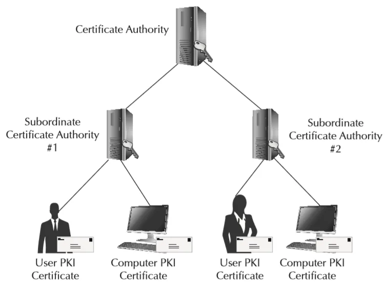
مراکز میانی نیز میتوانند نسبت به صدور، تجدید یا لغو گواهینامه اقدام کنند. یک سازمان بزرگ مثلا Acme را در نظر بگیرید. این سازمان ممکن است مرکز ریشه با نام Acme-CA داشته باشد و برای هر یک از نواحی غربی، شرقی و مرکز یک مرکز میانی جداگانه ایجاد کرده باشد. این کار باعث میشود که پرسنل امنیتی IT در هر یک از این سه ناحیه بتوانند روی گواهینامه های کاربران و تجهیزات خود کنترل داشته باشند.
نکته: بجای اینکه یک سازمان زیرساخت کلید عمومی خود را ایجاد کند، ممکن است تمایل داشته باشند که گواهینامه ها را از یک مرکز ثالث قابل اطمینان نظیرVeriSign یا Entrust دریافت کنند. سیستم های عامل جدید لیستی از مراکز ریشه قابل اطمینان را در خود دارند و اگر یک سازمان بخواهد زیرساخت کلید عمومی خودش را داشته باشد، باید مطمئن شوند که همه کاربران و تجهیزات نهایی مرکز ریشه آنها را قبول کنند.
قبل از اینکه داده رمز شود، به آن پیام عادی گفته میشود. در زمانی که یک متن رایانه رمز نشده در شبکه ارسال میشود، این امکان وجود دارد که یک شخص ثالث کل آن را شنود کند.
مبهم سازی به معنای استفاده از یک سری الگوهای از پیش تعیین شده برای پنهان کردن داده های حساس است. از جمله این الگوها میتوان به الگوی جایگزینی، برهم زدن27 کاراکترها یا حذف کاراکترهایی مشخص اشاره کرد. مبهم سازی بسیار امن تر از پیام عادی است، اما اگر یک موجودیت بداندیش به اندازه کافی وقت بگذارد میتواند با روشهای مهندسی معکوس آن را رمزگشایی کند.
رمز به معنای استفاده از الگوریتم های ریاضی برای رمزنگاری داده های عادی است. با بکارگیری یک الگوریتم رمزنگاری بر روی پیام عادی، پیام رمزشده بدست می آید.
در رمزنگاری متقارن به یک کلید یا کلمه عبور برای رمز کردن داده نیاز است. رمزنگاری متقارن تحت عنوان رمزنگاری کلید خصوصی نیز شناخته میشود، به این دلیل که تنها با استفاده از یک کلید میتوان داده را هم رمزنگاری و هم رمزگشایی کرد. مشابه کلیدی که با آن یک در را باز و بسته میکنند. به همین دلیل باید کلید را در یک جای امن نگهداری کرد که در دسترس هر کسی قرار نگیرد.
در رمزنگاری نامتقارن یا رمزنگاری کلید عمومی، هر طرف یک جفت کلید دارد: کلید عمومی که آزادانه منتشر میشود و کلید خصوصی که فقط در اختیار صاحب آن است. دادهای که با کلید عمومی یک فرد رمز شود، فقط با کلید خصوصی همان فرد رمزگشایی میشود. به این ترتیب، مشکل اصلی رمزنگاری متقارن، یعنی انتقال امن کلید مشترک، حل میشود. زیرساخت کلید عمومی که در ابتدای این بخش توضیح داده شد، برای اطمینان از تعلق هر کلید عمومی به صاحب واقعی آن به کار میرود.
رمزنگاری نامتقارن بسیار کندتر از رمزنگاری متقارن است. به همین دلیل در عمل از روش ترکیبی استفاده میشود: با رمزنگاری نامتقارن یک کلید متقارن موقت (کلید نشست) بهطور امن مبادله میشود و سپس دادههای اصلی با همان کلید متقارن رمز میشوند. پروتکل TLS دقیقاً به همین شکل کار میکند.
تابع درهمسازی (Hash) از هر دادهای با هر طولی، یک خلاصه با طول ثابت تولید میکند؛ کوچکترین تغییر در داده، خلاصه را کاملاً تغییر میدهد و نمیتوان از خلاصه به داده اصلی رسید. درهمسازی برای بررسی صحت دادهها و نگهداری امن رمزهای عبور استفاده میشود. الگوریتمهای خانواده SHA-2 (مانند SHA-256) امروزه رایجاند و MD5 و SHA-1 بهدلیل ضعفهای شناختهشده نباید برای مقاصد امنیتی استفاده شوند.
در امضای دیجیتال، فرستنده خلاصه پیام را با کلید خصوصی خود رمز میکند. گیرنده با کلید عمومی فرستنده آن را بازمیکند و با خلاصهای که خودش از پیام محاسبه کرده مقایسه میکند. امضای دیجیتال سه ویژگی را تضمین میکند: احراز اصالت فرستنده، صحت پیام و عدم انکار (فرستنده نمیتواند ارسال را انکار کند).
| الگوریتم | نوع | توضیح |
|---|---|---|
| AES | متقارن | استاندارد فعلی رمزنگاری متقارن با کلیدهای ۱۲۸، ۱۹۲ و ۲۵۶ بیتی |
| 3DES | متقارن | قدیمی و منسوخ؛ فقط برای سازگاری با سیستمهای قدیمی |
| RC4 | متقارن (جریانی) | دارای ضعفهای جدی؛ نباید استفاده شود |
| RSA | نامتقارن | رایج برای مبادله کلید و امضای دیجیتال؛ کلید حداقل ۲۰۴۸ بیتی |
| ECC | نامتقارن | امنیت معادل RSA با کلیدهای بسیار کوتاهتر و سرعت بیشتر |
| DSA / ECDSA | نامتقارن | ویژه امضای دیجیتال |
نکته آزمون: AES متقارن و RSA و ECC نامتقارن هستند. درهمسازی رمزنگاری نیست، زیرا برگشتپذیر نیست.
داده در حال انتقال (In Transit) با پروتکلهایی مانند TLS و IPsec محافظت میشود. داده در حال سکون (At Rest) روی دیسکها، پایگاههای داده و نسخههای پشتیبان با رمزنگاری دیسک، رمزنگاری پایگاه داده یا رمزنگاری در سطح شیء محافظت میشود. در ابرهای عمومی، رمزنگاری در حال سکون معمولاً با یک کلیک یا بهصورت پیشفرض فعال است.
امنیت رمزنگاری به امنیت کلیدها وابسته است. سرویس مدیریت کلید (KMS) ایجاد، ذخیره، چرخش و ابطال کلیدها را متمرکز میکند و همه استفادهها از کلید را ثبت میکند. ماژول امنیتی سختافزاری (HSM) دستگاهی مقاوم در برابر دستکاری است که کلیدها هرگز از آن خارج نمیشوند. سازمانهایی که الزامات سختگیرانه دارند، میتوانند در ابر از روش کلید متعلق به مشتری (BYOK) استفاده کنند تا کنترل کلیدها در دست خودشان بماند. چرخش منظم کلیدها دامنه آسیب در صورت لو رفتن یک کلید را محدود میکند.
در این فصل تجربیات موفق امنیت شبکه شامل ارزیابی و ممیزی شبکه، چهارچوبهای صنعتی، لایهبندی امنیتی و DMZ، ممیزی شخص ثالث، محکمکاری میزبان و مهمان، تست نفوذ، ارزیابی آسیبپذیری و امن کردن منابع ذخیرهسازی بررسی شد. در بخش امنیت داده، زیرساخت کلید عمومی، پیام عادی، مبهمسازی، پیام رمزشده، رمزنگاری متقارن و نامتقارن، درهمسازی و امضای دیجیتال، الگوریتمها و پروتکلهای رمزنگاری و مدیریت کلید توضیح داده شد.
پاسخ صحیح: ب) تست نفوذ تلاش میکند از آسیبپذیریها بهرهبرداری کند، اما ارزیابی آسیبپذیری فقط آنها را شناسایی میکند
ارزیابی آسیبپذیری آسیبپذیریها را شناسایی و گزارش میکند، اما تست نفوذ حمله را شبیهسازی و از آنها بهرهبرداری میکند.
پاسخ صحیح: ب) DMZ
DMZ ناحیه میانی است که سرویسهای در دسترس عموم را از شبکه داخلی جدا میکند.
پاسخ صحیح: ج) AES
AES متقارن است. RSA و ECC نامتقارناند و SHA-256 یک تابع درهمسازی است، نه الگوریتم رمزنگاری.
پاسخ صحیح: ب) عدم انکار
چون فقط فرستنده به کلید خصوصی خود دسترسی دارد، امضای دیجیتال عدم انکار را فراهم میکند.
پاسخ صحیح: الف) BYOK همراه با سرویس مدیریت کلید
در روش کلید متعلق به مشتری (BYOK)، سازمان کلیدها را خودش ایجاد و مدیریت میکند و ارائهدهنده فقط از آنها استفاده میکند.
Information Technology Infrastructure Library (ITIL)↩︎
Microsoft Operations Framework↩︎
Demilitarized zone↩︎
Access List↩︎
allow↩︎
deny↩︎
Intrusion detection systems↩︎
Intrusion prevention systems↩︎
Distributed Denial of Service (DDoS)↩︎
Ping of Death (PoD)↩︎
Principle of least privilege↩︎
Penetration Testing↩︎
Storage area network (SAN)↩︎
Logical unit numbers (LUNs)↩︎
Host bus adapter↩︎
Zoning↩︎
Rapid deployment↩︎
Data in motion↩︎
Data at rest↩︎
Authentication↩︎
Authorization↩︎
Data Integrity↩︎
Public Key Infrastructure↩︎
Certification Authority↩︎
Plaintext↩︎
Obfuscation↩︎
Shuffle↩︎
Cipher Text↩︎
Symmetric Encryption↩︎
در فصل قبل محافظت از شبکه و دادهها با ابزارهایی مانند لایهبندی امنیتی و رمزنگاری بررسی شد. اما حتی امنترین شبکه و قویترین رمزنگاری نیز اگر یک حساب کاربری با دسترسی بیش از حد به دست مهاجم بیفتد، بیاثر میشود. در ابر، که بیشتر منابع از طریق اینترنت و رابطهای برنامهنویسی مدیریت میشوند، هویت به مرز اصلی امنیت تبدیل شده است.
در کنترل دسترسی اجباری (Mandatory Access Control)، دسترسی بر اساس برچسبهای امنیتی که توسط سیستم و مدیر امنیت تعیین میشوند کنترل میشود؛ مثلاً «محرمانه» یا «سری». کاربر فقط به اطلاعاتی دسترسی دارد که سطح مجوز او برابر یا بالاتر از برچسب آن باشد و مالک داده نمیتواند این قواعد را تغییر دهد. MAC بیشتر در محیطهای نظامی و دولتی استفاده میشود.
در کنترل دسترسی اختیاری (Discretionary Access Control)، مالک هر منبع تعیین میکند چه کسانی به آن دسترسی داشته باشند؛ مانند مجوزهای پوشهها در سیستمعاملها. این مدل انعطافپذیر است، اما در سازمانهای بزرگ کنترل متمرکز آن دشوار است و احتمال اعطای دسترسی بیش از حد زیاد است.
در کنترل دسترسی مبتنی بر نقش (Role-Based Access Control)، مجوزها به نقشها داده میشوند (مانند «مدیر شبکه» یا «اپراتور پشتیبانگیری») و کاربران بر اساس شغل خود عضو نقشها میشوند. با تغییر شغل یک فرد، کافی است نقش او تغییر کند. RBAC رایجترین مدل در سازمانها و پلتفرمهای ابری است.
در کنترل دسترسی مبتنی بر ویژگی، تصمیم بر اساس ویژگیهای کاربر (مثلاً واحد سازمانی)، منبع (مثلاً برچسب محیط) و شرایط (مثلاً زمان یا مکان درخواست) گرفته میشود. ABAC کنترل بسیار دقیقتری ممکن میکند؛ برای مثال «توسعهدهندگان فقط میتوانند منابعی را که برچسب محیط آزمون دارند، در ساعات کاری متوقف کنند».
نکته آزمون: در MAC سیستم، در DAC مالک داده و در RBAC نقش شغلی کاربر تعیینکننده دسترسی است.
سرویسهای مدیریت هویت و دسترسی (IAM) در ابرهای عمومی معمولاً این اجزا را دارند:
حساب ریشه یا مالک اصلی حساب ابری اختیارات نامحدود دارد. این حساب باید با احراز هویت چندعاملی قوی محافظت شود و برای کارهای روزمره استفاده نشود. مدیریت دسترسی ممتاز (PAM) حسابهای پرقدرت را جدا نگهداری میکند، استفاده از آنها را ثبت و در صورت نیاز به تأیید وابسته میکند.
رمزهای عبور پایگاه داده، کلیدهای API و توکنها اسرار (Secrets) نامیده میشوند و نباید در کد برنامه، فایلهای پیکربندی یا مخزن کد ذخیره شوند. سرویسهای مدیریت اسرار آنها را بهصورت رمزشده نگهداری میکنند، دسترسی را ثبت میکنند و امکان چرخش خودکار را فراهم میکنند. ترجیحاً به جای کلیدهای دائمی، از نقشهایی استفاده شود که به ماشین یا سرویس اعتبارنامه موقت میدهند.
ایجاد حساب هنگام استخدام، تغییر دسترسی هنگام جابهجایی شغلی و غیرفعال کردن فوری حساب هنگام ترک سازمان باید فرایندی رسمی و ترجیحاً خودکار باشد. بازبینی دورهای دسترسیها دسترسیهای اضافه و حسابهای بلااستفاده را آشکار میکند. حسابهای فعالِ کارکنان سابق یکی از مسیرهای رایج نفوذ هستند.
احراز هویت چندعاملی (MFA) از دو یا چند عامل از دستههای متفاوت استفاده میکند:
| عامل | مثال |
|---|---|
| چیزی که میدانید | رمز عبور، PIN |
| چیزی که دارید | تلفن همراه با برنامه احراز هویت، کلید سختافزاری، کارت هوشمند |
| چیزی که هستید | اثر انگشت، تشخیص چهره |
دو رمز عبور، احراز هویت چندعاملی محسوب نمیشود، زیرا هر دو از یک دستهاند. کلیدهای سختافزاری مبتنی بر استاندارد FIDO2 در برابر حملات فیشینگ مقاومتر از کدهای پیامکی هستند.
در ورود یکپارچه (SSO) کاربر یک بار احراز هویت میشود و بدون ورود مجدد به چندین برنامه دسترسی پیدا میکند. SSO هم تجربه کاربر را بهتر میکند و هم امنیت را، زیرا کاربران رمزهای کمتری دارند و سازمان میتواند سیاستهایی مانند MFA را در یک نقطه اعمال کند. در مقابل، اگر حساب SSO لو برود، دسترسی به همه برنامهها به خطر میافتد؛ بنابراین MFA برای آن ضروری است.
فدراسیون اعتماد بین ارائهدهنده هویت (IdP) سازمان و ارائهدهنده سرویس (SP) مانند یک برنامه SaaS یا کنسول ابر را برقرار میکند؛ بهطوری که کاربران با حساب سازمانی خود وارد سرویس بیرونی شوند و سازمان مجبور به ساخت حساب جداگانه در هر سرویس نباشد. پروتکلهای رایج عبارتاند از:
نکته آزمون: OAuth برای مجوزدهی است، نه احراز هویت؛ OpenID Connect احراز هویت را به آن اضافه میکند.
همه عملیات مدیریتی در ابر، چه از طریق کنسول و چه از طریق API، باید ثبت شوند. این گزارشها در فضایی تغییرناپذیر و جدا از حسابهای عملیاتی نگهداری و به SIEM (فصل هفتم) ارسال میشوند. ممیزی منظم این گزارشها رفتارهای مشکوک، مانند ورود از کشورهای غیرمنتظره یا ایجاد کلیدهای دسترسی جدید، را آشکار میکند.
سازمانها بسته به صنعت و محل فعالیت، باید با مقررات مختلفی منطبق باشند؛ مانند HIPAA برای اطلاعات سلامت در ایالات متحده (که در فصل اول در مثال ابر انجمنی به آن اشاره شد)، PCI DSS برای اطلاعات کارتهای پرداخت و GDPR برای دادههای شخصی شهروندان اتحادیه اروپا. استانداردهایی مانند ISO/IEC 27001 چهارچوب مدیریت امنیت اطلاعات را تعیین میکنند و ISO/IEC 27017 و 27018 راهنماییهای ویژه ابر ارائه میدهند. ارائهدهندگان ابر گزارشهای ممیزی و گواهینامههای خود را در اختیار مشتریان قرار میدهند، اما بر اساس مدل مسئولیت مشترک (فصل اول)، مشتری همچنان مسئول انطباق بخشهایی است که خودش کنترل میکند.
حاکمیت داده (Data Sovereignty) به این معناست که دادهها تابع قوانین کشوری هستند که در آن نگهداری میشوند. برخی مقررات، نگهداری انواعی از دادهها را فقط در داخل مرزهای یک کشور مجاز میدانند. در ابر عمومی این الزام با انتخاب منطقه (Region) مناسب و محدود کردن تکثیر داده به مناطق دیگر رعایت میشود.
در این فصل مدلهای کنترل دسترسی MAC، DAC، RBAC و ABAC و اصول حداقل دسترسی و تفکیک وظایف بررسی شد. اجزای IAM در ابر، حسابهای ممتاز، مدیریت اسرار و چرخه عمر حسابها توضیح داده شد. سپس احراز هویت چندعاملی، ورود یکپارچه و فدراسیون با SAML، OAuth و OpenID Connect معرفی شدند و در پایان ممیزی، مقررات، استانداردها و حاکمیت داده مرور شد.
پاسخ صحیح: ب) DAC
در کنترل دسترسی اختیاری (DAC) مالک داده درباره دسترسیها تصمیم میگیرد.
پاسخ صحیح: ب) تغییر عضویت او از نقش پشتیبانی به نقش شبکه
در RBAC مجوزها به نقشها داده میشوند و با تغییر شغل، فقط عضویت نقش کاربر تغییر میکند. نقش قبلی نیز باید حذف شود تا دسترسی اضافه باقی نماند.
پاسخ صحیح: ج) رمز عبور و کد برنامه احراز هویت روی تلفن همراه
رمز عبور «چیزی که میدانید» و تلفن همراه «چیزی که دارید» است؛ سایر گزینهها همه از دسته «چیزی که میدانید» هستند.
پاسخ صحیح: ب) نگهداری اسرار در سرویس مدیریت اسرار و استفاده از اعتبارنامه موقت
اسرار نباید در کد قرار گیرند. کلید لو رفته باید فوراً ابطال شود و برای آینده از مدیریت اسرار و نقشهای دارای اعتبارنامه موقت استفاده شود.
پاسخ صحیح: ب) OAuth 2.0
OAuth 2.0 چهارچوب مجوزدهی است؛ OpenID Connect احراز هویت را روی آن اضافه میکند.
قطعی برق، خرابی سختافزار، خطای انسانی، باجافزار و بلایای طبیعی دیر یا زود رخ میدهند. سؤال این نیست که آیا اتفاق میافتند، بلکه این است که سازمان چقدر سریع و با چه میزان از دست دادن داده میتواند به کار ادامه دهد. ابر ابزارهای قدرتمندی برای بازیابی فراهم کرده است، اما این ابزارها فقط در چهارچوب یک برنامه سنجیده و آزموده مؤثرند.
برنامه تداوم کسبوکار (BCP) مشخص میکند سازمان چگونه کارکردهای حیاتی خود را در زمان بحران حفظ میکند؛ این برنامه افراد، فرایندها، مکانها و ارتباطات را نیز در بر میگیرد. برنامه بازیابی از فاجعه (DRP) بخشی از BCP است که بر بازگرداندن سیستمها و دادههای فناوری اطلاعات تمرکز دارد.
نقطه شروع هر دو برنامه، تحلیل اثر کسبوکار (BIA) است: شناسایی فرایندهای کسبوکار، سیستمهایی که به آنها وابستهاند و هزینه توقف هر کدام در طول زمان. نتیجه BIA اولویت بازیابی سیستمها و اهداف بازیابی هر کدام را تعیین میکند. همه سیستمها به یک اندازه مهم نیستند و تأمین بالاترین سطح حفاظت برای همه، هزینهای غیرضروری ایجاد میکند.
یک DRP خوب شامل این موارد است: فهرست سیستمها به ترتیب اولویت، اهداف بازیابی، نقشها و مسئولیتها، فهرست تماسها، شرایط اعلام فاجعه، رویههای گامبهگام بازیابی، محل نسخههای پشتیبان و اسناد، و رویه بازگشت به وضعیت عادی. نسخهای از برنامه باید خارج از سیستمهایی که ممکن است از کار بیفتند در دسترس باشد.
نکته آزمون: RTO درباره زمان بازگشت سرویس و RPO درباره میزان داده قابل از دست رفتن است. RPO کوچکتر به پشتیبانگیری یا تکثیر مکررتر نیاز دارد و RTO کوچکتر به سایت آمادهتر.
| نوع | محتوا | سرعت پشتیبانگیری | سرعت بازیابی |
|---|---|---|---|
| کامل | همه دادهها | کند | سریع (فقط یک مجموعه لازم است) |
| افزایشی | تغییرات از آخرین پشتیبان (از هر نوع) | سریع | کند (کامل + همه افزایشیها) |
| تفاضلی | تغییرات از آخرین پشتیبان کامل | متوسط | متوسط (کامل + آخرین تفاضلی) |
تصاویر لحظهای آرایه یا ماشین مجازی (فصل ششم) ابزار مفیدی برای بازگشت سریع هستند، اما بهتنهایی پشتیبان محسوب نمیشوند؛ مگر آنکه به فضای ذخیرهسازی دیگری کپی شوند.
قاعده رایج پشتیبانگیری میگوید: حداقل سه نسخه از داده، روی دو نوع رسانه یا سیستم متفاوت و دستکم یک نسخه خارج از سایت اصلی نگهداری شود. در برابر باجافزار، دستکم یک نسخه باید تغییرناپذیر (Immutable) یا جداشده از شبکه باشد تا مهاجمی که به سیستمها نفوذ کرده نتواند آن را رمز یا حذف کند.
در تکثیر همزمان (Synchronous)، هر نوشتن فقط زمانی تأیید میشود که در هر دو سایت ثبت شده باشد؛ بنابراین هیچ دادهای از دست نمیرود (RPO نزدیک به صفر)، اما تأخیر شبکه بین دو سایت مستقیماً به زمان هر نوشتن اضافه میشود و این روش فقط برای فاصلههای کوتاه مناسب است. در تکثیر ناهمزمان (Asynchronous)، نوشتن ابتدا در سایت اصلی تأیید و سپس با کمی تأخیر به سایت دوم ارسال میشود؛ برای فاصلههای طولانی مناسب است، اما در زمان فاجعه ممکن است چند ثانیه یا چند دقیقه آخر داده از دست برود.
نکته آزمون: تکثیر جایگزین پشتیبانگیری نیست. اگر دادهای اشتباهاً حذف یا توسط باجافزار رمز شود، تکثیر همان خرابی را به سایت دوم نیز منتقل میکند.
| سایت | وضعیت | زمان بازیابی | هزینه |
|---|---|---|---|
| سرد (Cold) | فضا و برق دارد، اما تجهیزات یا داده آماده نیست | روزها تا هفتهها | کم |
| گرم (Warm) | تجهیزات آماده، دادهها از آخرین پشتیبان | ساعتها | متوسط |
| داغ (Hot) | نسخه کامل و همگام از محیط اصلی | دقیقهها | زیاد |
ابر هزینه سایتهای بازیابی را بهشدت کاهش داده است. در الگوی چراغ راهنما (Pilot Light)، فقط اجزای حیاتی مانند پایگاه داده تکثیرشده در ابر روشن نگه داشته میشوند و بقیه زیرساخت از روی قالبها و کد، فقط در زمان فاجعه ساخته میشود. در الگوی فعال-فعال، هر دو سایت همزمان به کاربران سرویس میدهند.
ارائهدهندگان ابر عمومی زیرساخت خود را در مناطق (Region) جغرافیایی جدا و هر منطقه را در چند ناحیه دسترسپذیری (Availability Zone) مستقل با برق، سرمایش و شبکه جداگانه سازماندهی میکنند. توزیع یک برنامه بین چند ناحیه، آن را در برابر خرابی یک مرکز داده محافظت میکند. استقرار در چند منطقه نیز در برابر رخدادهای منطقهای گسترده محافظت میکند، اما پیچیدگی و هزینه بیشتری دارد.
خوشه دسترسپذیری بالا چند سرور را به هم مرتبط میکند تا در صورت خرابی یکی، دیگری کار را ادامه دهد. جابهجایی (Failover) انتقال سرویس به سیستم یا سایت پشتیبان و بازگشت (Failback) بازگرداندن آن به سیستم یا سایت اصلی پس از رفع مشکل است. بازگشت نیز باید برنامهریزی و آزمون شود؛ زیرا دادههایی که در زمان فعالیت سایت پشتیبان ایجاد شدهاند باید به سایت اصلی منتقل شوند.
طرحی که آزمون نشده، فقط یک فرض است. روشهای آزمون از کمهزینه به پرهزینه عبارتاند از:
بازیابی نسخههای پشتیبان نیز باید بهطور منظم آزمون شود. نسخه پشتیبانی که هرگز بازیابی نشده، نمیتوان مطمئن بود قابل استفاده است. نتایج هر آزمون، زمانهای واقعی بازیابی را با RTO و RPO مقایسه میکند و نقاط ضعف برنامه را آشکار میکند.
در این فصل برنامه تداوم کسبوکار، برنامه بازیابی از فاجعه و تحلیل اثر کسبوکار بررسی شد. شاخصهای RTO، RPO، MTBF و MTTR تعریف شدند. انواع پشتیبانگیری، قاعده ۳-۲-۱، نسخههای تغییرناپذیر و تکثیر همزمان و ناهمزمان توضیح داده شد. سپس سایتهای سرد، گرم و داغ، الگوهای بازیابی ابری، مناطق و نواحی دسترسپذیری و خوشهبندی معرفی شدند و در پایان روشهای آزمون طرح بازیابی مرور شد.
پاسخ صحیح: ب) RPO
RPO حداکثر میزان قابل قبول از دست رفتن داده بر حسب زمان است.
پاسخ صحیح: ج) تفاضلی
پشتیبان تفاضلی همه تغییرات از آخرین پشتیبان کامل را دارد؛ پشتیبان افزایشی فقط تغییرات از آخرین پشتیبان از هر نوع را ذخیره میکند.
پاسخ صحیح: ب) ناهمزمان
در فاصلههای طولانی، تأخیر شبکه تکثیر همزمان را غیرعملی میکند و تکثیر ناهمزمان مناسب است.
پاسخ صحیح: ب) نگهداری نسخه پشتیبان تغییرناپذیر یا جدا از شبکه
تکثیر خرابی را منتقل میکند؛ فقط نسخه پشتیبان تغییرناپذیر یا جداشده از دسترس مهاجم در امان میماند.
پاسخ صحیح: ج) تمرین روی میز
در تمرین روی میز، تیم سناریو را در یک جلسه و بدون اجرای واقعی روی سیستمها مرور میکند.
کتاب اصلی که فصلهای ترجمهشده این مجموعه از آن گرفته شده، برای نسخه نخست آزمون Cloud+ با کد CV0-001 نوشته شده است. این آزمون از آن زمان چند بار بهروزرسانی شده است. این پیوست تفاوتهای مهم را مرور میکند و حوزه DevOps را که در نسخههای قبلی وجود نداشت بهطور خلاصه معرفی میکند.
نسخه فعلی آزمون با کد CV0-004 در ۲۴ سپتامبر ۲۰۲۴ عرضه شد. این آزمون حداکثر ۹۰ سؤال چندگزینهای و عملکردی (Performance-based) دارد، مدت آن ۹۰ دقیقه است و نمره قبولی آن ۷۵۰ در مقیاس ۱۰۰ تا ۹۰۰ است. CompTIA معمولاً هر نسخه را حدود سه سال پس از عرضه بازنشسته میکند؛ بنابراین پیش از ثبتنام، کد و اهداف آزمون فعلی را در وبسایت CompTIA بررسی کنید.
بیشتر مفاهیم پایه این کتاب، مانند مدلهای سرویس و استقرار، ذخیرهسازی، شبکه، مجازیسازی، امنیت و بازیابی از فاجعه، همچنان بخش اصلی آزمون هستند. تفاوت اصلی در تأکید بیشتر بر خودکارسازی، کانتینرها، زیرساخت بهعنوان کد، مدیریت هزینه و سناریوهای عیبیابی است.
| حوزه | وزن | فصلهای مرتبط در این کتاب |
|---|---|---|
| معماری ابر | ۲۳٪ | ۱، ۲، ۳، ۴، ۵ و ۱۳ |
| استقرار | ۱۹٪ | ۵، ۶ و ۹ |
| امنیت | ۱۹٪ | ۱۱ و ۱۲ |
| عملیات | ۱۷٪ | ۷، ۸ و ۹ |
| عیبیابی | ۱۲٪ | ۱۰ |
| مبانی DevOps | ۱۰٪ | ۹ و بخش بعدی این پیوست |
DevOps فرهنگ و مجموعه روشهایی است که تیمهای توسعه و عملیات را به هم نزدیک میکند تا نرمافزار سریعتر، با کیفیت بالاتر و با ریسک کمتر تحویل داده شود. CompTIA اعلام کرده که CV0-004 نخستین آزمون این مؤسسه است که حوزه مستقلی برای DevOps دارد.
همه چیز، از کد برنامه تا تعریف زیرساخت و پیکربندی، در یک سیستم کنترل نسخه مانند Git نگهداری میشود. هر تغییر از طریق یک شاخه و درخواست ادغام (Pull Request) انجام و پیش از ادغام توسط همکاران بازبینی میشود. این روش همان اهداف مدیریت تغییرات (فصل نهم) را با سرعت بیشتری محقق میکند.
در یکپارچهسازی پیوسته (CI) هر تغییر کد بهطور خودکار ساخته و با آزمونهای خودکار بررسی میشود. در تحویل پیوسته (CD) نسخه آزمونشده بهطور خودکار تا محیط پیشتولید و در صورت تأیید تا تولید منتقل میشود. مجموعه این مراحل خودکار را خط لوله (Pipeline) مینامند.
در رویکرد زیرساخت تغییرناپذیر، سرورها پس از استقرار ویرایش نمیشوند؛ هر تغییر با ساخت یک تصویر یا کانتینر جدید و جایگزینی نمونههای قدیمی انجام میشود. این رویکرد رانش پیکربندی (فصل نهم) را از بین میبرد. کانتینرها و Kubernetes (فصل پنجم) ابزارهای اصلی این رویکرد هستند.
پایشپذیری (Observability) گسترش پایش سنتی (فصل هفتم) است و بر سه نوع داده تکیه دارد: معیارها، گزارشها و ردگیریها (Traces) که مسیر یک درخواست را بین ریزسرویسهای مختلف دنبال میکنند.